Grasshopper Components
Rhino 6, Grasshopper 1.0.0007, 2969 components including addons.
Curve > Analysis
| Center (Cen) Find the center point and radius of arcs and circles. | |
| Evaluate Length (Eval) Evaluate a curve at a certain factor along its length. Length factors can be supplied both in curve units and normalized units. Change the [N] parameter to toggle between the two modes. | |
| Closed (Cls) Test if a curve is closed or periodic. | |
| Control Points (CP) Extract the nurbs control points and knots of a curve. | |
| Control Polygon (CPoly) Extract the nurbs control polygon of a curve. | |
| Curve Closest Point (Crv CP) Find the closest point on a curve. | |
| Curvature Evaluate the curvature of a curve at a specified parameter. | |
| Curve Depth (Depth) Measure the depth of a curve. | |
| Derivatives (CDiv) Evaluate the derivatives of a curve at a specified parameter. | |
| Discontinuity (Disc) Find all discontinuities along a curve. | |
| Curve Domain (CrvDom) Measure and set the curve domain | |
| Extremes (X-tremez) Find the extremes (highest and lowest points) on a curve. | |
| Curve Middle (MidPt) Get the point in the middle of a curve | |
| Curve Nearest Object (CrvNear) Find the object nearest to a curve. | |
| Curve Proximity (CrvProx) Find the pair of closest points between two curves. | |
| Segment Lengths (LenSeg) Finds the shortest and longest segments of a curve. | |
| Curve Side (Side) Find on which side of a curve a point exists | |
| Torsion Evaluate the torsion of a curve at a specified parameter. | |
| Deconstruct Arc (DArc) Retrieve the base plane, radius and angle domain of an arc. | |
| Deconstuct Rectangle (DRec) Retrieve the base plane and side intervals of a rectangle. | |
| End Points (End) Extract the end points of a curve. | |
| Evaluate Curve (Eval) Evaluate a curve at the specified parameter. | |
| Length (Len) Measure the length of a curve. | |
| Length Domain (LenD) Measure the length of a curve subdomain. | |
| Length Parameter (LenP) Measure the length of a curve to and from a parameter. | |
| Planar Test a curve for planarity. | |
| Point In Curve (InCurve) Test a point for closed curve containment. | |
| Containment (Con) Test a point for curve region containment. | |
| Point in Curves (InCurves) Test a point for multiple closed curve containment. | |
| Polygon Center (PCen) Find the center point (average) for a polyline. | |
| Curve Frame (Frame) Get the curvature frame of a curve at a specified parameter. | |
| Horizontal Frame (HFrame) Get a horizontally aligned frame along a curve at a specified parameter. | |
| Perp Frame (PFrame) Solve the perpendicular (zero-twisting) frame at a specified curve parameter. |
Curve > Primitive
| Arc Create an arc defined by base plane, radius and angle domain. | |
| Modified Arc (ModArc) Create an arc based on another arc. | |
| Arc 3Pt (Arc) Create an arc through three points. | |
| Arc SED (Arc) Create an arc defined by start point, end point and a tangent vector. | |
| BiArc Create a bi-arc based on endpoints and tangents. | |
| Circle (Cir) Create a circle defined by base plane and radius. | |
| Circle 3Pt (Circle) Create a circle defined by three points. | |
| Circle CNR (Circle) Create a circle defined by center, normal and radius. | |
| Circle Fit (FCircle) Fit a circle to a collection of points. | |
| Circle TanTan (CircleTT) Create a circle tangent to two curves. | |
| Circle TanTanTan (CircleTTT) Create a circle tangent to three curves. | |
| Ellipse Create an ellipse defined by base plane and two radii. | |
| InCircle Create the incircle of a triangle. | |
| InEllipse Create the inscribed ellipse (Steiner ellipse) of a triangle. | |
| Line (Ln) Create a line between two points. | |
| Line 2Plane (Ln2Pl) Create a line between two planes. | |
| Line 4Pt (Ln4Pt) Create a line from four points. | |
| Fit Line (FLine) Fit a line to a collection of points. | |
| Line SDL (Line) Create a line segment defined by start point, tangent and length.} | |
| Polygon Create a polygon with optional round edges. | |
| Polygon Edge (PolEdge) Create a polygon from a single edge. | |
| Rectangle Create a rectangle on a plane | |
| Rectangle 2Pt (Rec 2Pt) Create a rectangle from a base plane and two points | |
| Rectangle 3Pt (Rec 3Pt) Create a rectangle from three points | |
| Tangent Arcs (TArc) Create tangent arcs between circles | |
| Tangent Lines (Tan) Create tangent lines between a point and a circle | |
| Tangent Lines (Ex) (TanEx) Create external tangent lines between circles | |
| Tangent Lines (In) (TanIn) Create internal tangent lines between circles | |
| TwoByFourJam (2x4 Jam) Jam a two-by-four into a crooked room |
Surface > Analysis
| Area Moments (AMoments) Solve area moments for breps, meshes and planar closed curves. | |
| Area Solve area properties for breps, meshes and planar closed curves. | |
| Box Corners Extract all 8 corners of a box. | |
| Box Properties (BoxProp) Get some properties of a box | |
| Brep Area Moments (AMoments) Solve Brep area moments. | |
| Brep Area (Area) Solve Brep area properties. | |
| Brep Closest Point (Brep CP) Find the closest point on a brep | |
| Brep Edges (Edges) Extract the edge curves of a brep. | |
| Point In Brep (BrepInc) Test whether a point is inside a closed brep | |
| Point In Breps (BrepsInc) Test whether a point is inside a collection of closed breps | |
| Brep Volume Moments (VMoments) Solve Brep volume moments. | |
| Brep Volume (Volume) Solve Brep volume properties. | |
| Brep Wireframe (Wires) Extract the wireframe curves of a brep. | |
| Deconstruct Box (DeBox) Deconstruct a box into its constituent parts. | |
| Deconstruct Brep (DeBrep) Deconstruct a brep into its constituent parts. | |
| Evaluate Box (Box) Evaluate a box in normalised {UVW} space. | |
| Evaluate Surface (EvalSrf) Evaluate local surface properties at a {uv} coordinate. | |
| Shape In Brep (ShapeIn) Tests whether a shape is inside a brep | |
| Surface Closest Point (Srf CP) Find the closest point on a surface. | |
| Surface Curvature (Curvature) Evaluate the surface curvature at a {uv} coordinate. | |
| Dimensions (Dim) Get the approximate dimensions of a surface | |
| Surface Inflection (SInf) Compute the inflection curves for a surface | |
| Is Planar (Planar) Test whether a surface is planar | |
| Osculating Circles (Osc) Calculate the principal osculating circles of a surface at a {uv} coordinate. | |
| Surface Points (SrfPt) Get the control-points of a Nurbs Surface | |
| Principal Curvature (Curvature) Evaluate the principal curvature of a surface at a {uv} coordinate. | |
| Point In Trim (TrimInc) Test whether a {uv} coordinate is inside the trimmed portion of a surface | |
| Volume Moments (VMoments) Solve volume properties for closed breps and meshes. |
Surface > Freeform
| Control Point Loft (CPLoft) Create a loft through curve control points. | |
| Fit Loft (FitLoft) Create a loft fitted through a set of curves. | |
| Extrude Angled (ExtrAng) Extrude a planar polyline at angles | |
| 4Point Surface (Srf4Pt) Create a surface connecting three or four corner points. | |
| Boundary Surfaces (Boundary) Create planar surfaces from a collection of boundary edge curves. | |
| Edge Surface (EdgeSrf) Create a surface from two, three or four edge curves. | |
| Extrude (Extr) Extrude curves and surfaces along a vector. | |
| Extrude Along (ExtrCrv) Extrude curves and surfaces along a curve. | |
| Extrude Linear (Extrude) Extrude curves and surfaces along a straight path. | |
| Extrude Point (Extr) Extrude curves and surfaces to a point. | |
| Fragment Patch (FPatch) Create a fragmented patch from a polyline boundary | |
| Loft Options (Loft Opt) Create loft options from atomic inputs | |
| Loft Create a lofted surface through a set of section curves. | |
| Network Surface (NetSurf) Create a surface from curve networks | |
| Patch Create a patch surface | |
| Pipe Create a pipe surface around a rail curve. | |
| Pipe Variable (VPipe) Create a pipe surface with variable radii around a rail curve. | |
| Surface From Points (SrfGrid) Create a nurbs surface from a grid of points. | |
| Rail Revolution (RailRev) Create a surface of revolution using a sweep rail. | |
| Revolution (RevSrf) Create a surface of revolution. | |
| Ruled Surface (RuleSrf) Create a surface between two curves. | |
| Sum Surface (SumSrf) Create a sum surface from two edge curves. | |
| Sweep1 (Swp1) Create a sweep surface with one rail curve. | |
| Sweep2 (Swp2) Create a sweep surface with two rail curves. |
Mesh > Util
| Exposure Solve mesh exposure for a collection of energy rays and obstructions. | |
| Align Vertices (AlignVert) Align nearby vertices in a mesh | |
| Blur Mesh (MBlur) Blur the colours on a mesh | |
| Simple Mesh (SMesh) Create a mesh that represents a Brep as simply as possible | |
| Cull Faces (CullF) Cull faces from a mesh | |
| Cull Vertices (CullV) Cull vertices from a mesh | |
| Delete Faces (DeleteF) Delete faces from a mesh | |
| Delete Vertices (DeleteV) Delete vertices from a mesh | |
| Mesh Join (MJoin) Join a set of meshes into a single mesh | |
| Quadrangulate (Quad) Quadrangulate as many triangles as possible in a mesh | |
| Settings (Custom) (Custom Mesh Settings) Represents custom mesh settings. | |
| Settings (Speed) (Jagged) Represents 'Jagged & faster' mesh settings. | |
| Settings (Quality) (Smooth) Represents 'Smooth & slower' mesh settings. | |
| Mesh Shadow (MShadow) Compute the shadow outline for a mesh object | |
| Disjoint Mesh (Disjoint) Split a mesh into disjoint pieces. | |
| Mesh Split Plane (MSplit) Split a mesh with an infinite plane. | |
| Mesh Surface (Mesh UV) Create a Surface UV mesh | |
| Triangulate (Tri) Triangulate all quads in a mesh | |
| Unweld Mesh (Unweld) Unweld (split) creases in a mesh | |
| Weld Mesh (Weld) Weld (merge) creases in a mesh | |
| Occlusion (Occ) Solve occlusion for a collection of view rays and obstructions. | |
| Flip Mesh (FlipM) Flip the normal vectors of a mesh | |
| Unify Mesh (UniM) Unify the normals of a mesh | |
| Smooth Mesh (MSmooth) Smooth the vertices of a mesh |
Curve > Spline
| Bezier Span (BzSpan) Construct a bezier span from endpoints and tangents. | |
| Blend Curve (BlendC) Create a blend curve between two curves. | |
| Blend Curve Pt (BlendCPt) Create a blend curve between two curves that intersects a point. | |
| Catenary (Cat) Create a catenary chain between two points. | |
| Catenary Ex (CatEx) Create a variable catenary chain between two points. | |
| Connect Curves (Connect) Connect a sequence of curves. | |
| Nurbs Curve (Nurbs) Construct a nurbs curve from control points. | |
| Interpolate (IntCrv) Create an interpolated curve through a set of points. | |
| Curve On Surface (CrvSrf) Create an interpolated curve through a set of points on a surface. | |
| Interpolate (t) (IntCrv(t)) Create an interpolated curve through a set of points with tangents. | |
| Tangent Curve (TanCurve) Create a curve through a set of points with tangents. | |
| Iso Curve (Iso) Construct {uv} isocurves on a surface. | |
| Kinky Curve (KinkCrv) Construct an interpolated curve through a set of points with a kink angle threshold. | |
| Match Curve (MatchCrv) Match two curves. | |
| Nurbs Curve PWK (NurbCrv) Construct a nurbs curve from control points, weights and knots. | |
| Knot Vector (Knots) Construct a nurbs curve knot vector. | |
| PolyArc (PArc) Create a polycurve consisting of arc and line segments. | |
| Poly Arc (PArc) Create a polycurve consisting of arc and line segments. | |
| PolyLine (PLine) Create a polyline connecting a number of points. | |
| Geodesic Construct a surface geodesic between two points. | |
| Sub Curve (SubCrv) Construct a curve from the sub-domain of a base curve. | |
| Swing Arc (Swing) Create a polycurve consisting of arcs defined by center points. | |
| Tween Curve (TweenCrv) Tween between two curves. |
Curve > Util
| Polyline Collapse (PCol) Collapse short segments in a polyline curve. | |
| Seam Adjust the seam of a closed curve. | |
| Curve To Polyline (ToPoly) Convert a curve to a polyline. | |
| Explode Explode a curve into smaller segments. | |
| Extend Curve (Ext) Extend a curve by a specified distance. | |
| Fillet Fillet the sharp corners of a curve. | |
| Fillet Distance (Fillet) Fillet the sharp corners of a curve by distance. | |
| Fit Curve (Fit) Fit a curve along another curve. | |
| Flip Curve (Flip) Flip a curve using an optional guide curve. | |
| Join Curves (Join) Join as many curves as possible | |
| Offset Curve (Offset) Offset a curve with a specified distance. | |
| Offset Curve Loose (Offset (L)) Offset the control-points of a curve with a specified distance. | |
| Offset Loose 3D (Offset (3D)) Offset the control-points of a curve with a specified distance in 3D. | |
| Offset on Srf (OffsetS) Offset a curve on a surface with a specified distance. | |
| Project Project a curve onto a Brep. | |
| Pull Curve (Pull) Pull a curve onto a surface. | |
| Rebuild Curve (ReB) Rebuild a curve with a specific number of control-points. | |
| Reduce (RedPLine) Reduce a polyline by removing least significant vertices. | |
| Simplify Curve (Simplify) Simplify a curve. | |
| Smooth Polyline (SmoothPLine) Smooth the vertices of a polyline curve. | |
| Offset Polyline (OP) Offset a 2D polyline |
Surface > Util
| Closed Edges (EdgesCls) Select closed edges. | |
| Convex Edges (EdgesCvx) Select concave or convex brep edges. | |
| Edges from Directions (EdgesDir) Select brep edges based on edge direction | |
| Edges from Length (EdgesLen) Select brep edges based on length | |
| Edges from Linearity (EdgesLin) Select brep edges based on linearity | |
| Edges from Points (EdgesPt) Select brep edges based on point coincidence | |
| Edges from Faces (EdgesFaces) Select all brep edges that delineate certain faces | |
| Fillet Edge (FilEdge) Fillet some edges of a brep. | |
| Brep Join (Join) Join a number of Breps together | |
| Cap Holes Ex (CapEx) Cap as many holes as possible in a Brep. | |
| Cap Holes (Cap) Cap all planar holes in a Brep. | |
| Copy Trim (Trim) Copy UV trim data from one surface to another. | |
| Flip Flip the normals of a surface based on local or remote geometry | |
| Isotrim (SubSrf) Extract an isoparametric subset of a surface. | |
| Merge Faces (FMerge) Merge all adjacent co-planar faces in a brep | |
| Offset Surface (Offset) Offset a surface by a fixed amount. | |
| Offset Surface Loose (Offset (L)) Offset a surface by moving the control points. | |
| Retrim Retrim a surface based on 3D trim data from another surface. | |
| Untrim Remove all trim curves from a surface. | |
| Divide Surface (SDivide) Generate a grid of {uv} points on a surface. | |
| Surface Frames (SFrames) Generate a grid of {uv} frames on a surface |
Kangaroo2 > Mesh
| ByParent Refine a Mesh, separating outputs by parent face | |
| Checkerboard Attempt to separate a mesh into 2 lists of non-adjacent faces | |
| Diagonalize (Diag) Replace each edge with a new face | |
| FaceFaceOffset (FaceFace) Offset a conical mesh so that corresponding faces are constant distance apart | |
| FoldAngle Measure the current angle between two triangles about their common edge | |
| HingePoints Get the 4 points for each internal edge to use in a Hinge Force | |
| Combine&Clean (Clean) Combine and Clean a list of meshes, removing unused and duplicate vertices | |
| MeshCorners (MC) Extract corners sharper than some angle | |
| MeshDirection (MD) Sort the face directions of a mesh | |
| MeshMap Map points from one mesh to another | |
| 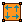 | MeshTurn (Turn) Rotate the vertex order of each face |
| NakedVertices (NV) Sorts the vertices of a mesh into 2 lists according to whether or not they are surrounded by faces | |
| Refine Divide each quad into 4 quads, and each triangle into 4 triangles | |
| 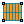 | RefineStrips (Strips) Directional subdivision, refines quads in one direction only |
| 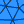 | SimpleRemesh Isotropically remesh a Brep or Mesh |
| Simple Simple Target Length | |
| Stripper Divide a mesh into strips | |
| TangentCircles (TC) Generate face incircles, circle packing centred on vertices, or incircular dual | |
| Unroller Unroll a strip of quads | |
| VertexNeighbours (VN) Returns the positions of the vertices connected the given vertex by an edge | |
| WarpWeft Separate the edges of a mesh into 2 lists according to Warp and Weft direction |
Maths > Operators
| Series Addition (SA) Perform serial addition until a goal has been reached | |
| Gate And (And) Perform boolean conjunction (AND gate). | |
| Gate Majority (Vote) Calculates the majority vote among three booleans. | |
| Equality (Equals) Test for (in)equality of two numbers | |
| Factorial (Fac) Returns the factorial of an integer. | |
| Larger Than (Larger) Larger than (or equal to) | |
| Mass Addition (MA) Perform mass addition of a list of items | |
| Mass Multiplication (MM) Perform mass multiplication of a list of items | |
| Gate Nand (Nand) Perform boolean alternative denial (NAND gate). | |
| Gate Nor (Nor) Perform boolean joint denial (NOR gate). | |
| Gate Not (Not) Perform boolean negation (NOT gate). | |
| Gate Or (Or) Perform boolean disjunction (OR gate). | |
| Relative Differences (RelDif) Compute relative differences for a list of data | |
| Similarity (Similar) Test for similarity of two numbers | |
| Smaller Than (Smaller) Smaller than (or equal to) | |
| Gate Xnor (Xnor) Perform boolean biconditional (XNOR gate). | |
| Gate Xor (Xor) Perform boolean exclusive disjunction (XOR gate). | |
| Integer Division (A\B) Mathematical integer division | |
| Absolute (Abs) Compute the absolute of a value. | |
| Negative (Neg) Compute the negative of a value. |
Kangaroo2 > Goals-Mesh
| Conicalize (Conical) Adjust a quad mesh to make vertices conical - so the mesh has a face-face offset (See the paper 'The focal geometry of circular and conical meshes' for details). Use together with Planarize | |
| CyclicQuad Make a quadrilateral have a circumscribed circle | |
| Developablize Turn a triangular mesh into developable patches with creases. Based on the paper 'Developability of Triangle Meshes' by Stein, Grinspun & Crane | |
| EdgeLengths Set the edge lengths of a mesh | |
| Hinge Hinge | |
| Isothermic (Iso) Make a quad mesh S-Isothermic, as described in the paper 'Quasiisothermic Mesh Layout' by Sechelmann, Rörig & Bobenko | |
| 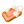 | LiveSoap (LS) For generating minimal and CMC (zero and constant mean curvature respectively) meshes which adapt their connectivity during relaxation to maintain triangle quality |
| NoFoldThrough To stop the sides of a hinge passing through each other | |
| Planarize Planarize | |
| PlasticHinge (PH) Like Hinge, except folding beyond the plastic/elastic threshold will alter the rest angle | |
| PolygonArea PolygonArea | |
| Pressure A force normal to each triangle, and proportional to its area | |
| Smooth Smooth | |
| SoapFilm (SG) Area minimizing triangle, for generating zero mean curvature meshes | |
| 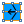 | TangentialSmooth (TSmooth) Smooth a mesh only in the local tangent planes. Used in conjunction with SoapFilm |
| TangentIncircles TangentIncircles | |
| VertexLoads Apply equal vertical loads to all vertices of a mesh | |
| Volume Set the total volume of a mesh | |
| 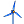 | Wind Wind |
Transform > Morph
| Map to Surface (Map Srf) Map a curve onto a surface via control points. | |
| Bend Deform (Bend) Deform a shape by bending it | |
| Box Morph (Morph) Morph an object into a twisted box. | |
| Point Deform (PDeform) Deform a shape by moving control-points individually | |
| Blend Box (BlendBox) Create a twisted box between two surfaces. | |
| Surface Box (SBox) Create a twisted box on a surface patch. | |
| Twisted Box (TBox) Create a twisted box from corner points. | |
| Mirror Curve (Mirror) Mirror a shape in a freeform curve. | |
| Mirror Surface (Mirror) Mirror geometry in a freeform surface. | |
| Surface Morph (SrfMorph) Morph geometry into surface UVW coordinates | |
| Spatial Deform (Deform) Perform spatial deformation based on custom space syntax. | |
| Spatial Deform (custom) (Deform) Perform spatial deformation based on custom space syntax. | |
| Flow Re-aligns objects from a base curve to a target curve. | |
| Maelstrom Spirally deforms objects as if they were caught in a whirlpool | |
| Splop Wraps geometry onto a surface. | |
| Sporph Deforms an object from a source surface to a target surface | |
| Stretch Deforms objects by stretching them along a finite axis. | |
| Taper Deforms objects toward or away from an axis | |
| Twist Deforms objects by twisting them around an axis. |
Vector > Plane
| Adjust Plane (PAdjust) Adjust a plane to match a new normal direction | |
| Align Plane (Align) Perform minimal rotation to align a plane with a guide vector | |
| Align Planes (Align) Align planes by minimizing their serial rotation. | |
| Construct Plane (Pl) Construct a plane from an origin point and {x}, {y} axes. | |
| Deconstruct Plane (DePlane) Deconstruct a plane into its component parts. | |
| Flip Plane (PFlip) Flip or swap the axes of a plane | |
| Plane 3Pt (Pl 3Pt) Create a plane through three points. | |
| Plane Closest Point (CP) Find the closest point on a plane. | |
| Plane Coordinates (PlCoord) Get the coordinates of a point in a plane axis system. | |
| Plane Fit (PlFit) Fit a plane through a set of points. | |
| Line + Line (LnLn) Create a plane from two line segments. | |
| Line + Pt (LnPt) Create a plane from a line and a point. | |
| Plane Normal (Pl) Create a plane perpendicular to a vector. | |
| Plane Offset (Pl Offset) Offset a plane. | |
| Plane Origin (Pl Origin) Change the origin point of a plane | |
| Rotate Plane (PRot) Perform plane rotation around plane z-axis | |
| XY Plane (XY) World XY plane. | |
| XZ Plane (XZ) World XZ plane. | |
| YZ Plane (YZ) World YZ plane. |
Vector > Point
| Project Point (Project) Project a point onto a collection of shapes | |
| Closest Point (CP) Find closest point in a point collection. | |
| Closest Points (CPs) Find closest points in a point collection. | |
| Construct Point (Pt) Construct a point from {xyz} coordinates. | |
| Cull Duplicates (CullPt) Cull points that are coincident within tolerance | |
| Deconstruct (pDecon) Deconstruct a point into its component parts. | |
| Deconstruct Point (DePoint) Deconstruct a point into its component parts. | |
| Distance (Dist) Compute Euclidean distance between two point coordinates. | |
| Numbers to Points (Num2Pt) Convert a list of numbers to a list of points | |
| Barycentric (BCentric) Create a point from barycentric {u,v,w} coordinates | |
| Point Cylindrical (Pt) Create a point from cylindrical {angle,radius,elevation} coordinates. | |
| Point Groups (PGroups) Create groups from nearby points | |
| Point Oriented (Pt) Create a point from plane {u,v,w} coordinates. | |
| Point Polar (Pt) Create a point from polar {phi,theta,offset} coordinates. | |
| To Polar (Polar) Convert a 3D point to plane polar coordinates. | |
| Points to Numbers (Pt2Num) Convert a list of points to a list of numbers | |
| Pull Point (Pull) Pull a point to a variety of geometry. |
Intersect > Mathematical
| Curve | Line (CLX) Solve intersection events for a curve and a line. | |
| Curve | Plane (PCX) Solve intersection events for a curve and a plane. | |
| Line | Line (LLX) Solve intersection events for two lines. | |
| Line | Plane (PLX) Solve intersection event for a line and a plane. | |
| Brep | Line (BLX) Solve intersection events for a Brep and a line. | |
| Brep | Plane (Sec) Solve intersection events for a Brep and a plane (otherwise known as section). | |
| Contour Create a set of Brep or Mesh contours | |
| Contour (ex) (Contour) Create a set of Brep or Mesh contours | |
| Mesh | Ray (MeshRay) Intersect a mesh with a semi-infinite ray | |
| Mesh | Plane (Sec) Solve intersection events for a Mesh and a Plane (otherwise known as section). | |
| Surface | Line (SLX) Solve intersection events for a surface and a line. | |
| IsoVist (IVist) Compute an isovist sampling at a location | |
| IsoVist Ray (IVRay) Compute a single isovist sample at a location | |
| Plane | Plane | Plane (3PX) Solve the intersection events of three planes. | |
| Plane | Plane (PPX) Solve the intersection event of two planes. | |
| Plane Region (PlReg) Create a bounded region from intersecting planes. |
Sets > Tree
| Construct Path (Path) Construct a data tree branch path. | |
| Deconstruct Path (DPath) Deconstruct a data tree path into individual integers. | |
| Entwine Flatten and combine a collection of data streams | |
| Merge 10 (M10) Merge ten streams into one. | |
| Merge Merge two streams into one. | |
| Merge 03 (M3) Merge three streams into one. | |
| Merge 04 (M4) Merge four streams into one. | |
| Merge 05 (M5) Merge five streams into one. | |
| Merge 06 (M6) Merge six streams into one. | |
| Merge 08 (M8) Merge eight streams into one. | |
| Merge Multiple (Merge) Merge multiple input streams into one | |
| Relative Item (RelItem) Retrieve a relative item combo from a data tree | |
| Relative Items (RelItem2) Retrieve a relative item combo from two data trees | |
| Tree Branch (Branch) Retrieve a specific branch from a data tree. | |
| Tree Item (Item) Retrieve a specific item from a data tree. | |
| Tree Statistics (TStat) Get some statistics regarding a data tree. |
Intersect > Shape
| Solid Difference (SDiff) Perform a solid difference on two Brep sets. | |
| Solid Intersection (SInt) Perform a solid intersection on two Brep sets. | |
| Trim Solid (Trim) Cut holes into a shape with a set of solid cutters. | |
| Solid Union (SUnion) Perform a solid union on a set of Breps. | |
| Box Slits (Slits) Add slits to a collection of intersecting boxes | |
| Boundary Volume (BVol) Create a closed polysurface from boundary surfaces | |
| Region Difference (RDiff) Difference between two sets of planar closed curves (regions) | |
| Region Intersection (RInt) Intersection between two sets of planar closed curves (regions) | |
| Region Union (RUnion) Union of a set of planar closed curves (regions) | |
| Mesh Difference (MDif) Perform a solid difference on two sets of meshes | |
| Mesh Intersection (MInt) Perform a solid intersection on a set of meshes | |
| Mesh Union (MUnion) Perform a solid union on a set of meshes | |
| Mesh Split (MSplit) Mesh Mesh split | |
| Region Slits (RSlits) Add slits to a collection of intersecting planar regions | |
| Split Brep (Split) Split one brep with another. | |
| Split Brep Multiple (SplitMul) Split one brep with a bunch of others. |
Vector
| Vector XYZ (Vec) Create a vector from {xyz} components. | |
| Deconstruct Vector (DeVec) Deconstruct a vector into its component parts. | |
| Solar Incidence (Solar) Gets the solar incidence vector for a certain time and place | |
| Unit Vector (Unit) Unitize vector. | |
| Unit X (X) Unit vector parallel to the world {x} axis. | |
| Unit Y (Y) Unit vector parallel to the world {y} axis. | |
| Unit Z (Z) Unit vector parallel to the world {z} axis. | |
| Vector 2Pt (Vec2Pt) Create a vector between two points. | |
| Amplitude (Amp) Set the amplitude (length) of a vector. | |
| Cross Product (XProd) Compute vector cross product. | |
| Divide (VDiv) Perform vector-scalar division. | |
| Dot Product (DProd) Compute vector dot product. | |
| Vector Length (VLen) Compute the length (amplitude) of a vector. | |
| Multiply (VMul) Perform vector-scalar multiplication. | |
| Reverse (Rev) Reverse a vector (multiply by -1). | |
| Rotate (VRot) Rotate a vector around an axis. |
Maths > Util
| Average (Avr) Solve the arithmetic average for a set of items | |
| Blur Numbers (NBlur) Blur a list of numbers by averaging neighbours | |
| Complex Argument (Arg) Get the argument of a Complex number | |
| Complex Components (Complex) Extract the Real and Imaginary components from a complex number | |
| Complex Conjugate (z*) Create the conjugate of a Complex number | |
| Complex Modulus (CMod) Get the modulus of a Complex number | |
| Create Complex (Complex) Create a complex number from a Real and an Imaginary component | |
| Natural logarithm (E) Returns a factor of the natural number (e). | |
| Epsilon (Eps) Returns a factor of double precision floating point epsilon. | |
| Interpolate data (Interp) Interpolate a collection of data. | |
| Golden Ratio (Phi) Returns a factor of the golden ratio (Phi). | |
| Pi Returns a factor of Pi. | |
| Truncate (Trunc) Perform truncation of numerical extremes | |
| Weighted Average (Wav) Solve the arithmetic weighted average for a set of items | |
| Round Round a floating point value. |
Sets > Sequence
| Char Sequence (CharSeq) Create a sequence of textual characters. | |
| Cull Index (Cull i) Cull (remove) indexed elements from a list. | |
| Cull Nth (CullN) Cull (remove) every Nth element in a list. | |
| Cull Pattern (Cull) Cull (remove) elements in a list using a repeating bit mask. | |
| Duplicate Data (Dup) Duplicate data a predefined number of times. | |
| Fibonacci (Fib) Creates a Fibonacci sequence. | |
| Jitter Randomly shuffles a list of values. | |
| Random Generate a list of pseudo random numbers. | |
| Random Reduce (Reduce) Randomly remove N items from a list | |
| Range Create a range of numbers. | |
| Repeat Data (Repeat) Repeat a pattern until it reaches a certain length. | |
| Sequence (Seq) Generate a sequence of numbers | |
| Series Create a series of numbers. | |
| Stack Data (Stack) Duplicate individual items in a list of data | |
| RandomEx (RndEx) Generate random data between extremes. |
Sets > List
| Combine Data (Combine) Combine non-null items out of several inputs | |
| Dispatch Dispatch the items in a list into two target lists. | |
| Insert Items (Ins) Insert a collection of items into a list. | |
| Null Item (Null) Test a data item for null or invalidity | |
| Item Index (Index) Retrieve the index of a certain item in a list. | |
| List Item (Item) Retrieve a specific item from a list. | |
| List Length (Lng) Measure the length of a list. | |
| Pick'n'Choose (P'n'C) Pick and choose from a set of input data. | |
| Replace Items (Replace) Replace certain items in a list. | |
| Shift List (Shift) Offset all items in a list. | |
| Sift Pattern (Sift) Sift elements in a list using a repeating index pattern. | |
| Sort List (Sort) Sort a list of numeric keys. | |
| Split List (Split) Split a list into separate parts. | |
| Sub List (SubSet) Extract a subset from a list. | |
| Weave Weave a set of input data using a custom pattern. |
Maths > Script
| GhPython Script (Python) GhPython provides a Python script component | |
| Evaluate (Eval) Evaluate an expression with a flexible number of variables. | |
| Expression Evaluate an expression | |
| Variable Expression (Exp) Expression component with a variable amount of input parameters. | |
| F4 (F(a,b,c,d)) A function of four variables; {a,b,c,d}. | |
| F8 (F(a,b,c,d,w,x,y,z)) A function of eight variables; {a,b,c,d,w,x,y,z}. | |
| F5 (F(a,b,c,d,x)) A function of five variables; {a,b,c,d,x}. | |
| F6 (F(a,b,c,d,x,y)) A function of six variables; {a,b,c,d,x,y}. | |
| F7 (F(a,b,c,d,x,y,z)) A function of seven variables; {a,b,c,d,x,y,z}. | |
| F1 (F(x)) A function of a single variable; {x}. | |
| F2 (F(x,y)) A function of two variables; {x,y} | |
| F3 (F(x,y,z)) A function of three variables; {x,y,z}. | |
| C# Script (C#) A C#.NET scriptable component | |
| VB Script (VB) A VB.NET scriptable component |
Sets
| Create Set (CSet) Creates the valid set from a list of items (a valid set only contains distinct elements). | |
| Find similar member (FSim) Find the most similar member in a set. | |
| Disjoint Test whether two sets are disjoint. | |
| SubSet Test two sets for inclusion. | |
| Key/Value Search (KeySearch) Extract an item from a collection using a key-value match | |
| Delete Consecutive (DCon) Delete consecutive similar members in a set. | |
| Replace Members (Replace) Replace members in a set. | |
| Carthesian Product (CProd) Create the Carthesian product for two sets of identical cardinality. | |
| Set Difference (Difference) Create the difference of two sets (the collection of objects present in A but not in B). | |
| Set Intersection (Intersection) Creates the intersection of two sets (the collection of unique objects present in both sets). | |
| Member Index (MIndex) Find the occurences of a specific member in a set. | |
| Set Difference (S) (ExDiff) Create the symmetric difference of two sets (the collection of objects present in A or B but not both). | |
| Set Majority (Majority) Determine majority member presence amongst three sets. | |
| Set Union (SUnion) Creates the union of two sets (the collection of unique objects present in either set). |
Surface > Primitive
| Bounding Box (BBox) Solve oriented geometry bounding boxes. | |
| Box 2Pt (Box) Create a box defined by two points. | |
| Box Rectangle (BoxRec) Create a box defined by a rectangle and a height. | |
| Center Box (Box) Create a box centered on a plane. | |
| Cone Create a conical surface | |
| Cylinder (Cyl) Create a cylindrical surface. | |
| Domain Box (Box) Create a box defined by a base plane and size domains. | |
| Plane Surface (PlaneSrf) Create a plane surface | |
| Plane Through Box (PxB) Fit a rectangular surface through a Box. | |
| Plane Through Shape (PxS) Make a rectangular surface that is larger than a given shape. | |
| Quad Sphere (QSph) Create a spherical brep made from quad nurbs patches. | |
| Sphere (Sph) Create a spherical surface. | |
| Sphere 4Pt (Sph4Pt) Create a spherical surface from 4 points. | |
| Sphere Fit (SFit) Fit a sphere to a 3D collection of points |
Display > Dimensions
| Aligned Dimension (AlignDim) Create a distance annotation between two points | |
| Arc Dimension (ArcDim) Create an angle annotation based on an arc. | |
| Circular Dimension (CircleDim) Create an angle annotation projected to a circle. | |
| Angular Dimension (AngleDim) Create an angle annotation between points. | |
| Linear Dimension (LinearDim) Create a distance annotation between points, projected to a line. | |
| Line Dimension (LineDim) Create a distance annotation along a line. | |
| Marker Dimension (MarkDim) Create a text annotation at a point | |
| Angular Dimensions (Mesh) (AngleDimMesh) Create angle annotations for all mesh corners. | |
| Serial Dimension (SerialDim) Create a distance annotation between multiple points, projected to a line. | |
| Make2D Create a hidden line drawing from geometry | |
| Make2D Rhino View (M2D Rhino) Import a Rhino view for a Make2D solution | |
| Make2D Parallel View (M2D Parallel) Define a parallel view for a Make2D solution | |
| Make2D Perspective View (M2D Perspective) Define a perspective view for a Make2D solution |
Sets > Text
| Text Case (Case) Change the CaSiNg of a piece of text | |
| Concatenate (Concat) Concatenate some fragments of text | |
| Format Format some text using placeholders and formatting tags | |
| Text Fragment (Fragment) Extract a fragment (subset) of some text | |
| Replace Text (Rep) Replace all occurences of a specific text fragment with another | |
| Sort Text (TSort) Sort a collection of text fragments | |
| Text Distance (TDist) Compute the Levenshtein distance between two fragments of text. | |
| Text Join (Join) Join a collection of text fragments into one | |
| Text Length (Len) Get the length (character count) of some text | |
| Match Text (TMatch) Match a text against a pattern | |
| Text Split (Split) Split some text into fragments using separators | |
| Characters (Chars) Break text into individual characters | |
| Text Trim (Trim) Remove whitespace characters from the start and end of some text. |
Mesh > Triangulation
| Delaunay Edges (Con) Delaunay connectivity | |
| Convex Hull (Hull) Compute the planar, convex hull for a collection of points | |
| Delaunay Mesh (Del) Delaunay triangulation | |
| Facet Dome (Facet) Create a facetted dome | |
| OcTree (OcT) A three-dimensional oc-tree structure | |
| Voronoi Planar voronoi diagram for a collection of points | |
| Proximity 2D (Prox) Search for two-dimensional proximity within a point list | |
| Proximity 3D (Prox) Search for three-dimensional proximity within a point list | |
| QuadTree (QT) A two-dimensional quadtree structure | |
| Voronoi Groups (VorGroup) Compute a custom set of nested voronoi diagrams. | |
| Substrate Substrate algorithm inspired by Jared Tarbell (Complexification.net) | |
| Voronoi 3D (Voronoi³) Volumetric voronoi diagram for a collection of points | |
| Voronoi Cell (VCell) Compute a single 3D Voronoi cell |
Vector > Field
| Break Field (BreakF) Break a field into individual elements | |
| Line Charge (LCharge) Create a field due to a line charge | |
| Point Charge (PCharge) Create a field due to a point charge | |
| Spin Force (FSpin) Create a field due to a spin force | |
| Vector Force (FVector) Create a field due to a vector force | |
| Evaluate Field (EvF) Evaluate a field at a point | |
| Tensor Display (FTensor) Display the tensor vectors of a field section | |
| Direction Display (FDir) Display the force directions of a field section | |
| Field Line (FLine) Compute the field line through a certain point | |
| Scalar Display (FScalar) Display the scalar values of a field section | |
| Perpendicular Display (FPerp) Display the perpendicularity of a field through a section | |
| Merge Fields (MergeF) Merge a collection of fields into one |
Maths > Domain
| Construct Domain² (Dom²) Create a two-dimensional domain from two simple domains. | |
| Construct Domain (Dom) Create a numeric domain from two numeric extremes. | |
| Deconstruct Domain² (DeDom2) Deconstruct a two-dimensional domain into its component parts | |
| Deconstruct Domain (DeDomain) Deconstruct a numeric domain into its component parts. | |
| Divide Domain² (Divide) Divides a two-dimensional domain into equal segments. | |
| Divide Domain (Div) Divide a domain into equal segments. | |
| Find Domain (FDom) Find the first domain that contains a specific value | |
| Includes (Inc) Test a numeric value to see if it is included in the domain | |
| Consecutive Domains (Consec) Create consecutive domains from a list of numbers | |
| Bounds (Bnd) Create a numeric domain which encompasses a list of numbers. | |
| Bounds 2D (Bnd) Create a numeric two-dimensional domain which encompasses a list of coordinates. | |
| Remap Numbers (ReMap) Remap numbers into a new numeric domain |
Intersect > Physical
| Curve | Curve (CCX) Solve intersection events for two curves. | |
| Curve | Self (CX) Solve all self intersection events for a curve. | |
| Multiple Curves (MCX) Solve intersection events for multiple curves. | |
| Brep | Curve (BCX) Solve intersection events for a Brep and a curve. | |
| Brep | Brep (BBX) Solve intersection events for two Breps. | |
| Collision Many|Many (ColMM) Test for many|many collision between objects | |
| Collision One|Many (ColOM) Test for one|many collision between objects | |
| Mesh | Curve (MCX) Mesh Curve intersection | |
| Mesh | Mesh (MMX) Mesh Mesh intersection | |
| Surface | Curve (SCX) Solve intersection events for a surface and a curve. | |
| Surface Split (SrfSplit) Split a surface with a bunch of curves. |
Display > Colour
| Colour CMYK (CMYK) Create a colour from floating point {CMYK} channels. | |
| Colour HSL (HSL) Create a colour from floating point {HSL} channels. | |
| Colour HSV (HSV) Create a colour from floating point {HSV} channels. | |
| Colour L*ab (L*AB) Create a colour from floating point {CIE L*ab} channels. | |
| Colour LCH (LCH) Create a colour from floating point {CIE LCH} channels. | |
| Colour RGB (RGB) Create a colour from {RGB} channels. | |
| Colour RGB (f) (fRGB) Create a colour from floating point {RGB} channels. | |
| Split AHSL (AHSL) Split a colour into floating point {AHSL} channels | |
| Split AHSV (AHSV) Split a colour into floating point {AHSV} channels | |
| Split ARGB (ARGB) Split a colour into floating point {ARGB} channels. | |
| Colour XYZ (XYZ) Create a colour from floating point {XYZ} channels (CIE 1931 spec). |
MetaHopper > Attributes
| Bake Object (Bake) Programmatically bake the geometry of specified objects | |
| Control Wire Display (WireDisplay) Control the display of wires for parameters and components. | |
| Enable/Disable Object (OnOff) Programmatically enable/disable solving for specified objects | |
| Hide/Show Object Preview (HideShow) Programmatically control the preview visibility of specified objects | |
| Move Object (Move) Reposition an object on the GH canvas | |
| Rename Object (Rename) Programmatically set the nickname of specified objects | |
| Set Group Properties (SetGroup) Set the name, color, and style of a group. | |
| Set Scribble Properties (SetScribble) Set the text, size, and font of a Scribble. | |
| Set Sketch Modify the form of an existing sketch object. | |
| Wire Display Toggle (WireToggle) Switch all document wires between hidden and faint. |
MetaHopper > Utility
| 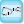 | Best Practicizer (BestPracticizer) Takes a selected group and inserts input and output params at both edges for any data that goes outside the group. |
| Get List Data (ListData) Gets data from the Value List, Item Selector, etc components | |
| Get Slider Properties (SliderInfo) Gets the properties of the slider | |
| Highlight Objects (Hilite) Highlight objects by adding them a new group | |
| Relative Path (RelPath) Appends the directory this definition is saved in to a file path. Auto-converts the contents of a text panel containing an absolute path | |
| Get Runtime Messages (Msgs) Gets errors and warnings from selected objects | |
| Set Object Value (SetObj) Tries to set the value of an object. What value it sets varies by type - it sets a slider's numeric value, a panel or scribble's text contents, etc | |
| SwapParamType (SwapParam) Switch the type of one param object to another | |
| Unwrap List (Unwrap) Converts a data wrapper into a list | |
| Wrap List (Wrap) Converts a list of data into a single object |
Mesh > Analysis
| Deconstruct Face (DeFace) Deconstruct a mesh face into its four corner indices. | |
| Deconstruct Mesh (DeMesh) Deconstruct a mesh into its component parts. | |
| Mesh Closest Point (MeshCP) Finds the closest point on a mesh | |
| Mesh Depth (MDepth) Validate the depth of a mesh. | |
| Mesh Edges (MEdges) Get all the edges of a mesh | |
| Mesh Eval (MEval) Evaluate a mesh at a given parameter | |
| Face Boundaries (FaceB) Convert all mesh faces to polylines | |
| Face Circles (FaceC) Solve the circumscribed circles for all mesh faces | |
| Face Normals (FaceN) Extract the normals and center points of all faces in a mesh | |
| Mesh Inclusion (MInc) Test a point for Mesh inclusion |
Transform > Affine
| Box Mapping (BoxMap) Transform geometry from one box into another. | |
| Camera Obscura (CO) Camera Obscura (point mirror) transformation. | |
| Orient Direction (Orient) Orient an object using directional constraints only. | |
| Project Along (ProjectA) Project an object onto a plane along a direction. | |
| Rectangle Mapping (RecMap) Transform geometry from one rectangle into another. | |
| Scale Scale an object uniformly in all directions. | |
| Scale NU Scale an object with non-uniform factors. | |
| Shear Angle (Shear) Shear an object based on tilt angles. | |
| Shear Shear an object based on a shearing vector. | |
| Triangle Mapping (TriMap) Transform geometry from one triangle into another. |
Curve > Division
| Dash Pattern (Dash) Convert a curve to a dash pattern. | |
| Shatter Shatter a curve into segments. | |
| Curve Frames (Frames) Generate a number of equally spaced curve frames. | |
| Horizontal Frames (HFrames) Generate a number of equally spaced, horizontally aligned curve frames. | |
| Perp Frames (PFrames) Generate a number of equally spaced, perpendicular frames along a curve. | |
| Divide Curve (Divide) Divide a curve into equal length segments | |
| Divide By Deviation (DivideDev) Divide a curve into segments with equal deviation | |
| Divide Distance (DivDist) Divide a curve with a preset distance between points | |
| Divide Length (DivLength) Divide a curve into segments with a preset length |
Kangaroo2 > Goals-Pt
| Anchor Anchor | |
| AnchorXYZ Fix a point only along chosen world axes. If you need to reset the initial position, disconnect then reconnect the Point input. | |
| Bomb (B) Causes an explosion after a given number of iterations | |
| 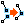 | Coincident (C) Equivalent to a zero length constraint between a pair of points |
| 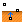 | Floor Floor |
| MagnetSnap (MS) Snap points together according to proximity | |
| PlasticAnchor PlasticAnchor | |
| Transform Keep a given transformation between 2 points | |
| Load Load |
Kangaroo2 > Goals-Lin
| ClampLength Keep length within given bounds | |
| ConstantTension (CT) An element which adapts its stiffness to maintain a constant force | |
| 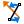 | Direction Align a line segment with a given vector, or if none supplied, the closest of the World XYZ vectors |
| DynamicWeight1d (DW) A load in the negative Z direction, which updates its magnitude according to the length of the line | |
| EqualLength EqualLength | |
| LengthRatio Maintain a fixed ratio between the lengths of a pair of lines | |
| LengthSnap Snap length to whole number multiples of a given number | |
| 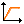 | PlasticLength (PL) This tries to preserve the length of the line elastically, until it is deformed beyond the limit, then its rest length gets changed |
| Length(Line) Length(Line) |
Maths > Trig
| CoSecant (Csc) Compute the co-secant (reciprocal of the Sine) of an angle. | |
| Degrees (Deg) Convert an angle specified in radians to degrees | |
| Radians (Rad) Convert an angle specified in degrees to radians | |
| Right Trigonometry (RTrig) Right triangle trigonometry | |
| Centroid Generate the triangle centroid from medians. | |
| Circumcentre (CCentre) Generate the triangle circumcentre from perpendicular bisectors. | |
| Incentre (ICentre) Generate the triangle incentre from angle bisectors. | |
| Orthocentre (OCentre) Generate the triangle orthocentre from altitudes. | |
| Triangle Trigonometry (Trig) Generic triangle trigonometry |
Transform > Euclidean
| Mirror Mirror an object. | |
| Move Translate (move) an object along a vector. | |
| Move Away From (MoveAway) Translate (move) an object away from another object. | |
| Move To Plane (MoveToPlane) Translate (move) an object onto a plane. | |
| Orient Orient an object. Orientation is sometimes called a 'ChangeBasis tranformation'. It allows for remapping of geometry from one axis-system to another. | |
| Rotate 3D (Rot3D) Rotate an object around a center point and an axis vector. | |
| Rotate Axis (RotAx) Rotate an object around an axis. | |
| Rotate Direction (Rotate) Rotate an object from one direction to another. | |
| Sanity XForm (MWHAHAHA!!) Apply a sanity transformation to f a r - a w a y, tiny or HUGE geometry |
Kangaroo2 > Goals-6dof
| AlignFaces Align faces of a pair of rigid bodies | |
| Beam Beam resisting bending and torsion | |
| Concentric Align axes of a pair of rigid bodies | |
| 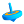 | RigidBody RigidBody |
| RigidPointSet A set of points which maintain their relative positions | |
| SolidCollide Collision between a pair of solids | |
| 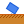 | SolidPlaneCollide Collision between a plane and a solid |
| Support Set support conditions for a beam end or rigid body |
Maths > Time
| Combine Date & Time (CDate) Combine a pure date and a pure time into a single date | |
| Construct Date (Date) Construct a date and time instance. | |
| Construct Exotic Date (DateEx) Construct a date using a specific calendar | |
| Construct Smooth Time (SmTime) Construct a time instance from smooth components | |
| Construct Time (Time) Construct a time instance | |
| Date Range (RDate) Create a range of successive dates or times | |
| Deconstruct Date (DDate) Deconstruct a date into years, months, days, hours, minutes and seconds | |
| Interpolate Date (IntDate) Interpolate between two dates or times. |
MetaHopper > Object Retrieval
| 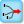 | Get Connected Objects (Connected) Gets all components and params connected to this component |
| 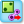 | Get Groups (Groups) Get all groups in the document |
| 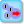 | Get Objects in Group (ObjFromGroup) Gets all components and params in the same group as this component (or the specified group if supplied) |
| 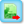 | Get Objects of Same Library (SameLib) Gets all components and params that are from the same library as the attached. |
| Get Objects of Same Type (SameType) Gets all components and params that are of the same type as the attached. | |
| Get Scribbles (Scribbles) Get all Scribbles in the document | |
| Get Selected Objects (SelObj) Get the objects currently selected on the canvas | |
| Get Object By Nickname (ObjByNN) Retrieves all objects matching the specified nickname. Wildcard patterns accepted. |
Mesh > Primitive
| Construct Mesh (ConMesh) Construct a mesh from vertices, faces and optional colours. | |
| Mesh Colours (MCol) Assign a repeating colour pattern to a mesh object. | |
| Mesh Spray (MSpray) Assign colours to a mesh based on spray points. | |
| Mesh Plane (MPlane) Create a mesh plane. | |
| Mesh Sphere (MSphere) Create a mesh sphere. | |
| Mesh Sphere Ex (MSphereEx) Create a mesh sphere from square patches. | |
| Mesh Quad (Quad) Create a mesh quad. | |
| Mesh Triangle (Triangle) Create a mesh triangle. |
Vector > Grid
| Hexagonal (HexGrid) 2D grid with hexagonal cells | |
| Populate Geometry (PopGeo) Populate generic geometry with points | |
| Freeform Cloud (FFCloud) Distribution of points on any object | |
| Populate 2D (Pop2D) Populate a 2-Dimensional region with points | |
| Spherical Cloud (SphCloud) Distribution of points on a sphere | |
| Radial (RadGrid) 2D radial grid | |
| Rectangular (RecGrid) 2D grid with rectangular cells | |
| Triangular (TriGrid) 2D grid with triangular cells |
Params > Input
| Atom Data (Atom) Get detailed information for an atom | |
| Import Image (IMG) Import image data from bmp, jpg or png files. | |
| Import PDB (PDB) Import data from Protein Data Bank *.pdb files. | |
| Import Coordinates (Coords) Import point coordinates from generic text files. | |
| Object Details (ObjDet) Retrieve some details about referenced Rhino objects. | |
| Import 3DM (3DM) Import geometry from Rhino 3dm files. | |
| Import SHP (SHP) Import data from GIS *.shp files. |
Kangaroo2 > Goals-Col
| Collide2d (C2d) Collisions between closed polygons in a given plane | |
| Collider Collisions between thickened line segments and spheres | |
| CurvePointCollide (CPC) Keep a set of points outside or inside a given 2d curve | |
| CurveCollide (CC) Collisions between closed curves in a given plane | |
| ImageCircles (ImgCircles) Circle packing with sizes from image colours | |
| SolidPointCollide (SPC) Keep a set of points outside or inside a given Mesh | |
| SphereCollide (SC) Collisions between large numbers of equal sized spheres |
Kangaroo2 > Main
| Show Show | |
| Grab This lets you drag particles in Rhino. Hold Alt key and drag with LMB, or toggle anchors with LMB+RMB | |
| BouncySolver Solver with momentum | |
| Solver The main component where Goals are combined and applied | |
| Soft & Hard Solver (Soft&HardSolver) Solver with separate inputs for soft goals, and hard constraint type goals | |
| 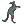 | ZombieSolver A version of the solver component which keeps all iterations internal, and outputs the final result |
| StepSolver Solver which advances only when input refreshed. Useful for making animations |
Scalar > Trig
| ArcCosine (ACos) Compute the angle whose cosine is the specified number. | |
| ArcSine (ASin) Compute the angle whose sine is the specified number. | |
| ArcTangent (ATan) Compute the angle whose tangent is the specified number. | |
| Cosine (Cos) Compute the cosine of an angle. | |
| Sine (Sin) Compute the sine of an angle. | |
| Sinc Compute the sinc (Sinus Cardinalis) of an angle. | |
| Tangent (Tan) Compute the tangent of an angle. |
Intersect > Region
| Split with Brep (Split) Split a curve with a Brep. | |
| Split with Breps (Split) Split a curve with multiple Breps. | |
| Trim with Brep (Trim) Trim a curve with a Brep. | |
| Trim with Breps (Trim) Trim a curve with multiple Breps. | |
| Trim with Regions (Trim) Trim a curve with multiple regions. | |
| Trim with Region (Trim) Trim a curve with a region. |
Display > Preview
| Symbol (Advanced) (SymAdv) Advanced symbol display properties | |
| Symbol (Simple) (SymSim) Simple symbol display properties | |
| Symbol Display (Symbol) Display symbols | |
| Create Material (Material) Create an OpenGL material. | |
| Cloud Display (Cloud) Draw a collection of points as a fuzzy cloud | |
| Dot Display (Dots) Draw a collection of coloured dots |
Kangaroo2 > Goals-Angle
| Angle Angle | |
| AngleSnap (AS) Snap the angle between 2 lines to the closest whole number multiple of a given value | |
| ClampAngle Keep an angle between 2 lines within a given range | |
| EqualAngle (EA) Equalize angles between multiple pairs of lines | |
| G2 Maintain curvature continuity between 2 nurbs curves | |
| Rod Bending and stretching resistant rod |
Kangaroo2 > Utility
| DotDisplay (Dot) Show points as round dots | |
| interconnectPoints (inter) Draws one line between every pair of points in a list | |
| Möbius Transformation (MB) 3d Möbius Transformations of any geometry using 4d rotation | |
| removeDuplicateLines (dupLn) Removes similar lines from a list. | |
| removeDuplicatePts (dupPt) Removes similar points from a list | |
| 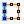 | SplitAtCorners Break a polyline into multiple parts based on angle |
Maths > Matrix
| Construct Matrix (Matrix) Construct a matrix from initial values | |
| Deconstruct Matrix (DeMatrix) Deconstruct a matrix into its component parts | |
| Invert Matrix (MInvert) Invert a matrix | |
| Swap Columns (SwapC) Swap two columns in a matrix | |
| Swap Rows (SwapR) Swap two rows in a matrix | |
| Transpose Matrix (Transpose) Transpose a matrix (swap rows and columns) |
Scalar > Polynomials
| Power of 10 (10º) Raise 10 to the power of N. | |
| Power of 2 (2º) Raise 2 to the power of N. | |
| Power of E (Eº) Raise e to the power of N. | |
| Logarithm (Log) Compute the Base-10 logarithm of a number. | |
| Power (Pow) Raise a number to a power. |
Transform > Array
| Curve Array (ArrCurve) Create an array of geometry along a curve. | |
| Linear Array (ArrLinear) Create a linear array of geometry. | |
| Polar Array (ArrPolar) Create a polar array of geometry. | |
| Rectangular Array (ArrRec) Create a rectangular array of geometry. | |
| Kaleidoscope (KScope) Apply a kaleidoscope transformation to an object. |
Display > Vector
| Point List (Points) Displays details about lists of points | |
| Point Order (Order) Displays the order of a list of points | |
| Vector Display (VDis) Preview vectors in the viewport | |
| Vector Display Ex (VDisEx) Preview vectors in the viewport |
Kangaroo2 > Goals-Co
| CoCircular CoCircular | |
| CoLinear CoLinear | |
| 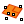 | CoPlanar CoPlanar |
| CoSpherical CoSpherical |
Maths > Polynomials
| Log N (LogN) Return the N-base logarithm of a number. | |
| Cube Compute the cube of a value | |
| Cube Root (Cbrt) Compute the cube root of a value | |
| One Over X (1/x) Compute one over x. |
MetaHopper > Batch
| Batch Animator (BAnim) Saves a screenshot of every state of the model in the batch to a folder. | |
| BatchDriver Run a batch analysis across a range of variable parameters | |
| Batch Variable from List (BVarList) Converts a list of values such as a series or range into a variable input to the Batch Driver | |
| BatchSlider (BSlider) Converts a standard GH Slider into a variable input to the Batch Driver |
Metahopper > Utility
| Expire Object (Expire) Expire / recompute a component or param | |
| Get Param Data (ParamData) Get the set of data in a given param | |
| Instantiate Object (Create) Attempts to create an instance of an object on the canvas | |
| 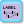 | Label Groups (LblGrp) Auto-create a scribble in the upper left corner of a group that matches the group's name |
Human > TreeFrog
| AssignPaths (Assign Paths) Assigns an arbitrary path structure to a flat list of input data | |
| Graft By Data (GraftByData) Adds an additional level of path hierarchy according to the specified indices | |
| MatchPaths (Match Paths) Sets a flat list of data to correspond to the tree structure of an input tree | |
| PathDescription (pd) Produces a single path description for each item in a tree, in the same structure as the original tree. |
Params > Util
| Fitness Landscape (LScape) Display a 2.5D fitness landscape | |
| Data Input (Input) Read a bunch of data from a file. | |
| Data Output (Output) Write a bunch of data to a file. |
Kangaroo2 > Goals-On
| 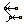 | OnCurve Keep a point on a given Curve |
| 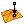 | OnMesh Keep a point on a given Mesh |
| OnPlane Keep a point on a given plane |
Scalar > Util
| Mean Solves statistical means and averages for a set of numbers | |
| Maximum (Max) Find the larger of two numbers. | |
| Minimum (Min) Find the lower of two numbers |
Complex > Trig
| Cosecant (Cosec) Compute the co-secant of a complex angle. | |
| CoTangent (Cotan) Compute the co-tangent of a complex angle. | |
| Secant (Sec) Compute the secant of a complex angle. |
Scalar > Operators
| Division (Div) Divide two numbers. | |
| Modulus (Mod) Divide two numbers and return only the remainder. | |
| Multiplication (Mult) Multiply two numbers. |
Complex > Polynomials
| Exponential (Exp) Compute the exponential of a complex number. | |
| Square (Sqr) Compute the square of a complex number. | |
| Square Root (Sqrt) Compute the square-root of a complex number. |
MetaHopper > Document
| Assembly Info Gets information about an assembly | |
| Document Info (DocInfo) Get information about the GH document and its components | |
| Object Info Gets basic information from any DocumentObject |
Transform > Util
| Compound (Comp) Compound two transformations. | |
| Inverse Transform (Inverse) Invert a transformation. | |
| Split Split a compound transformation into fragments. |
Vector > Colour
| Blend Colours (BlendCol) Interpolate (blend) between two colours. | |
| Subtraction (Sub) Perform colour subtraction. |
Maths > Boolean
| Gate And Ternary (And) Perform ternary boolean conjunction (AND gate). | |
| Gate Or Ternary (Or) Perform ternary boolean disjunction (Or gate). |
Metahopper > Attributes
| Set Panel Properties (SetPanel) Modify the properties of a panel object | |
| Set Slider Properties (Set Slider) Modify the properties of a slider object |
Display > Test
| Test Crash Test crashing of GH |
Display > Viewport
| Viewport Display Display viewport on canvas |
Kangaroo2 > Goals
| Length(Pts) Length(Pts) |
Complex > Operators
| Addition (Add) Add two complex numbers. |
Surface
| Voronoi 3d (Voronoi3d) Voronoi 3d Algorithm |
Library
| BioBrick Categories of Parts (BB Categories) Provides a list of part categories for inputinto the BB Library | |
| BioBrick Prefix and Suffix Adder (Pre~Suf) Contains a cluster of Grasshopper components | |
| BioBricks Library (BB Library) library of all the parts in the BioBricks registry. | |
| BioBricks Prefix Standard (BB Pre) simply the sequence of the standard BioBricks prefix used to enable ligation with compatible sticky ends | |
| BioBricks Prefix ATG (BB Pre ATG) simply the sequence of the standard BioBricks prefix used, with sequences starting with ATG, to enable ligation with compatible sticky ends | |
| BioBricks Suffix (BB Suf) simply the sequence of the standard BioBricks suffix used to enable ligation with compatible sticky ends | |
| E0240 GFP with RBS, and Terminator (GFP RET) RBS: B0032 + GFP Reporter: E0040 + Terminators: B0010 & B0012 | |
| GFP with Promoter, RBS, and Terminator (GFP PRET) Tet Promotor R0040 + RBS: B0034 + GFP Reporter: E0040 + Terminators: B0010 & B0012 | |
| Plasmid Backbones DNA (Backbones) Provides the DNA for teh 4 commonly use BioBrick backbones. | |
| Plasmid Insert (Insert) Insert a gene into a plasmid backbone, optionall add in the BB prefix and suffix. Index reamins at beginning of gene; the prefix is at the end of the sequence. | |
| Promoter DNA (Promoters) Provides a list of the 10 most commomnly used BioBrick promoters, and outputs the DNA of the selected part. | |
| Protein Coding DNA (Coding) Provides a list of the 10 most commomnly used BioBrick protein codeing sequences, and outputs the DNA of the selected part. | |
| Resistance to Chloramphenicol (CamR) DNA sequence to produce Chloramphenicol resistance | |
| Resistance to Kanamycine (KanR) DNA sequence to produce Kanamycine resistance | |
| Resistance to Tetracycline (TetR) DNA sequence to produce Tetracycline resistance. On BioBrick plasmid backbone pSB1T3 this gene is on the primary strand. | |
| Resitance to Amp (AmpR) DNA sequence to produce Ampicillin resistance | |
| RFP with RBS, and Terminator (RFP RET) RBS: B0034 + RFP Reporter: E1010 + Terminators: B0010 & B0012 | |
| Ribosome Binding Site DNA (RBS) Provides a list of the 10 most commomnly used BioBrick RBS, and outputs the DNA of the selected part. | |
| Teminator DNA (Terminators) Provides a list of the 10 most commomnly used BioBrick terminators, and outputs the DNA of the selected part. | |
| YFP with RBS, and Terminator (YFP RET) RBS: B0034 + YFP Reporter: E0030 + Terminators: B0010 & B0012 |
Utilities
| Complementary Strand (Comp) creates a complementary strand based in the input sequence | |
| DNA Clean gets rid of anything that is not a, A,T,G, or C and capitalizes all characters | |
| DNA Find (Find) Finds a sequence within a sequence and return the domain of its location. | |
| Primer Design (Primer Des) to find a primer with good melt temp and GC content and avoiding bad hairpins | |
| Random DNA (Ran DNA) create a ramndom string of GTAC | |
| Reverse DNA (Rev) reverses the sequence of DNA | |
| Reverse Subdomain (Rev Sub) reverses the position and direction of a subdomain |
Transcription/Translation
| E. coli Optimization (E.coli Opt) create an optimized RNA sequence for E coli to produce the input AA chain. | |
| Simple Transcription (Tx) simple conversion DNA to RNA changing T to U | |
| Simple Translation (Tl) converts RNA into Amino Acids | |
| Transcription Promoter to Terminator (Transcription) Transcribes DNA to RNA starting just after the promoter site and ending just prior to the termitator site | |
| Transcription σ Converts DNA to RNA based on -35 and -10 sites | |
| Translation Translates RNA to amino acid chain with options for finding the proper reading frame |
Visualize
| Amino Acid Visualizer (AA Viz) Creates and displays an offset complementary strand | |
| DNA Subdomain Visualizer (DNA Sub Viz) Visualizes the specified subdomain of a strand | |
| DNA Complementary Strand Visualizer (DNA Comp Viz) Creates and displays an offset complementary strand | |
| DNA Complementary Subdomain Visualizer (DNA Comp Sub Viz) Visualizes the specified subdomain of a created offset complementary strand | |
| DNA Visualizer (DNA Viz) Visualizes the DNA in the Rhino viewport |
Protein
| PDB Sort (PDB Sort) sort protein data base file | |
| PDB Open make the pdb info accessible | |
| PDB Plot create a visual energy plot of a pdb file | |
| Protein Query Search the RCSB Protein DataBase for matching Amino Acis sequences and the address of a corresponding .pdb file. | |
| Protein Ribbon visualizes the structure of a protein |
Ligate
| A Simple Ligation (Lig) Concatenates two DNA sequences | |
| Ligate Ligate tests to see if 2 strands have matching sticky ends. Is sothey are joined together. If both ends connect, plasmid is set to true. | |
| Sticky Ends (Sticky) identifies the overhanging ends of DNA. |
Digest
| Enzyme List (Enzymes) A list of enzymes to choose from that passes the proper index for the Restriction Enzymes output object | |
| Restriction Enzyme Digest (Digest) Cuts up DNA based on target sits of the input restriction enzyme and outputs double stranded DNA with sticky ends. | |
| Restriction Enzymes Cut Locations (Restrict. Enzymes) outputs the cut locations of any major restriction enzyme. use the Enzymes List to choose the enzyme you want or enter the index if you know it already |
Animation
| Apply Camera (SC) Set animation camera in active viewport | |
| Bake Material (BM) Bake the render material to the current rhino document | |
| Camera (C) Define cameras for animation | |
| Custom Material (CM) Define custom materials for animation. | |
| Default Material (DM) Define default materials for animation. | |
| Material From Rhino (MfR) Get the material from the current rhino document | |
| Save Frames (SF) Save frames captruing rhino viewport. |
Image
| Add Layer (Layer) Set layer image and properties Built on the Dynamic Image Library https://dynamicimage.apphb.com/ | |
| Apply Filters (Apply) Apply filters to the image's bitmap Built on the Accord Imaging Library http://accord-framework.net/ | |
| Build Image (Build) Build a fixed width and height bitmap from per pixel ARGB color values | |
| Composite Images (Composite) Quick composite two images with a mask and blend mode Built on the Dynamic Image Library https://dynamicimage.apphb.com/ | |
| Filter Adjust (Adjust) Apply bitmap adjustment filters to an image | |
| Filter Difference (Difference) Compare the difference between two images | |
| 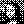 | Filter Dithering (Dithering) Apply dither filters to an image |
| 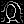 | Filter Edges (Edges) Apply edge detection filters to an image |
| 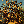 | Filter Effects (Effects) Apply various effect filters to an image |
| Extract Channel (Extract) Extract a channel filters to an image Built on the Accord Imaging Library http://accord-framework.net/ | |
| Filter Figures (Figures) Identify or modify figure based filters to an image | |
| Filter Grayscale (Grayscale) Apply grayscale filters to an image | |
| Filter Sharpen (Sharpen) Apply sharpen filters to an image | |
| Filter Threshold (Threshold) Apply threshold detection filters to an image | |
| Fractal (Apply a fractal modifier to an Aviary Cellular or Noise system
Built on Auburns' FastNoise
https://github.com/Auburns/FastNoise) Description | |
| Bitmap Corners (Corners) Get blob corner points from a bitmap Built on the Accord Imaging Library http://accord-framework.net/ | |
| Bitmap Shapes (Shapes) Get shapes from bitmap Built on the Accord Imaging Library http://accord-framework.net/ | |
| Image Properties (Properties) Get the overall bitmap dimensions | |
| Image To Bitmap (To Bmp) Convert an Image to a Bitmap object Built on the Accord Imaging Library http://accord-framework.net/ | |
| Image Value At (Value At) Get a requested value at a specific pixel location Built on the Accord Imaging Library http://accord-framework.net/ | |
| Image Values (Values) Get a value type for each pixel Built on the Accord Imaging Library http://accord-framework.net/ | |
| Image Viewer (Image) Display an Aviary Image or Bitmap in the canvas | |
| Load Image (Bmp) Create an Image from a filepath to a bitmap. | |
| Merge Layers (Merge) Build multiple layers into an Aviary Image Built on the Dynamic Image Library https://dynamicimage.apphb.com/ | |
| Mirror Image (Mirror) Mirror an image about x and y axis Built on the Accord Imaging Library http://accord-framework.net/ | |
| Modify Layer (Modify) Modify Layer filters Built on the Dynamic Image Library https://dynamicimage.apphb.com/ | |
| 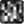 | Noise Generate a proceedural noise bitmap Built on Auburns' FastNoise https://github.com/Auburns/FastNoise |
| Polar Image (Polar) Apply a polar transformation to an image Built on the Accord Imaging Library http://accord-framework.net/ | |
| Resize Image (Resize) Resize an image to a specific width and height Built on the Accord Imaging Library http://accord-framework.net/ | |
| Rotate Image (Rotate) Rotate an image about its center Built on the Accord Imaging Library http://accord-framework.net/ | |
| Scale Image (Scale) Scale an image by a unit factor Built on the Accord Imaging Library http://accord-framework.net/ | |
| Shrink Image (Shrink) Shrink and image by cropping out a context color Built on the Accord Imaging Library http://accord-framework.net/ | |
| Swap Channel (Swap) Swap one channel for another Built on the Accord Imaging Library http://accord-framework.net/ | |
| Swap Channels (Swap*) Swap out channels for multiple existing channels Built on the Accord Imaging Library http://accord-framework.net/ | |
| Trace Image (Trace) --- |
Drawing
| Brep To Shape (BrepShp) Convert a brep's naked edges to a compound shape | |
| Compose Drawing (Drawing) Compose a Drawing from curves and graphics | |
| Curve To Shape (CrvShp) Convert a curve to a shape | |
| Drawing to Bitmap (Draw To Bitmap) Viewer for an Aviary drawing | |
| Export Bitmap (Bitmap) Save a Aviary Drawing to a bitmap file | |
| Export SVG (SVG) Save a Aviary Drawing to a SVG file | |
| View Drawing (Draw) Viewer for an Aviary drawing | |
| Mesh To Shape (MeshShp) Convert a mesh to a compound shape | |
| Point To Shape (PtShp) Convert a point to a circular Shape |
Graphics
| Blur Effect (Blur) Add a blur effect | |
| Shadow Effect (Shadow) Add a drop shadow effect | |
| Linear Gradient Fill (Linear) Add a linear gradient fill | |
| Solid Fill (Solid) Add a solid color fill | |
| 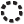 | Stroke Set Stroke Properties |
Curve
| Align Curve Start/End (AlignCrvS/E) Align curve on a line based on its start/end points. | |
| Assemble Curves (AsmblCrvS/E) Assemble curves based on their start/end points. | |
| Classify Curves (ClCrvS/E) Classify curves based on their start/end points. | |
| Curve To Line Start/End (Crv2LnS/E) Convert curves to lines, based on their start/end points. | |
| Divide Curves on Intersects (DivCCX) Divide curves on all of their intersects. | |
| Star Lines (StarLn) Create an simple star and give its lines. |
Wii
| WiiIn (Wii>>) Read data from wii controller | |
| WiiOut (Wii<<) Send data to wii controller | |
| Wii Start (Wii*) Connect to available wii controllers... |
WebSocket
| Websocket Client Receiver (WS>>) Read data from websocket | |
| Websocket Client Sender (WS<<) Send data to websocket server | |
| Websocket Client Start (WS*) Connect to websocket server... |
HTTP
| Http Input (HttpIn) Start create an http server, listening to an address. | |
| Http Output (HttpOut) Send response to client using and close connection. |
Polyline
| BB Boolean (BBBool) Boolean operation between two sets of planar closed polylines | |
| BB Difference (BBDiff) Difference of a set of planar closed polylines | |
| BB Intersection (BBInt) Intersection of a set of planar closed polylines | |
| BB Offset (BBOffset) Offset a polyline with a specified distance | |
| BB Union (BBUnion) Union of a set of planar closed polylines | |
| BB XOR (BBXor) XOR of a set of planar closed polylines |
Crafting
| BB Section (BBSection) Create a section model from a mesh |
Text
| BB Text (BBText) Create a single line text |
Geometries
| Box2DCircle (Box2DCir) Generate Box2D Circle from Grasshopper Circle | |
| Box2DPolygon (Box2DP) Generate Box2D Polygon from Grasshopper Closed Polyline | |
| Box2DRectangle (Box2DRec) Generate Box2D Rectangle from Grasshopper Rectangle |
Utility
| Convex (Conv) Test if a polygon is convex. | |
| Convex Decompose (CD) Decompose concave polygon into several smaller convex polygon. Based on Convex decomposition algorithm created by Mark Bayazit (http://mnbayazit.com/) |
Util
| Carve Perform boolean operations on two meshes using the Carve library. |
Cocoon
| Brep Charge Metaball charge from Brep | |
| Cocoon Wrap geometry with marching cubes | |
| Curve Charge Metaball charge from curve | |
| 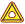 | Curve Group Charge (Group Charge) Metaball charge for group of curves |
| Point Charge Metaball point charge | |
| Refine Refine the output from cocoon |
Constraints
| Anchor Anchor constraints of between selected vertices and input points. Numbers of both list must be equal. | |
| AnchorToGround Anchor to ground constraint of selected vertices | |
| Developable Add Developability | |
| EqualLength Equal length constraint between selected edges. You can also set length of selected edges | |
| FlatFoldable Add FlatFoldability | |
| GlueVertices (GlueVerts) Glue selected vertices | |
| OnCurve OnCurveConstraint | |
| OnPlane On plane constraint of selected vertices | |
| OnSurface On surface constraint of selected vertices | |
| SetFoldAngles Equal fold angle constraint between selected edges. You can also set fold angle of selected edges |
FabTools
| AddTabs Add tabs on debeloped mesh. | |
| Cutting Line (Cut) Draw cutting lines according to panel thickness and each folding angle. | |
| Double Hinge Create double hinged solids. | |
| Finger Joint Cutting Lines (Finger Joint) Draw finger joint cutting lines. | |
| Panels with Thickness (Thick Panels) Construct thick panels from a Mesh and its developed panel's polylines | |
| Single Hinge Create single hinged solids according to panel thickness and each folding angle.. | |
| Tapered Solid with Thin Layer Hinge (Tapered Solid) Create tapered solids with thin layer hinge | |
| V-Cutting Lines (V-Cut) Draw V-cutting lines which allow folding until 90 degrees. |
Previews
| DeconstructCMesh Deconstruct CMesh into Mesh and information | |
| EdgeCentor EdgeCentor | |
| Preview Edge IDs Preview edge ids for CMesh | |
| Preview Tapered Panels Preview tapered panels with thickness. | |
| Preview Vertex IDs Preview vertex ids for CMesh | |
| PreviewCMesh Preview CMesh | |
| PreviewPanelsSelective (PrevPanSel) Preview panels with selective directions. |
Inputs
| CMesh_MVlines (CMeshMVlines) Description | |
| CMesh_MVTlines (CMeshMVTlines) Description | |
| CMesh Generate CMesh from mesh | |
| PaperMesh Generate flat mesh from scanned img | |
| CMesh from Lines Create CMesh from boundary, mountain, and valley lines. (This component needs Weaver Bird's Mesh From Lines) |
Tessellations
| Chickenwire Pattern (Chickenwire) Generate Chickenwire pattern | |
| Eggbox Pattern (Eggbox) Generate Eggbox pattern | |
| Miuraori Pattern (Miuraori) Generate Miuraori pattern | |
| Yoshimura Pattern (Yoshimura) Generate Yoshimura pattern |
Util
| Auto Assign Mountain or Valley (Auto MV) Assign mountain or valley according to each folding angle sign | |
| Develop Mesh Develop input mesh. | |
| Folding Angles (Fold Angle) Get foding angles. |
Subcategory
| CMesh_EdgeInfo (Nickname) Description |
Solver
| CraneSolver Solver for simulation and design |
03 | Behaviors
| Controller (BC) Behavior Merging Controller, you can add/remove/rearrange behaviors. The input order will be the behavior execution stack | |
| Flocking (FL) Flocking Algorithm | |
| Flocking Mapped (FM) Flocking Algorithm with image color sampling override for any flocking attributes and remaping of color values | |
| Mesh Crawl II (MC) Mesh Crawling allows agent to move along a mesh object and is capable of spawning children | |
| Mesh Crawl (MC) Mesh Crawling allows agent to move along a mesh object | |
| Noise (N) 2D/3D Improved Perlin Noise | |
| Noise Mapped (NM) 2D Improved Perlin Noise with image color sampling override for any behavior attribute | |
| Separation (SB) Separation Behavior II - avoids crowding neighbors (short range repulsion) | |
| Stigmergy (ST) 2D/3D Trail Chasing Algorithm - Agents will chase agents trails | |
| Weaving Wandering (SW) Expanded 2D Wandering Algorithm using step triggers to create a weaving type movement 2D Wandering Algorithm, Wandering is a type of random steering which has some long term order | |
| Multi Path Tracking II (TT) MultiShape Path Following Algorithm capable of spawning children - see example files | |
| Multi Path Tracking (T) Multi Path Following Algorithm | |
| Multi Path Tracking II Mapped (TT) MultiShape Path Following Algorithm capable of spawning children with image color sampling override for any path attributes and remaping of color values - see example files | |
| Wandering (WA) 2D Wandering Algorithm, Wandering is a type of random steering which has some long term order. Force Values from Move Settings have a strong effect on behavior | |
| Wandering Mapped (WM) 2D Wandering Algorithm with image color sampling override for any wandering attributes and remaping of color values, Wandering is a type of random steering which has some long term order |
06 | Display
| Disco_Color (DC) Controls the Disco Color trail options for the Visual Settings Component | |
| Gradient_Color (GC) Controls the Gradient Color trail options for the Visual Settings Component | |
| Graphic_Polyline (GP) Controls the Graphic Polyline Color trail options for the Visual Settings Component | |
| Trail Data (TD) Controls the Trail Data for the Visual Settings Component | |
| Visual Settings (VS) Controls the visual settings for the Creeper Engine Outputs |
04 | Forces
| Attraction Force (AF) Attracts a object towards a set of targets. Differs from Seek | |
| Bundling (B) Settings for Self Organization of Curve Networks | |
| Bundling II (BM) Settings for Self Organization of Curve Networks with image color sampling override for bundling attributes and remaping of color values | |
| Repulsion Force (RF) Repels a object away from a set of targets |
05 | Engine
| Bundling_Engine (Nickname) Engine for Self Organization of Curve Networks | |
| Creeper_Engine_Dual (CED) Culebra Multi Object Engine | |
| Creeper_Engine (CE) Culebra Objects Engine | |
| Creeper_ZombieEngine (CZE) Culebra Object Zombie Engine |
02 | Initialize
| Move Settings (MS) Sends the move settings to the Creeper Engine. | |
| Init Settings (IS) Sends the init settings to the Creeper Engine. |
01 | Spawn Types
| Box Spawn (BS) Uses a box to contain the creepers spawn area in 2D or 3D | |
| Point Spawn (PS) Uses a list of points as starting positions for the creepers in 2D or 3D |
Materials
| Apply indicators (Indicators) Apply indicators | |
| Construction Construction | |
| Gas material (Gas) Gas material for glazing constructions | |
| Glazing Material Glazing Material | |
| Layer Creates a construction layer | |
| Library Launches the library editor | |
| Opaque Material Opaque Material | |
| Simple Window Simple Window | |
| Thermal Bridge (Bridge) Generates an equivalent construction based on the primary costruction provided |
Thermal Model
| Boundary condition object (Bc) Creates a boundary condition object that can be used to attach special boundary conditions to the thermal model | |
| Building (Bldg) Automatically translates Breps describing a building into a thermal model | |
| Face Creates a Thermal Zone Face | |
| Zone Connectivity Network (Networker) Creates a connectivity network between thermal zones | |
| Simulation Engine (Run E+) Takes thermal model and runs Energy Plus | |
| Shading Surface (Shading) Creates a Shading Surface | |
| Window Creates a thermal zone window | |
| Thermal Zone (Zone) Creates a Thermal Zone |
Settings
| Zone domestic hot water (Zone DHW) Zone domestic hot water | |
| Floor settings Floor settings | |
| Window settings Window settings | |
| Zone conditioning Zone conditioning | |
| Zone constructions Zone constructions | |
| Zone loads Zone loads | |
| Zone settings Zone settings | |
| Zone ventilation Zone ventilation |
Analysis
| IntegrateIndicators IntegrateIndicators | |
| Load result file (Results) Load result file and filter columns by tags | |
| Load Zone Results Load Zone Results | |
| SurfaceAnalysis SurfaceAnalysis | |
| UTCI Universal Thermal Climate Index, http://www.utci.org/ | |
| Weather Weather | |
| XYPlot Creates 2D plots |
Geometry
| Daylight Model (Daylight) Convert opaque thermal model geometry to daylight model geometry | |
| Floor cutter Floor cutter | |
| GeometryFilter GeometryFilter | |
| AS_GetObjNameLayer AS_GetObjNameLayer | |
| FromRhinoDoc (FromRhDoc) Load from Rhino Doc | |
| Intersector Intersect Breps with each other |
Schedules
| Array Schedule (Schedule) Creates schedules based on number arrays | |
| Day Schedule Day Schedule | |
| Week Schedule Week Schedule | |
| Year Schedule Year Schedule |
PV
| Takes surfaces, generates PV panels (PV) Takes surfaces, generates PV simulation IDF | |
| Runs a PV simulation (PV) Runs a PV simulation |
Data
| Image Viewer Displays an image file | |
| Hour Of Year (HOY) Gets hour of year and day of year from month/day/hour inputs |
Sun
| Solar Envelope (Envelope) Creates a buildable envelope for a given boundary curve based on the latitude and time of solar access for an entire year | |
| Solar Fan (Fan) Creates a no-obstruction envelope which ensures solar access for sites like parks, landscaping, etc... |
.Simulation
| BatchRunner (Batch) Creates and launches a multi-run batch file |
Doodlebug
| Bring Layer To Front (BringToFront) Bring Layer to Front | |
| Close Document (CloseDoc) Close a specified document | |
| Create Text on Layer (CreateText) Use this component to create text items on a layer. Specify points for point text, or a rectangle for area text. | |
| Curves To Paths (CrvsToPaths) Convert Rhino Curves to bezier curve paths in Illustrator | |
| Curve To Path (CrvToPath) Convert a Rhino Curve to a bezier curve path in Illustrator | |
| Document Bounds (DocBounds) Get the rectangle representing the document bounds | |
| Documents (Docs) Get Open Illustrator Documents | |
| Export Document (Export) Export a document to a specified location | |
| Layer By Name (LayByName) Get a layer from a document by name | |
| Get Paths on Layer (LayPaths) Gets the Path items on a layer | |
| Layers Get/Create Document Layers | |
| New Document (NewDoc) Create a new Illustrator Document | |
| Open File (OpenFile) Open an Illustrator Document | |
| Open Illustrator (Illustrator) Opens Illustrator and retrieves the running app. | |
| Path Geometry (PathGeom) Get the curve / polyline geometry of the path items | |
| Run Script (Script) Run script (written in javascript) in Illustrator | |
| Scale Transforms (ScaleXForms) Map to and from Illustrator document scale. All Doodlebug components take / output points, so this lets you smartly map to and from other units. | |
| Send Layer To Back (SendToBack) Send a layer to back of the document | |
| Set Layer Properties (SetLay) Sets the opacity and blend mode of a layer | |
| Set Layer Order (LayOrder) Set the desired layer order for a document | |
| Set Path Properties (SetPathProp) Set the display properties of Paths |
Surface
| Sort Surface Area Sorting a list of surfaces according to the surface area | |
| Sort Surface UV Sorting a list of surfaces according to the distance from the reference point to the point on the surfaces by assigning UV parameters | |
| Sort Surface X Sorting a list of surfaces according to the X coordinate sequences of the center points | |
| Sort Surface Y Sorting a list of surfaces according to the Y coordinate sequences of the center points | |
| Sort Surface Z Sorting a list of surfaces according to the Z coordinate sequences of the center points | |
| Sort Surfaces Point Sorting a list of surfaces according to the distance to the reference point | |
| SSUV (SortSurfaceUV) Sorting a list of sub-surfaces in a correct order by UV srf: the original untrimmed surface srfs : the messed up sub-surfaces waiting to be sorted u: number of branches( int required) v: number of items in one branch( int required) |
Brep
| Sort Brep X Sorting a list of Breps according to the X coordinate of the center points | |
| Sort Breps Point Sorting a list of breps according to the distance from the reference point to the center points of the closed brpes | |
| Sort Breps Volume Sorting a list of breps according to the volumes | |
| Sort Breps Y Sorting a list of Breps according to the Y coordinate of the center points | |
| Sort Breps Z Sorting a list of Breps according to the Z coordinate of the center points |
Curve
| Sort Curves Length Sorting a list of curves according to the length | |
| Sort Curves Point Sorting a list of curves according to the distance from the reference point to the evaluated point | |
| Sort Curves X Sorting a list of curves according to the X coordinates of the evaluated points. | |
| Sort Curves Y Sorting a list curves according to the Y coordinates of the evaluated points | |
| Sort Curves Z Sorting a list curves according to the Z coordinates of the evaluated point |
Mesh
| Sort Mesh Area Sorting a list of meshes according to the area | |
| Sort Mesh Point Sorting a list of meshes according to the distance from the reference point to the center points of the meshes. | |
| Sort Mesh X Sorting a list of meshes according to the X coordinate of the center points | |
| Sort Mesh Y Sorting a list of meshes according to the Y coordinate of the center points | |
| Sort Mesh Z Sorting a list of meshes according to the Z coordinate of the center points |
Point
| Sort Points X Sorting a list of points according to the X coordinate of the poins | |
| Sort Points Y Sorting a list of points according to the Y coordinate of the points | |
| Sort Points Z Sorting a list of points according to the Z coordinate of the points | |
| SortPointsPoint Sorting a list of points according to the distance from the reference point |
EdiTree
| Divide List Divide a list into sub-lists by the predefined number (divisor). | |
| Partition List Adv (Partition) Partition a list into sub-lists by partition size | |
| Split List Multi (Split Multi) Split a list into separate parts at a specified index number. Similar to the existing Split List Component, each index indicates the first item in each list. | |
| SubTree Retrieve a specific branch / sub-branches from a data tree. |
Elk2
| Highways (HWY) Get highway paths from the OSM file. | |
| 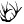 | Location (Loc) OpenStreetMap and Topograhy |
| OSM Data (OSM) Get Point and Tag data from an OSM file. | |
| Topography (Topo) Generate Topography surfaces from USGS IMG Raster files or from SRTM HGT files. |
Bake
| Advanced Bake (AdvancedBake) Advanced Bake allows to bake all kinds of geometry Objects with attributes (see BakeAttributes and PlotAttributes by blickfeld7 | |
| BakeArrows (BakeArrow) Add arrowheads as bake attributes to curves. This only works with Advanced Bake (by blickfeld7.com) Version 0.92 | |
| Layer Attributes (LayerAttributes) Layer attributes (by blickfeld7.com) Version 0.92 | |
| Object Attributes for Bake (BakeAttributes) Bake attributes for Advanced Bake (by blickfeld7.com) Version 0.92 | |
| Object Attributes for Plot (PlotAttributes) Bake attributes for Advanced Bake (by blickfeld7.com) Version 0.92 | |
| View Bake and Plot Attributes (ViewAttributes) Prints out all the bake and plot attributes from your geometry. To assign Attributes see BakeAttributes and PlotAttributes by blickfeld7.com Version 0.92 |
Annotation
| Aligned Dimension (AlignedDimension) This component ceates aligned dimensions | |
| Angular Dimension (AngularDimension) This component creates an angular dimension from circles and arcs. The resulting AngularDimension object can be baked with the Advanced Bake (by blickfeld7.com) Version 0.92 | |
| Diameter Dimension (DiameterDimension) This component creates a diameter dimension from circles and arcs. The resulting RadialDimension object can be baked with the Advanced Bake (by blickfeld7.com) Version 0.92 | |
| Dimensional Chain (DimensionalChain) This component ceates a single dimension or a dimensional chain, when more than 2 points are provided | |
| 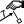 | Edit Dimension (EditDimension) This component extracts the numerical value, plane and text from the dimension object |
| Hatch This component creates a hatch from closed planar curves. The resulting Hatch object can be baked with the Advanced Bake (by blickfeld7.com) Version 0.92 |
Text
| Engrave Text (EngraveText) Creates text as a single line curve, ideal for engraving purposes. Version 0.92 | |
| Text 3D Advanced (3D Text) Creates 3D Text with custom color, font and alignment. Version 0.92 | |
| Text Contour (TextContour) This creates Contours from TextEntitys. To make TextEntitys see Text3d Advanced by blickfeld7.com Version 0.92 | |
| Text Dot (TextDot) This component creates a TextDot from location and text. The TextDot object can be baked with the Advanced Bake component (by blickfeld7.com) Version 0.92 |
Utils
| Unroll Unrolls Breps and Surfaces with additional curves and points. by blickfeld7.com | |
| View Direction (ViewDir) Gets the vector of the view direction from the active viewport or a specified view. (by blickfeld7.com) Version 0.92 |
Vision
| reacTIVision Listener (reacTIVision) The reacTIVision Listener draws the position and rotation of each fiducial marker | |
| Kinect V2 Skeleton Tracker (Skeleton) The Kinect V2 Skeletal Tracker will allow tracking of up to six people at a time. | |
| Kinect V2 Mesh Reconstruction (Mesh Reconstruction) Returns a reconstructed colored mesh based on the color/depth information from the Kienct sensor. | |
| Kinect V2 Video Stream (Video Stream) Stream video data from the Kinect sensor. | |
| Exposure (Accumulative) (Exposure) Temporally add color information to a Firefly Bitmap. | |
| Additive Time Lapse (Time Lapse) Additive Time Lapse | |
| Bitmap Decompose (Decompose) Decompose a bitmap into its constituent channels | |
| Bitmap Info (Info) Statistics about a Firefly Bitmap. | |
| Bitmap Layers (Layers) Bitmap Layers | |
| Bitmap Painter (Painter) Bitmap Painter | |
| Bitmap Recompose (Recompose) Recompose a bitmap from its constituent channels | |
| Bitmap Sampler (Sample) Sample a Firefly Bitmap based on an incoming set of points for a specified filter type. | |
| Snapshot Save a snapshot of a Firefly Bitmap | |
| Snapshot Sequence (Sequence) Create a sequence of image snapshots | |
| Bitmap Threshold (Threshold) Using the Average Dithering, find the threshold color quantization of an image. | |
| Blur Blur a Firefly Bitmap. | |
| Color Correction (Color) Modify the color properties (red, green, blue) for a Firefly Bitmap. | |
| Contrast Modify the contrast of a Firefly Bitmap. | |
| Convolution Filter (Convolver) Create your own filter based on a 3x3 convolution matrix (kernel). | |
| Custom Convolution Filter (Custom) Create your own custom filter based on a 3x3 convolution matrix. | |
| Edge Detection (Edge) Find edges in a Firefly Bitmap. | |
| Emboss Emboss a Firefly Bitmap. | |
| Flip Image (Flip) Flip or Mirror a Firefly Bitmap. | |
| Gamma Correction (Gamma) Specify the Gamma Correction for a Firefly Bitmap. | |
| Resize Bitmap (Resize) Change the resolution of a Firefly Bitmap | |
| Invert Invert a Firefly Bitmap. | |
| Laplacian Apply a Laplacian filter to a Firefly Bitmap. | |
| Load Bitmap Load Bitmap | |
| Load Video File (Load Video) Load a video file. | |
| Exposure (Movement) (Exposure) Temporally add movement information (in greyscale) to a Firefly Bitmap. | |
| Posterize Posterize a Firefly Bitmap. | |
| Replace Color (Replace) Replace a color in a Firefly Bitmap. | |
| Brightness and Saturation (Saturation) Modify the brightness and saturation properties of a Firefly Bitmap. | |
| Sharpen Sharpen a Firefly Bitmap. | |
| Sobel Apply a Sobel filter to a Firefly Bitmap. | |
| Test Color Test whether a color is included within a second list of colors | |
| Video Player Load or play a movie or video file. |
Utility
| Binary Blink (Blink) Oscillates 0's and 1's based on an incoming pattern of integers | |
| Data Log (Log) Create a log of incoming data. | |
| Fader One Way (Fader1) Fade between one value to another based on a time interval (ms). Use the GH_Timer component (Parameters/Special/Timer) to update the Fader values in real-time. | |
| Fader Two Way (Fader2) Fade between a minimum and maximum value based on the fade in and fade out time interval (ms). Use the GH_Timer component (Parameters/Special/Timer) to update the Fader values in real-time. | |
| Playback Retrieve a text file and return individual lines at a given frame rate. | |
| Smoothing Moving Average (Smooth) Find the Mean Smoothing value (or average) based on a sampling level (number of samples to average). Larger sample sizes result in greater smoothing | |
| Wave Sculpt (Wave) Create a sinusoidal waveform output | |
| AND Flip Flop (AND FlipFlop) The AND flip-flop differs from the NOR flip-flop in the sense that the output gate is determined by its present output state as well the states of both of its inputs | |
| Bang Detects when an input boolean has switched states. The equivalent of a 'Bang' component in other programs like MAX/MSP, Pd, and VVVV. | |
| Frame Rate (FrameRate) Time in milliseconds since the data was updated. | |
| Is Geometry Selected (Selected) Test whether or not some Rhino geometry is selected. | |
| Is Key Pressed (Pressed) Test whether or not a specified key has been pressed on the keyboard. | |
| NOR Flip Flop (NOR FlipFlop) The NOR flip-flop has two inputs, namely, a Set input (S) and a Reset (R) input | |
| PID Calculates the error value as the difference between a measured process variable and a desired set point. | |
| State Detection (Detect) Used when you want to detect when something has switched from LOW to HIGH (0 or 1) or vice versa. For more information see: http://arduino.cc/en/Tutorial/ButtonStateChange | |
| Stop Watch (Elapsed) Elapsed time in milliseconds since the stop watch was started | |
| Smoothing Temporal (Smoothing) This smoothing algorithm returns a smoothed value that is the sum of the weighted average of the previous observations and the current value. | |
| Time Line Time Line |
Arduino & I/O Boards
| Due Read This component will read values to all corresponding digital and analog pins on an Arduino Mega board | |
| Due Write This component will write values to all corresponding digital pins on an Arduino Due board. | |
| Mega Read This component will read values to all corresponding digital and analog pins on an Arduino Mega board | |
| Mega Write This component will write values to all corresponding digital pins on an Arduino Mega board. | |
| Open/Close Port (Open Port) Open or Close the Serial Port Connection | |
| COM Ports Available (Ports Available) Check to see which COM Ports are curretly available | |
| Serial Read (Generic) (Read) Retrieve a value coming over the serial port. Use the Timer component (Parameters/Special/Timer) to update the sensor values. | |
| Serial Write (Generic) (Write) Write a string value to the Serial Port. | |
| Uno Read This component will read values to all corresponding digital and analog pins on the Arduino Uno board | |
| Uno Write This component will write values to all corresponding digital pins on an Arduino Uno board | |
| Wii Nunchuck This component will read all of the sensor values from the Wii Nunchuck. | |
| Upload To I/O Board (Upload I/O) Upload an Arduino sketch to an I/O board | |
| Code Generator (CodeGen) This component will attempt to convert a Grasshopper definition into Arduino compatible code. The code can be simultaneously saved as a .ino file to be opened in the Arduino IDE. | |
| Convert Degrees To Steps (Convert To Steps) Convert an angle value in degrees to the appropriate amount of steps to move a Stepper Motor. | |
| Quad Stepper Motor (Stepper Motor) This component will format the data to control up to four stepper motors. | |
| Quad Stepper Motor Setup (Stepper Motor) This component will format the data to control up to four stepper motors. | |
| Quad Stepper Motor Stream (Stepper Motor) This component will stream data to control up to four stepper motors. | |
| Stepper Angle Setup (Setup) This utility component formats the direction and stepper angle values to work with the Firefly Stepper Firmata. |
Networking
| Pachube/Cosm Read (Cosm Read) Read a file from a Pachube/Cosm feed | |
| Key/Value Search (Search) Searches the array for a given key and returns the corresponding value if successful. | |
| OSC Listener OSC Listener. | |
| OSC Sender OSC Sender. The OSC Sender will automatically format incoming data into the appropriate OSC format and send the message over a UDP port to a specified IP address. | |
| UDP Listener UDP Listener. | |
| UDP Sender UDP Sender. The UDP Sender will automatically send any message (string) over a UDP port to a specified IP address. | |
| XML Search Search an XML file (either from the web or from a local directory) for a specific element tag |
Audio
| Sound Capture (Capture) Capture the audio frequencies from the left and right channel from an input (eg. microphone). | |
| Frequency Spectrum (Spectrum) Map the incoming frequency spectrum | |
| Note To Frequency (Notes) Generate frequency from notes. For more information visit http://en.wikipedia.org/wiki/Piano_key_frequencies | |
| Tone Generator (Tones) Create tones based on incoming frequencies | |
| Waveform Generator (Waveform) Generate different types of waveform patterns. |
JSON
| JSON Parser (JSON) Parse through a JSON file |
Composition
| Cloth From Mesh (Cloth) | |
| Constraints: Anchors (Anchor) Flex anchor by index | |
| 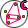 | Constraint: Shape Matching Constraint (Shape Matching) Group particles into shapes where they try to remain in their current formation |
| Constraints: Springs (Springs) Add spring constraints by particle indices. | |
| Constraints: Triangles (Triangles) Add triangle constraints by particle indices. | |
| 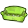 | Inflatable From Cloth (Inflatable) Inflatable from Flex Cloth Object |
| Particle Fountain (Fountain) Connect a timer to me and make sure to not be in Lock Mode (Flex Engine component). | |
| 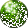 | Particles From Points (Particles) |
| Spring System From Lines / Meshes (Springs) |
Decomposition
| 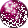 | Get All Particles (AllParts) Get all particles from engine object |
| Get All Springs (AllSprings) Get all springs from engine object | |
| 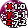 | Get Particle Description (Particles) < |
| Get Rigid Tranformations (Transform) Get the transformation matrices of all rigid bodies in the simulation. This includes shape matching constraints in soft bodies. | |
| Get Soft Bodies (Softs) Get soft bodies from engine object | |
| Get Spring Systems (Springs) Get all particles that are parts of springs from engine object |
Setup
| Flex Collision Geometry (CollGeometry) Specifiy static geometry as colliding objects | |
| Flex Force Field (Force Field) | |
| Flex Parameters from .xml file (Params) Set environmental parameters for your simulation. Link a .xml file (INFO: Auto update doesn't work yet, so if you change you .xml file you'll have to manually recompute the component. | |
| Flex Scene (Scene) Create a scene object containing all moving geometry. |
Engine
| 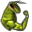 | Flex Engine (Flex) Main component |
| 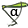 | Flex Solver Options (Opts) |
FlowL
| Equi2D Calculates 2D equipotentiallines of a vectorfield projected onto World_xy_plane (implementation of RK4) | |
| StreamLines2D Calculates 2D streamlines of a vectorfield projected onto World_xy_plane (implementation of RK4) | |
| StreamLines2DVortex Calculates 2D streamlines of a vectorfield projected onto World_xy_plane (implementation of RK4)with optional vortexes | |
| StreamLines3D Calculates 3D streamlines of a vectorfield (implementation of RK4).Streamlines are everywhere tangent to the vectorfield |
ExcelReadWrite
| ExcelDynamicRead (ExDRead) Read data dynamically from excel | |
| ExcelStaticRead (ExSRead) Read data statically from excel | |
| 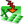 | ExcelWrite (ExWrite) Write data to excel |
10 | Energy | Energy
| EP context Surfaces prepare shading/context geometries | |
| Run Energy Simulation Use this component to export HBZones into an IDF file, and run them through EnergyPlus | |
| Adaptive Comfort Analysis Recipe Use this component to assemble an adaptive comfort recipe for the "Honeybee_Annual Indoor Comfort Analysis" component | |
| Add Internal Mass to Zone Use this component to assign internal thermal masses to zones, which can be used to account for the effects of furniture inside zones or massive building components like hearths and chimneys | |
| Balance Temperature Calculator Use this component to calculate a rough building (or zone) balance temperatrue from a Honeybee energy simulation | |
| Color Surfaces by EP Result Use this component to color zone surfaces based on EnergyPlus data out of the "Honeybee_Read EP Surface Result" component | |
| Color Zones by EP Result Use this component to color zones based on EnergyPlus data out of the "Honeybee_Read EP Result" component or zone comfort analyses out of the comfort calculator components | |
| Construct Energy Balance This component accepst the outputs of the "Read EP Result" and the "Read EP Surface Result" components and outputs a data tree with all of the building-wide energy balance terms | |
| Energy Shade Benefit Evaluator This is a component for visualizing the desirability of shade in terms of energy simulation results by using solar vectors, the outdoor temperature, and the simulation hating load, cooling load, and beam gain | |
| Energy Simulation Par EnergyPlus Shadow Parameters | |
| Energy Plus Window Shade Generator Use this component to generate shades for Honeybee zone windows | |
| Export To Open Studio Use this component to export HBZones into an OpenStudio file, and run them through EnergyPlus | |
| Generate EP Output This component helps select simulation outputs that can be hooked into the "Honyebee_Export to OpenStudio" component | |
| Indoor View Factor Calculator Use this component to generate test points within a zone and calculate the view factor from each of these points to the other zurfaces in a zone as well as the sky | |
| Lookup Energy Plus Folder Search Energy Simulation Folder | |
| Make Adiabatic by Name Make Adiabatic | |
| Make Adiabatic By Type Use this component to make certain surface types of a zone adiabatic | |
| Make Adiabatic Make Adiabatic | |
| Matrix to Data Tree This component converts a comfort result matrix into a Grasshopper Data Tree with numerical values | |
| Microclimate Map Analysis Use this component runs an annual comfort assessment off of EnergyPlus results and write all values into csv files | |
| Normalize Data by Floor Area This component takes data that has been output from a simulation and normalizes the results by the floor area of the HBZones | |
| Outdoor Comfort Analysis Recipe Use this component to assemble an adaptive comfort recipe for the "Honeybee_Annual Indoor Comfort Analysis" component | |
| PET Analysis Recipe Use this component to assemble an adaptive comfort recipe for the "Honeybee_Annual Indoor Comfort Analysis" component | |
| PMV Comfort Analysis Recipe Use this component to assemble an adaptive comfort recipe for the "Honeybee_Annual Indoor Comfort Analysis" component | |
| Re-run IDF This is a component for running a previoulsy-generated | |
| Re-run OSM This is a component for running a previoulsy-generated | |
| Read EP Custom Result This component reads the results of an EnergyPlus simulation from the "Export to OpenStudio" Component or any EnergyPlus result | |
| Read EP HVAC Result This component reads the results of an EnergyPlus simulation from the WriteIDF Component or any EnergyPlus result | |
| Read EP Result This component reads the results of an EnergyPlus simulation from the WriteIDF Component or any EnergyPlus result | |
| Read EP Surface Result This component reads the results of an EnergyPlus simulation from the WriteIDF Component or any EnergyPlus result | |
| Read HVAC Sizing This component parses an | |
| Read Microclimate Matrix This component reads the results of an Adaptive Indoor Comfort Analysis | |
| Read Result Dictionary This component parses an | |
| Shadow Par EnergyPlus Shadow Parameters | |
| Simulation Control Use this component to set EnergyPlus Simulation Controls such as whether to run certain types of HVAC sizing calculations, etc | |
| Surface Data Based On Type Detailed Use this component to separate grafed lists of surface data that come out of the "Honeybee_Read EP Surface Result" component based on rough surface type | |
| Surface Data Based On Type Use this component to separate grafed lists of surface data that come out of the "Honeybee_Read EP Surface Result" component based on rough surface type | |
| Thermal Autonomy Analysis Use this component to calculate 'Occupied Thermal Comfort Percent' (occTCP) and 'Thermal Autonomy' (TA) from the resultd of a Microclimate Map Analysis | |
| Visualize Microclimate Map Use this component to produce a colored mesh from a comfResultsMtx |
00 | Honeybee
| add HBGlz Use this component to add a custom glazing surface to a HBSurface or HBZone | |
| Ask Me Use this component to get basic information on Honeybee Objects, whether they are HBSrfs or HBZones | |
| Change HBObj Name Change Honeybee Object Names | |
| create HBSrfs Create a Honeybee surface, which can be plugged into the "Run Daylight Sumilation" component or combined with other surfaces to make HBZones with the "createHBZones" component | |
| create HBZones Create an HBZone from HB Surfaces | |
| Decompose Based On Boundary Condition Decompose zone surfaces by boundary condition | |
| Decompose Based On Type Use this component to break down the geometry of your zone by the surface type | |
| Decompose HBZone Decompose Honeybee Zone | |
| Dump Honeybee Objects Dump Honeybee Objects Use this component to dump Honeybee objects to a file on your system | |
| Get or Set HB Object Name Change Honeybee Object Names | |
| Glazing based on ratio Use this component to generate windows for a HBSurface or HBZone based on a desired window-to-wall ratio | |
| Glazing Parameters List Use this component to generate lists of glazing ratios, breakUp diatance, window heigths, sill heights, or vertical glazing splits for the four primary cardinal directions | |
| Honeybee This component carries all of Honeybee's main classes | |
| Intersect Masses Use this component to take a list of closed breps (polysurfaces) that you intend to turn into HBZones and split their component surfaces to ensure that there are matching surfaces between each of the adjacent zones | |
| Label Zone Surfaces Use this component to lablel HBSurfaces or HBZones with their names or energy/daylight properties in the Rhino scene | |
| Label Zones Use this component to lablel zones with their names in the Rhino scene | |
| Load Honeybee Objects Load Honeybee Objects Use this component to load Honeybee objects from a file on your system | |
| Masses2Zones Use this component to take any list of closed breps and turn them into Honeybee Zones with all of the properties needed to run them through an energy simulation | |
| Mirror Honeybee Mirror Honeybee Objects | |
| Move Honeybee Move Honeybee Objects | |
| Open File Directory Ues this component to Open a file/directory in windows explorer | |
| orient HBGlz Use this component to set the orientation(s) of the glazing | |
| Perimeter Core Zoning Separate zones into perimeter and core | |
| Remove Glazing Remove Glazing | |
| Rotate Honeybee Rotate Honeybee Objects | |
| Scale Honeybee Scale Honeybee Objects Non-Uniformly | |
| Select by Type Select surfaces by type | |
| Separate By Normal Separate surfaces by normal | |
| Separate conditioned and unconditioned zones Separate zones into conditioned and unconditioned | |
| Separate Zones By Floor Separate zones based on floor height | |
| Separate Zones By Orientation Separate zones based on orientation | |
| Separate Zones By Program Separate zones based on zone program | |
| Skylight Based on Ratio Use this component to generate windows for a HBSurface or HBZone based on a desired window-to-wall ratio | |
| Solve Adjacencies Solve adjacencies | |
| Split Building Mass Use this component to divide up a brep (polysurface) representative of a complete building massing into smaller volumes that roughly correspond to how a generic EnergyPlus model should be zoned | |
| Surface Attribute List (srfAttributeList) Provides a list of surface attributes to choose from and plug into the Honeybee_Label Surfaces Component | |
| Zone Attribute List (zoneAttributeList) Provides a list of preset values to choose from |
04 | Daylight | Daylight
| Convert HDR to GIF Convert HDR to GIF | |
| Convert HDR to TIF Convert HDR to TIF | |
| Convert IMG Convert Image | |
| Convert TIF to HDR Convert HDR to TIF | |
| Daysim Annual Profiles Read Daysim Annual Profiles | |
| Daysim Electrical Lighting Use Daysim's electrical lighting use | |
| Daysim Occupancy Generator Based On List Daysim Occupancy Generator Daysim calculates the outputs for the hours that the space is occupied | |
| Daysim Occupancy Generator Daysim Occupancy Generator Daysim calculates the outputs for the hours that the space is occupied | |
| Daysim shading group sensors Daysim shading group sensors Read here for more information about Daysim sensors here: http://daysim | |
| Daysim User Profiles Daysim User Profiles Read here for details: http://daysim | |
| False Color False Color | |
| Glare Analysis Glare Analysis This component is using evalglare for glare calculations | |
| Import dgp File Import Annual Daylight Glare Probability | |
| Import Pts File Import Radiance Test Grid | |
| Import rad Import a rad file to gh This component is just a proof of concept for now and needs major modifications | |
| Lighting control Recipe Daysim electrical lighting control | |
| Lookup Daylighting Folder Search Simulation Folder | |
| MSH2RAD Convert a mesh to RAD file | |
| Read All the Hourly Results from Annual Daylight Study Read the results of the annual study for a all the hours of the year for all the points | |
| Read Annual Result I Read Annual Daylight Results I [Standard Daysim Results] | |
| Read Annual Result II Read Annual Daylight Results II [Daysim] | |
| Read DS Result for a point Read Daysim result for a test point | |
| Read Hourly Results from Annual Daylight Study Read the results of the annual study for a single hour of the year | |
| Read RAD Result Read Radiance Results | |
| Refine Daylight Simulation Refine simulation for an existing Radiance scene ( | |
| Run Daylight Simulation export geometries to rad file, and run daylighting/energy simulation | |
| Set Exposure for HDR Set Exposure for HDR |
13 | WIP
| Apply Open Studio Measure This component applies an OpenStudio measure to an OpenStudio file | |
| Condensation calculator Use this component to calculate the Dew Point, Relative Humidity and Condensation on each layer of a wall | |
| Customize Energy Plus Objects Customize EnergyPlus Objects [NOT READY YET!] | |
| Export EPC Export to Energy Performace Calculator (EPC) | |
| Extrude Windows Extrude pseudo walls from window polygons | |
| gb XML to Honeybee Import gbXML files as Honeybee zones | |
| generationsystem Use this component to create a Honeybee generator system | |
| Generator PV Provided by Honeybee 0 | |
| Generator Wind Horizontialaxis Provided by Honeybee 0 | |
| Grizzly Bear Grizzlybear exports Honeybee zones to gbXML file | |
| Import idf import an idf file to gh This version only imports the geometries Constructions, schedules and systems will be neglected | |
| Load Open Studio Measure This component loads OpenStudio measureds into Honeybee | |
| Open Studio to gb XML Use this component to export OpenStudio model to gbXML file | |
| Read generation system results This component reads the results of an EnergyPlus simulation from the WriteIDF Component or any EnergyPlus result | |
| simple Inverter Provided by Honeybee 0 | |
| Split Building Mass2Floors (Split2Floors) Use this component to divide up a brep (polysurface) representative of a complete building massing into floors | |
| Split Floor2Thermal Zones (Split2Zone) Use this component to divide up a brep (polysurface) representative of a building floor into smaller volumes that roughly correspond to how a generic EnergyPlus model should be zoned | |
| Visualise Honeybeegeneration cashflow Use this component to the calculate and visualise the financial value of Honeybee generation systems over 25 years |
01 | Daylight | Material
| Add to Radiance Library Add Radiance Materials to Library | |
| Call from Radiance Library Call Radiance Materials from Library | |
| Radiance BSDF Material Radiance BSDF Material Create RADIANCE BSDF material | |
| Radiance Glass Material By Color Radiance Glass Material By Color Read more here to understand Radiance materials: http://www | |
| Radiance Glass Material Radiance Glass Material Read more here to understand Radiance materials: http://www | |
| Radiance Materials Info Radiance Materials Info | |
| Radiance Metal Material By Color Radiance Metal Material By Color Create a Standard Radiance Metal Material | |
| Radiance Metal Material Radiance Opaque Material Create a Standard Radiance Opaque Material | |
| Radiance Mirror Material By Color Radiance Mirror Material By Color Read more here to understand Radiance materials: http://www | |
| Radiance Mirror Material Radiance Mirror Material Read more here to understand Radiance materials: http://www | |
| Radiance Opaque Material By Color Radiance Opaque Material By Color Create a Standard Radiance Opaque Material | |
| Radiance Opaque Material Radiance Opaque Material Create a Standard Radiance Opaque Material | |
| Radiance Trans Material By Color Radiance Trans Material This component is useful to create translucent materials | |
| Radiance Trans Material Radiance Trans Material This component is useful to create translucent materials | |
| Set Radiance Materials Radiance Default Materials |
08 | Energy | Set Zone Properties
| Lighting Density Calculator Use this component to calculate the Lighting Density Per Area Load from information about your bulb, fixture type, mainteneance, and required lighting level | |
| 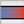 | Add Earthtube Use this component to add an Energy Plus earth tube to a Zone |
| Create EP Ground Use this component to change the properties of a zone to refelct those of a ground | |
| Create EP Plenum Use this component to turn a HBZone into a 'Plenum Zone' with no internal loads | |
| inf ORvent Per Area Calculator Use this component to transform ACH or inifitration per area of facade to m3/s-m2 | |
| Set Energy Plus Zone Loads Use this component to change the occupancy, lighting, equipment, etc | |
| Set Energy Plus Zone Schedules Use this component to change the schedules of your HBZones | |
| Set Energy Plus Zone Thresholds Use this component to set Zone Thresholds like daylighting thresholds and setpoints | |
| Set EP Air Flow Use this component to edit the airflow between your zones's air walls and/or set natural ventilation | |
| Set EP Surface Construction Add Glazing | |
| Set EP Zone Construction Update EP construction of zone based on type | |
| Set EP Zone Interior Construction Set EP Zones Interior Construction | |
| Set EP Zone Underground Construction Update EP construction of zone based on type | |
| Set Loads And Schedules Set schedules and loads for zones based on program |
06 | Energy | Material | Construction
| Add to Energy Plus Library Add EnergyPlus Material, Construction or Schedule to Library | |
| Call from EP Construction Library Call from EP Library | |
| Decompose EP Construction Decompose EnergyPlus Construction | |
| Decompose EP Material Decompose EnergyPlus Material | |
| Energy Plus Construction Use this component to make your own EnergyPlus construction | |
| Energy Plus Glass Material Use this component to create a custom material for glass, which can be plugged into the "Honeybee_EnergyPlus Construction" component | |
| Energy Plus No Mass Opaque Material Use this component to create a custom opaque material that has no mass, which can be plugged into the "Honeybee_EnergyPlus Construction" component | |
| Energy Plus Opaque Material Use this component to create a custom opaque material, which can be plugged into the "Honeybee_EnergyPlus Construction" component | |
| Energy Plus Shade Material Use this component to create a custom material for shades, which can be plugged into the "Honeybee_EnergyPlus Window Shade Generator" component | |
| Energy Plus Window Air Gap Use this component to create a custom material for a window air gap, which can be plugged into the "Honeybee_EnergyPlus Construction" component | |
| Energy Plus Window Material Use this component to create a custom window material that has no mass, which can be plugged into the "Honeybee_EnergyPlus Construction" component | |
| R-Value With Air Films Use this component to account for air films in the U-Value and R-Value of any decomposed Honeybee construction or material | |
| Search EP Construction Search EnergyPlus construction based on Energy modeling standards, climate zone, surface type and building program |
03 | Daylight | Recipes
| Advanced Dynamic Shading Recipe Advanced Shading Recipe for Annual Simulation with Daysim | |
| Annual Daylight Simulation Analysis Recipe for Annual Daylighting Simulation | |
| Conceptual Dynamic Shading Recipe Conceptual Shading Recipe for Annual Simulation with Daysim You need to add sensor points later in the Daysim result reader | |
| Daylight Factor Simulation Analysis Recipie for Daylight Factor Analysis | |
| Daysim Glare Control Recipe Glare Control Recipe for Annual Simulation with Daysim "Based on exterior illuminance and/or position of the sun" You need to add an external sensor later in the Daysim result reader | |
| Daysim Shading State Daysim Shading State for Advanced Dynamic Shading | |
| DSParameters Analyses Recipe for Annual Daylight Simulation with Daysim | |
| Generate Test Points Genrate Test Points | |
| Generate Zone Test Points Genrate Test Points for all Floor Surfaces in Honeybee Zone | |
| Grid Based Simulation Analysis Recipie for Grid-Based Analysis | |
| Image Based Simulation Analysis Recipie for Image-Based Analysis | |
| RADParameters Radiance Parameters - Standard Check here for more details: http://radsite | |
| Vertical Sky Component Analysis Recipie for Vertical Sky Component, which is typically used to evaluate daylight and sky access in urban areas |
02 | Daylight | Light Source
| Generate Average Sky Generate Average Climate Based Sky This component generate an average climate based data for a single hour during a month | |
| Generate Climate Based Sky Genrate Climate Based Sky This component generate a climate based sky for any hour of the year | |
| Generate Cumulative Sky This component generate a cumulative sky using GenCumulativeSky | |
| Generate Custom Sky Genrate Custom Sky This component generate a custom sky based on user's input | |
| Generate Dark Sky This component generates a dark sky with 0 illuminance | |
| Generate Sky With Certain Illuminance level Genrate a Uniform CIE Sky Based on Illuminace Value | |
| Generate Standard CIE Sky Genrate Standard CIE Sky | |
| IES Custom Lamp This component can be used to specify a lamp of custom chromaticity, color or color temperature | |
| IES Luminaire Zone This component is to be used for specifying the location of luminaires for electric lighting simulations | |
| IES Luminaire This is the core component for adding photometric data into a lighting simulation | |
| IES Project This component is meant for summarizing the details of all the luminaires used in a simulation | |
| Watch The Sky Watch The Sky |
11 | THERM
| Create Therm Boundaries Use this component to create a THERM boundary condition | |
| Create Therm Polygons Use this component to create a THERM polygon with material properties | |
| Custom Radiant Environment Use this component to create a custon radiant environment for THERM boundary condition | |
| Import THERM XML Use this component to read the content of a THERM XML file into Grasshopper | |
| Import WINDOW Glz System Use this component to import the content of a LBNL WINDOW text file report as a series of polygons and boundary conditions that can be plugged into the "Write THERM File' component | |
| Import WINDOW IDF Report Use this component to import an EnergyPlus window construction from LBNL WINDOW | |
| Read THERM Result Use this component to import the colored mesh results from a THERM simulation | |
| Therm Material to Energy Plus Material Use this component to create a custom opaque material, which can be plugged into the "Honeybee_EnergyPlus Construction" component | |
| Therm Material Use this component to create a custom THERM material, which can be plugged into the "Honeybee_Create Therm Polygons" component | |
| Write THERM File Use this component to write your THERM polygons and boundary conditions into a therm XML that can be opened ready-to-run in THERM |
07 | Energy | Schedule
| Annual Schedule Use this component to generate schedules that can be assigned to HBZones | |
| Call from EP Schedule Library Call from EP Schedule Library | |
| Constant Schedule Use this component to generate a schedule with a constant value or a schedule with 24 values that repeat in the same 24-hour pattern every day | |
| Convert Energy Plus Schedule to Values Use this component to make a 3D chart in the Rhino scene of any climate data or hourly simulation data | |
| Create CSV Schedule Use this component to write custom | |
| Daily Schedule Use this component to make daily schedules for "Honeybee_AnnualSchedule" | |
| Decompose Energy Plus Schedule Decompose Schedule | |
| Search EP Schedule Library Filter EP Schedule Library | |
| Seasonal Schedule Use this component to generate a seasonal schedule (aka |
05 | Energy | Building Program
| bldg Programs (bldgPrograms) Provides a list of available building programs from the template | |
| Get Energy Plus Loads Look up loads for an specific bldgProgram and zoneProgram | |
| Get Energy Plus Schedules Look up schedules for an specific bldgProgram and zoneProgram | |
| Get Zone Energy Plus Loads Look up loads for a Honeybee Zone | |
| Get Zone Energy Plus Schedules Look up schedules for a Honeybee Zone | |
| List Zone Programs Find list of spaces for each space based on program |
09 | Energy | HVACSystems
| Assign HVAC System Use this component to assign OpenStudio Systems to your HBZones | |
| HVAC Air Details Use this component to set the parameters of a HVAC ventilation system (or air side) that has been assigned with the "Honeybee_Assign HVAC System" component | |
| HVAC Cooling Details Use this component to set the parameters of a HVAC cooling system that has been assigned with the "Honeybee_HVAC Systems" component | |
| HVAC Heating Details Use this component to set the parameters of a HVAC heating system that has been assigned with the "Honeybee_HVAC Systems" component | |
| HVACSystems List (HVACSystemsList) List of available HVAC templates that can be assigned to HBZones |
12 | Developers
| Update Honeybee This component [removes | updates] Honeybee components from [grasshopper | a source folder] |
yconst.com
| HoopSnake (HS) HoopSnake Feedback Component |
UI Elements
| Create 3D View (3DView) Creates an orbitable 3d viewport with a custom-defined mesh | |
| Create Browser (Browser) Creates a web browser window. | |
| Create Button (Button) Create a Button object. | |
| Create Checkbox (Checkbox) Creates a single checkbox | |
| Create Checklist (Checklist) Creates a listbox containing checkboxes. | |
| Create Color Picker (ColorPicker) Creates an interactive color picker, with an optionally supplied set of colors | |
| Create Data Table (DataTable) Creates a Data Table view | |
| Create File Picker (FilePicker) Create a dialog box that lets you choose a path for a file, folder, or save path. | |
| Create Gradient Editor (Gradient) Creates an editable gradient in the UI | |
| Create Graph Mapper (GraphMapper) Creates a Bezier Graph Mapper | |
| Create Image (Image) Creates an image object to be added to the window | |
| Create Label (Label) Creates a label in the window. | |
| Create List Box (ListBox) Creates a list box from which items can be selected. | |
| Create Markdown Viewer (MDV) Creates a block of formatted text based on Markdown-formatted input | |
| Create Multidimensional Slider (MD Slider) Creates a 2D slider ranging from {0,0} to {1,1} | |
| Create Shapes (Shapes) Creates shapes from a polylines | |
| Create Objects from XAML (XAML) Creates UI elements from typed XAML syntax | |
| Create Pulldown Menu (Pulldown) Creates a pulldown menu from which items can be selected. | |
| Create Radio Button (RadioBtn) Creates a single radio button. Be sure to assign a radio button group for proper switching behavior | |
| Create Range Slider (RangeSlider) Creates a double-slider that describes a range | |
| Create Rhino Command Button (CmdButton) Create a Special Button object to trigger a Rhino command. | |
| Create Rhino Pick Button (PickBtn) Create a special Button object to pick geometry from Rhino. | |
| Create Separator (Separator) Create a line separator object. | |
| Create Shape (Shape) Creates a simple shape from a polyline | |
| Create Slider (Slider) Create a slider with a label and a value readout. | |
| Create Text Block (TB) Creates a multi-line text block | |
| Create Text Box (TextBox) Create a box for text entry, with a button to pass its value. | |
| Create Toggle (Toggle) Creates an on-off toggle. | |
| Attach Tooltip to Element (Tooltip) Attach a tooltip to a UI element | |
| Create True-Only Button (True Button) Create a True only Button object. |
UI Output
| Add Elements to Shape(s) (AddElem2Shape) Put UI Elements (Like text!) over the top of a shape/shapes element | |
| Set 3D View (Set3DView) Allows you to modify the contents of an existing 3D view. | |
| Set 3D View Properties (Set3DViewProps) Additional controls for modifying a 3D view | |
| Set 3D View Textured (Set3DViewTex) Allows you to modify the contents of an existing 3D view. | |
| Set Browser (SetBrowser) Control the Browser element - with back/forward buttons, and control over the displayed site etc. | |
| Set Button (SetBtn) Change the content of an existing Button element. | |
| Set CheckBox (SetCheckBox) Modify an existing Check Box object. | |
| Set Checklist Contents (SetChecklist) Use this to set the contents of a checklist | |
| Set Color Picker (SetColorPicker) Use this to set the values of a color picker | |
| Set Data Table (SetDataTable) Update the contents of a Data Table | |
| Set Expander (SetExp) Sets the properties of an expander container | |
| Set Image (SetImg) Change the content of an existing Image control. | |
| Set Label Contents (SetLabel) Modify the contents of an existing label object. | |
| Set List Contents (SetList) Use this to set the contents of either a List Box or a Pulldown Menu | |
| Set Multidimensional Slider (SetMDSlider) Modify the value of a multidimensional slider. | |
| Set Shape (SetShape) Replace an existing shape in the window | |
| Set Shapes (SetShapes) Replace an existing shape in the window | |
| Set Slider (SetSlider) Modify the range and value of a slider. | |
| Set Tabbed View (SetTab) Sets the properties of a tabbed view | |
| Set TextBlock Contents (SetTextBlock) Modify the contents of an existing Text Block object. | |
| Set TextBox Contents (SetTextBox) Modify the contents of an existing Text Box object. |
UI Main
| Add Elements (AddElems) Add WPF Controls to a window | |
| Adjust Element Appearance (AdjustElem) Adjust the color and appearance of individual elements. | |
| Adjust Element Positioning (AdjustPos) Adjust the margins, sizing, and other positioning information of an element. Absolute positioning can get a little wonky, use at your own risk. | |
| Capture Window or Element to File (Capture) Capture a HUI Window or individual element to an image | |
| Capture Window to File (Capture) Capture a HUI Window to an image | |
| Container Contents (Contents) Gets the child elements of a container element like a Stack or a Tab | |
| Launch Transparent Window (LaunchXPWin) This component launches a new blank, transparent control window. | |
| Filter UI Elements (Filter) This component allows you to select UI elements from a window by name, to let you listen for their values or set their properties dynamically. | |
| Get Element Properties (GetProps) Tries to get all properties of any element. This is experimental! | |
| Get Screen Dimensions (GetScreen) Gets the dimensions of the current screen | |
| Hide/Show Element (HideShow) Allows you to hide or show an element | |
| Launch Window (LaunchWin) This component launches a new blank control window. | |
| Make Child Window (ChildWin) Make one window a child of another | |
| Restore Element States (Restore) Restore the saved states of UI elements | |
| Save Element States (SaveStates) This component lets you save the states of selected elements for later retrieval | |
| Set Element Property (SetProp) Tries to set any property of an element. This is experimental! | |
| Set Window Properties (WinProps) Modify various properties of a Window. | |
| Value Listener (Values) This component is used to retrieve the values of UI elements from the window. By default it will automatically refresh when those values change. | |
| Window Status (WinStat) Gets the current status of the specified Window |
UI Containers
| Create Border (Border) Wrap Elements with a border. | |
| Create Expander (Expander) A collapsible expander for content | |
| Create Grid (Grid) Create a container with absolutely positioned elements | |
| Create Scroll Viewer (ScrollViewer) Allows an element to scroll independently of the rest of the window | |
| Create Simple Grid (SimpleGrid) Create a container with elements in a grid according to the path structure provided | |
| Create Stack (Stack) Creates a group of UI elements stacked vertically or horizontally. | |
| Create View Box (ViewBox) Scale a group of UI Elements by placing them in a ViewBox. | |
| Create WrapPanel (WrapPanel) Creates a group of UI elements WrapPaneled vertically or horizontally. | |
| Tabbed View (Tabs) Creates a series of tabbed views that can contain UI element layouts |
UI Graphs + Charts
| Create Chart (Chart) Creates a Chart from Data and Categories. | |
| Create Multi Chart (MultiChart) Creates a Multi Chart from sets of Data and Categories. | |
| Set Chart Contents (SetChart) Use this to set the contents of a Chart | |
| Chart Appearance (ChartAppearance) Use this to set the appearance of a Chart | |
| Set Graph Contents (SetGraph) Use this to set the contents of a Graph | |
| Set Multi Chart Contents (SetMultiChart) Use this to set the contents of a MultiChart |
UI Testing
| ElemFromGuid (Nickname) Description |
Hummingbird
| Adap Comps (AdapComps) WhiteFeet ModelBuilder - Add Adaptive Components | |
| Beams WhiteFeet ModelBuilder - Add Beams | |
| Columns WhiteFeet ModelBuilder - Add Columns | |
| Families WhiteFeet ModelBuilder - Add Revit Families | |
| Filled Regions (FilledRegions) WhiteFeet ModelBuilder - Add FilledRegions | |
| Floors WhiteFeet ModelBuilder - Add Floors | |
| 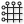 | Grids WhiteFeet ModelBuilder - Add Revit Grid Lines |
| Input WhiteFeet ModelBuilder - Read Input | |
| 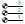 | Levels WhiteFeet ModelBuilder - Add Revit Levels |
| Lines WhiteFeet ModelBuilder - Add Revit Lines | |
| Loft Forms (LoftForms) WhiteFeet ModelBuilder - Add LoftForm from Reference Points | |
| Mass Families (MassFamilies) WhiteFeet ModelBuilder - Add Mass Family Extrusion | |
| 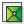 | Rooms/Areas WhiteFeet ModelBuilder - Add Rooms & Areas |
| Topo Surface (TopoSurface) WhiteFeet ModelBuilder - Add Revit Topo Surface | |
| Walls WhiteFeet ModelBuilder - Add Walls |
jSwan
| 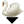 | Deserialize Json (DeJson) deserialize it |
| 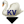 | Deserialize Keys and Values (DeJsonKV) Deserializes objects to keys and values |
| 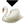 | Serialize Json (ReJson) Serialize it |
| 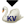 | Serialize Keys and Values (ReJsonKV) Serialize to JSON with specified keys and values |
Mesh
| By Parent (ByParent) Refine a Mesh, separating outputs by parent face | |
| Checkerboard Attempt to separate a mesh into 2 lists of non-adjacent faces | |
| Diagonalize (Diag) Replace each edge with a new face | |
| Face Face Offset (FaceFace) Offset a conical mesh so that corresponding faces are constant distance apart | |
| Fold Angle (FoldAngle) Measure the current angle between two triangles about their common edge | |
| Hinge Points (HingePoints) Get the 4 points for each internal edge to use in a Hinge Force | |
| Combine&Clean (Clean) Combine and Clean a list of meshes, removing unused and duplicate vertices | |
| Mesh Corners (MC) Extract corners sharper than some angle | |
| Mesh Direction (MD) Sort the face directions of a mesh | |
| Mesh Map (MeshMap) Map points from one mesh to another | |
| Mesh Turn (Turn) Rotate the vertex order of each face | |
| Naked Vertices (NV) Sorts the vertices of a mesh into 2 lists according to whether or not they are surrounded by faces | |
| Refine Divide each quad into 4 quads, and each triangle into 4 triangles | |
| Refine Strips (Strips) Directional subdivision, refines quads in one direction only | |
| Simple Remesh (SimpleRemesh) Isotropically remesh a Brep or Mesh | |
| Simple Simple Target Length | |
| Stripper Divide a mesh into strips | |
| Tangent Circles (TC) Generate face incircles, circle packing centred on vertices, or incircular dual | |
| Unroller Unroll a strip of quads | |
| Vertex Neighbours (VN) Returns the positions of the vertices connected the given vertex by an edge | |
| Warp Weft (WarpWeft) Separate the edges of a mesh into 2 lists according to Warp and Weft direction |
Goals-Mesh
| Conicalize (Conical) Adjust a quad mesh to make vertices conical - so the mesh has a face-face offset (See the paper 'The focal geometry of circular and conical meshes' for details). Use together with Planarize | |
| Cyclic Quad (CyclicQuad) Make a quadrilateral have a circumscribed circle | |
| Developablize Turn a triangular mesh into developable patches with creases. Based on the paper 'Developability of Triangle Meshes' by Stein, Grinspun & Crane | |
| Edge Lengths (EdgeLengths) Set the edge lengths of a mesh | |
| Hinge Hinge | |
| Isothermic (Iso) Make a quad mesh S-Isothermic, as described in the paper 'Quasiisothermic Mesh Layout' by Sechelmann, Rörig & Bobenko | |
| Live Soap (LS) For generating minimal and CMC (zero and constant mean curvature respectively) meshes which adapt their connectivity during relaxation to maintain triangle quality | |
| No Fold Through (NoFoldThrough) To stop the sides of a hinge passing through each other | |
| Planarize Planarize | |
| Plastic Hinge (PH) Like Hinge, except folding beyond the plastic/elastic threshold will alter the rest angle | |
| Polygon Area (PolygonArea) PolygonArea | |
| Pressure A force normal to each triangle, and proportional to its area | |
| Smooth Smooth | |
| Soap Film (SG) Area minimizing triangle, for generating zero mean curvature meshes | |
| Tangential Smooth (TSmooth) Smooth a mesh only in the local tangent planes. Used in conjunction with SoapFilm | |
| Tangent Incircles (TangentIncircles) TangentIncircles | |
| Vertex Loads (VertexLoads) Apply equal vertical loads to all vertices of a mesh | |
| Volume Set the total volume of a mesh | |
| Wind Wind |
Goals-Pt
| Anchor Anchor | |
| Anchor XYZ (AnchorXYZ) Fix a point only along chosen world axes. If you need to reset the initial position, disconnect then reconnect the Point input. | |
| Bomb (B) Causes an explosion after a given number of iterations | |
| Coincident (C) Equivalent to a zero length constraint between a pair of points | |
| Floor Floor | |
| Magnet Snap (MS) Snap points together according to proximity | |
| Plastic Anchor (PlasticAnchor) PlasticAnchor | |
| Transform Keep a given transformation between 2 points | |
| Load Load |
Goals-Lin
| Clamp Length (ClampLength) Keep length within given bounds | |
| Constant Tension (CT) An element which adapts its stiffness to maintain a constant force | |
| Direction Align a line segment with a given vector, or if none supplied, the closest of the World XYZ vectors | |
| Dynamic Weight1d (DW) A load in the negative Z direction, which updates its magnitude according to the length of the line | |
| Equal Length (EqualLength) EqualLength | |
| Length Ratio (LengthRatio) Maintain a fixed ratio between the lengths of a pair of lines | |
| Length Snap (LengthSnap) Snap length to whole number multiples of a given number | |
| Plastic Length (PL) This tries to preserve the length of the line elastically, until it is deformed beyond the limit, then its rest length gets changed | |
| Length(Line) Length(Line) |
Goals-6dof
| Align Faces (AlignFaces) Align faces of a pair of rigid bodies | |
| Beam Beam resisting bending and torsion | |
| Concentric Align axes of a pair of rigid bodies | |
| Rigid Body (RigidBody) RigidBody | |
| Rigid Point Set (RigidPointSet) A set of points which maintain their relative positions | |
| Solid Collide (SolidCollide) Collision between a pair of solids | |
| Solid Plane Collide (SolidPlaneCollide) Collision between a plane and a solid | |
| Support Set support conditions for a beam end or rigid body |
Goals-Col
| Collide2d (C2d) Collisions between closed polygons in a given plane | |
| Collider Collisions between thickened line segments and spheres | |
| Curve Point Collide (CPC) Keep a set of points outside or inside a given 2d curve | |
| Curve Collide (CC) Collisions between closed curves in a given plane | |
| Image Circles (ImgCircles) Circle packing with sizes from image colours | |
| Solid Point Collide (SPC) Keep a set of points outside or inside a given Mesh | |
| Sphere Collide (SC) Collisions between large numbers of equal sized spheres |
Main
| Show Show | |
| Grab This lets you drag particles in Rhino. Hold Alt key and drag with LMB, or toggle anchors with LMB+RMB | |
| Bouncy Solver (BouncySolver) Solver with momentum | |
| Solver The main component where Goals are combined and applied | |
| Soft & Hard Solver (Soft&HardSolver) Solver with separate inputs for soft goals, and hard constraint type goals | |
| Zombie Solver (ZombieSolver) A version of the solver component which keeps all iterations internal, and outputs the final result | |
| Step Solver (StepSolver) Solver which advances only when input refreshed. Useful for making animations |
Goals-Angle
| Angle Angle | |
| Angle Snap (AS) Snap the angle between 2 lines to the closest whole number multiple of a given value | |
| Clamp Angle (ClampAngle) Keep an angle between 2 lines within a given range | |
| Equal Angle (EA) Equalize angles between multiple pairs of lines | |
| G2 Maintain curvature continuity between 2 nurbs curves | |
| Rod Bending and stretching resistant rod |
Utility
| Dot Display (Dot) Show points as round dots | |
| interconnect Points (inter) Draws one line between every pair of points in a list | |
| Möbius Transformation (MB) 3d Möbius Transformations of any geometry using 4d rotation | |
| remove Duplicate Lines (dupLn) Removes similar lines from a list. | |
| remove Duplicate Pts (dupPt) Removes similar points from a list | |
| Split At Corners (SplitAtCorners) Break a polyline into multiple parts based on angle |
Goals-Co
| Co Circular (CoCircular) CoCircular | |
| Co Linear (CoLinear) CoLinear | |
| Co Planar (CoPlanar) CoPlanar | |
| Co Spherical (CoSpherical) CoSpherical |
Goals-On
| On Curve (OnCurve) Keep a point on a given Curve | |
| On Mesh (OnMesh) Keep a point on a given Mesh | |
| On Plane (OnPlane) Keep a point on a given plane |
Goals
| Length(Pts) Length(Pts) |
5 | Extra
| Image Viewer (Viewer) Preview image files Please find the source code from: https://github | |
| Activities Met List (ActivitiesList) Provides a list of available activites and outputs the metabolic rate of that activity for use in the Ladybug PMV comfort calculator | |
| Adaptive Comfort Parameters Use this component to set Adaptive comfort parameters for the Adaptive Comfort Calculator or the Adaptive Comfort Chart | |
| Beaufort Ranges This component outputs conditional statements as per beaufort scale that you can plug in conditionaStatement_ input of wind rose component | |
| Body Characteristics Use this component to calculate the Basal Metabolic Rate, Body Mass Index indices and to create the "bodyCharacterstics_" input for the "Thermal comfort indices" component | |
| BTU2Wh Use this component to convert energy values in BTU to Wh or kBTU to kWh | |
| BTUft2Whm Use this component to convert energy values in BTU/ft2 to Wh/m2 (or kBTU/ft2 to kWh/m2) | |
| C2F Use this component to convert temperatures from Celcius to Fahrenheit | |
| Capture View Use this component to capture Rhino views and save them to your hard drive as as a | |
| Cfm2M3s Use this component to convert volume flow rate from U | |
| Combine Solar Envelopes Use this component to combine two or more solar envelopes from Ladybug_SolarEnvelope component | |
| Comfort Mannequin Use this component to color a mannequin based on their relation to a comfort temperature | |
| Construct Time Use this component to construct a specific hour from corresponding time in hours, minutes and seconds | |
| Countour Mesh Use this component to create contoured visualizations of any analysis mesh and corresponding numerical dataset in Ladybug + Honeybee | |
| Create Legend Use this component to create a custom legend for any set of data or to create a more flexible legend for any ladybug component with a legend | |
| Day Month Hour Use this component to calculate date information from an hour of the year | |
| DOY HOY Use this component to calculate the day of the year and hour of the year from an input date with a day of the month, month of the year and hour of the day | |
| F2C Use this component to convert temperatures from Fahrenheit to Celcius | |
| False Start Toggle (Toggle) Just like a normal Boolean Toggle, except it always reverts to "False" on file open | |
| fly (FLY!) Use Fly to cycle through all connected sliders | |
| Generate Mesh Use this component to genrate a mesh with corresponding test points | |
| Gradient Library Use this component to access a library of typical gradients useful throughout Ladybug | |
| L2G Use this component to convert the liquid volume from Liters to U | |
| Legend Parameters Use this component to change the colors, numerical range, and/or number of divisions of any Ladybug legend along with the corresponding colored mesh that the legend refers to | |
| lux2ft-cd Use this component to convert illuminance from lux to foot-candles | |
| M3s2Cfm Use this component to convert volume flow rate from S | |
| Mesh Threshold Selector Use this component to select out the part of a colored mesh that meets a certain conditional statement | |
| Mesh-To-Hatch Use this component to bake a clored mesh into the Rhino scene as a series of colored hatches | |
| MRT Calculator Use this component calculate Mean Radiant Temperature (MRT) given a set of temperatures and corresponding view factors | |
| ms2mph Convert from m/s to mile/h | |
| North Use this component to create a compass sign that indicates the direction of North in the Rhino scene | |
| Orient to Camera Use this component to generate a plane that is oriented perpendicular to the active Rhino viewport camera direction and centered at an input _initPosition point | |
| Orientation Study Parameters Use this component with the Ladybug "Radiation Analysis", "Sunlight Hours Analysis", or "View Analysis" component to set up the parameters for an Orientation Study | |
| Passive Strategy List (StrategyList) Provides a list of passive thermal strategies to be plugged into the Ladybug_Psychrometric Chart | |
| Passive Strategy Parameters Use this component to adjust the assumptions of the passive strategies that can be overalid on the Ladybug the Psychrometric Chart | |
| PMV Comfort Parameters Use this component to set PMV comfort parameters for the PMV comfort calculator or the Psychrometric Chart | |
| Real Time Radiation Analysis Use this component to scroll through the results of a Ladybug Radiation Analysis on an hour-by-hour, day-by-day, or month-by-month basis in real time! The component uses a sky matrix (SkyMxt) from the selectSkyMxt component and the intersection matrix (intersectionMxt) from the Radiation Analysis component to calculate real time radiation results | |
| Recolor Mesh Use this component to re-color a mesh with new a numerical data set whose length corresponds to the number of faces in the _inputMesh | |
| Render View Use this component to render Rhino views and save them to your hard drive | |
| r IP2r SI Use this component to convert R-Values in IP (h·ft2·°F/BTU) to R-Values in SI (K·m2/W) to plug into any of the Honeybee material components | |
| Set Rhino Sun Use this component to set the Rhino sun from grasshopper and coordinate your Rhino visualizations with the Ladybug weatherfile and other solar parameters | |
| Set the View Use this component to set the camera location and direction for the Rhino "Perspective" viewport | |
| Shading Parameters List Use this component to generate shading depths, numbers of shades, horizontal or vertical boolean values, and shade angles for different cardinal directions to be plugged into the "Ladybug_Shading Designer" component or the "Honeybee_EnergyPlus Window Shade Generator" | |
| Texture Maker Use this component to generate textures from colored meshes | |
| True North Use this component to calculate Earth's true north from magnetic north | |
| u IP2u SI Use this component to convert U-Values in IP (BTU/h·ft2·°F) to U-Values in SI (W/K·m2) to plug into any of the Honeybee material components | |
| Wh2BTU Use this component to convert energy values in Wh to BTU (or kWh to kBTU) | |
| Whm2BTUft Use this component to convert energy values in Wh/m2 to BTU/ft2 (or kWh/m2 to kBTU/ft2) |
7 | WIP
| Bioclimatic Chart This is the Bioclimactic Chart | |
| ENVI-Met Building Terrain Use this component to generate inputs for "LB ENVI-Met Spaces" | |
| ENVI-Met Display Use this component to visualize ENVI-Met v4 | |
| ENVI-Met Find Output Folder This component let you select output folders from Workspace folder | |
| ENVI-Met Grid Use this component to visualize ENVI-Met v4 | |
| ENVI-Met Manage Workspace Use this component to create a Workspace folder | |
| ENVI-Met Read Library This component let you select materials from ENVI-Met library | |
| ENVI-Met Results Reader This component generate readable output files of ENVI-Met v4 | |
| ENVI-Met Soil Plant Source Use this component to generate ENVI-Met inputs for "LB ENVI-Met Spaces" | |
| ENVI-Met Spaces Use this component to generate ENVI-Met v4 | |
| Import CEC Photovoltaics Module Use this component to import Photovoltaics module settings for particular module from "California Energy Commission (CEC) Modules" library | |
| Import Sandia Photovoltaics Module Use this component to import Photovoltaics module settings for particular module from "Sandia National Laboratories Modules" library | |
| Kmz Generator Use this component to export geometries into an Google Earth file | |
| Location Finder This component uses Google Maps API to generate locations | |
| Pedestrian Wind Comfort Use this component to analyse pedestrian wind comfort and safety for the present and potential (newly built) urban environments | |
| Shading Mask II Use this component to see the portion of the sky dome that is masked by context geometry around a given viewpoint | |
| Shadow Study Use this component to generate outline curves representing shadows cast by input _geometry for a given _sunVector | |
| Sunrise Sunset Use this component to get information about the sun | |
| Sun Shades Calculator Use this component to generate shading devices, either surface or pergola, for any glazed surface or list of glazed surfaces | |
| Terrain Generator This component uses Google Maps API to achieve elevation data and satellite images of the terrain generated |
3 | EnvironmentalAnalysis
| Bounce from Surface Use this component to get a sense of how direct sunlight is reflected off of an initial _sourceSrf and subsequently to a set of context_ geometries by tracing sun rays forwards through this geometry | |
| Comfort Shade Benefit Evaluator This is a component for visualizing the desirability of shade in terms of comfort temperature by using solar vectors, a series of hourly temperatures (usually outdoor temperatures), and an assumed balance temperature | |
| Cone Of Vision Use this component to generate and visualize cones of vision | |
| Forward Raytracing Use this component to get a sense of how sunlight is reflected by a set of context geometries by tracing sun rays forwards through this geometry | |
| Radiation Analysis This component allows you to calculate the radiation fallin on input _geometry using a sky matrix from the selectSkyMxt component | |
| Shading Mask Use this component to see the portion of the sky dome that is masked by context geometry around a given point | |
| Shading Designer Use this component to generate shading breps for any glazed surface or list of glazed surfaces | |
| 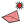 | Solar Envelope Use this component to generate a solar envelope for a given test surface, set of solar vectors, and context geometry that you want to ensure solar access to |
| 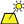 | Solar Envelope Basic Use this component to generate a solar envelope for a closed boundary curve with minimum inputs |
| Solar Fan Use this component to generate a solar fan for a given test surface and set of solar vectors | |
| Solar Fan Basic Use this component to generate a solar fan with minimumal input data | |
| Steady State Surface Temperature Use this component to calculate a steady state interior/exterior surface temperature from given given indoor/outdoor air temperatures and surface U-Values | |
| Sunlight Hours Analysis This component calculates the number of hours of direct sunlight received by input geometry using sun vectors from the sunPath component | |
| Surface View Analysis Use this component to calculate view factors from a point or plane to a set of surfaces | |
| View Analysis Use this component to evaluate the visibility of input _geometry from a set of key viewing points | |
| View From Sun Use this component to open a new viewport in Rhino that shows the view from the sun | |
| view Rose Use this component to see the area visible from a given viewpoint across a 2D plane of vision | |
| Window Downdraft Use this component to compute the floor-level downdraft air temperature and velocity at a given set of points that are located close to a cold surface such as a window |
1 | AnalyzeWeatherData
| Adaptive Comfort Calculator Use this component to calculate the adaptive comfort for a given set of input conditions | |
| Analysis Period Use this component to set an analysis period, which can be used as input for a variety of other Ladybug and Honeybee components | |
| Ankle Draft Discomfort Use this component to calculate discomfort from cold drafts at ankle-level | |
| Average Data Use this component to select the data out of an annual hourly data stream (from the importEPW component) using the "Analysis Period" component | |
| Branch Data Use this component to convert any list of annual data into a data tree branched by day of the year, month of the year, or hour of the day | |
| CDD HDD Calculates heating and cooling degree-days | |
| CDH HDH Calculates heating and cooling degree-hours | |
| Clothing Function Use this component to generate a list of values representing a clothing schedule based on outdoor air temperature | |
| Draft Discomfort Use this component to calculate discomfort from cold drafts on the back of the neck (arguably the most sensitive part of the human body to cold drafts) | |
| Humidity Ratio Calculator Calculates the humidity ratio from the ladybug weather file import parameters Conversion formulas are taken from the following publications: Vaisala | |
| Outdoor Comfort Calculator Use this component to calculate the Universal Thermal Climate Index (UTCI) for a set of input climate conditions | |
| PMV Comfort Calculator Use this component to calculate comfort metrics of Predicted Mean Vote (PMV), the Percent of People Dissatisfied (PPD), and the Standard Effective Temperature (SET) for a set of climate conditions and occupant behavior/clothing | |
| Radiant Asymmetry Discomfort Use this component to calculate discomfort from radiant assymetry | |
| Separate data Use this component to separate the text strings from the numbers in the climate data streams output from the Import EPW component | |
| Thermal Comfort Indices Use this component to calculate various thermal comfort indices: ------ - HI (Heat Index) - humidex (humidity index) - DI (Discomfort Index) - WCI (Wind Chill Index) - WCT (Wind Chill Temperature) - WBGT (Wet-Bulb Globe Temperature) indoors - WBGT (Wet-Bulb Globe Temperature) outdoors - TE (Effective Temperature) - AT (Apparent Temperature) - TS (Thermal Sensation) - ASV (Actual Sensation Vote) - MRT (Mean Radiant Temperature) - Iclp (Predicted Insulation Index Of Clothing) - HR (Heart Rate) - DhRa (Dehydration Risk) - PET (Physiological Equivalent Temperature) - THI (Temperature Humidity Index) - PHS (Predicted Heat Strain) | |
| Wet Bulb Temp Use this component to calculate Wet Bulb Temperature and Dew Point Temperature | |
| Wind Speed Calculator Use this component to calculate wind speed at a specific height for a given terrain type |
2 | VisualizeWeatherData
| 3D Chart Use this component to make a 3D chart in the Rhino scene of any climate data or hourly simulation data | |
| Adaptive Comfort Chart Use this component to calculate the adaptive comfort for a given set of input conditions | |
| Colored Sky Visualizer Use this component to visualize a Perez sky as a colored mesh in the Rhino scene using the weather file location, a time and date, and an estimate of turbidity (or amount of particulates in the atmosphere | |
| Gen Cumulative Sky Mtx This component uses Radiance's gendaymtx function to calculate the sky's radiation for each hour of the year | |
| Import Ground Temp Use this component to visualise ground temperatures throughout the year at specific depths | |
| Monthly Bar Chart Use this component to make a bar chart in the Rhino scene of any monhtly or avrMonthyPerHour climate data or simulation data | |
| Outdoor Solar Temperature Adjustor Use this component to adjust an existing Mean Radiant Temperature for shortwave solar radiation | |
| Psychrometric Chart Use this component to draw a psychrometric chart in the Rhino scene and evaluate a set of temperatures and humidity ratios in terms of indoor comfort | |
| Radiation Calla Dome Use this component to draw Radiation Calla Dome, which shows you how radiation would fall on an object from all directions for a given sky | |
| Radiation Rose Use this component to make a radiation rose in the Rhino scene | |
| select Sky Mtx Use this component to select a specific sky matrix (skyMxt) for an hour of the year or for an analysis period | |
| Sky Dome This component allows you to visualize a selected sky matrix from the selectSkyMxt component in order to see the patches of the sky dome where radiation is coming from | |
| Sun Path Use this component to make a 3D sun-path (aka | |
| Wind Boundary Profile Use this component to visualize a wind profile curve for a given terrain type | |
| Wind Rose Use this component to make a windRose in the Rhino scene |
4 | Renewables
| Cold Water Temperature Use this component to calculate the cold (inlet, mains) water temperature, if water pipes are burried undeground | |
| Commercial Public Apartment Hot Water Use this component to calculate domestic hot water consumption for each hour during a year, for Commercial, Public and Apartment buildings | |
| DC to AC derate factor Use this component to calculate overall DC to AC derate factor for Photovoltaics Surface's "DCtoACderateFactor_" input | |
| Photovoltaics Module Use this component to define the Photovoltaics crystalline silicon (c-Si) module settings | |
| Photovoltaics Performance Metrics Use this component to calculate various Photovoltaics performance metrics | |
| Photovoltaics Surface Use this component to calculate amount of electrical energy that can be produced by a surface if a certain percentage of it is covered with Photovoltaics | |
| PV SWH System Size Use this component to generate the PVsurface or SWHsurface for "Photovoltaics surface" or "Solar Water Heating surface" components, based on initial PV or SWH system sizes | |
| Residential Hot Water Use this component to calculate domestic hot water consumption for each hour during a year, for a single family household (house) | |
| Simplified Photovoltaics Module Use this component to define simplified Photovoltaics crystalline silicon (c-Si) module settings | |
| Solar Water Heating Performance Metrics Use this component to calculate various Solar water heating performance metrics | |
| Solar Water Heating Surface Use this component to calculate amount of thermal energy that can be produced by a surface if a certain percentage of it is covered with Solar water heating liquid collectors | |
| Solar Water Heating System Detailed Use this component to define a detailed Solar water heating system settings | |
| Solar Water Heating System Use this component to define Solar water heating system settings | |
| Sunpath Shading This component calculates the shading of: - Photovoltaic modules - Solar Water Heating collectors - any other purpose (shading of points) | |
| Tilt And Orientation Factor This component calculates the Optimal Tilt, Optimal Orientation and TOF (Tilt and Orientation Factor) for PV modules or Solar water heating collectors |
0 | Ladybug
| Construct Location Use this component if you do not have an | |
| Create LB Header Use this component to generates a Ladybug Header that can be combined with any raw data in order to format it for use with the Ladybug/Honeybee components | |
| Decompose Location Use this component to separate and exctract the information in the 'location' output of the importEPW or constructLocation component | |
| download EPW Weather File Use this component to open the epwmap page in your default web browser and download an | |
| Import epw Use this component to import lists of weather data into Grasshopper from a standard | |
| Import Location Use this component to import location data from a standard | |
| Import stat Use this component to import climate data found in the | |
| Ladybug This component carries all of Ladybug's main classes | |
| Open EPW And STAT Weather Files Use this component to automatically download a | |
| Open EPW Weather File Use this component to open an | |
| Open STAT File Use this component to open a | |
| Update File Use this component to update ladybug tools components in an old file |
6 | Developers
| Export Ladybug Code Developers of Ladybug and Honeybee can use this component to export Ladybug/Honeybee user objects and source code that they create to the Github folder on their computer | |
| Update Ladybug Code Developers and Beta Testers of new Ladybug components can use this component to remove old Ladybug components, add new Ladybug components, and update existing Ladybug components from a synced Github folder on their computer |
Util
| Arc Divide (ArcDivide) Divides a spline curve into tangent arc segments. | |
| Deconstruct Wireframe (DeWire) Organizes a wireframe curve structure into nodes and centerlines | |
| Flatness Check (Flat) Checks the flatness of a quad panel. | |
| Mesh Edges (with Tolerance) (MshEdge) Finds naked mesh edges and edges between faces greater than a specified angle. | |
| Mesh Reduce (MshReduce) Reduce mesh polygons to simplify. | |
| Patch Surface (Patch) Returns a patch surface using a list of edge curves. (Rhino 5 only) | |
| Random Split List (RandomSplit) Randomly splits a list into two lists. | |
| Rebuild Surface (RebuildSrf) Rebuilds an untrimmed surface using U and V parameters. | |
| Relative Coordinates (Relative) Returns coordinates of a point relative to a plane. | |
| Reverse Surface Direction (RevSrf) Reverse the UV directions of a surface. | |
| Sort Duplicate Breps (Sort Brep) Sort a list of Breps based on duplicates. | |
| Sort Duplicate Curves (Sort Crv) Sort a list of curves based on duplicates using document tolerances. | |
| Sort Duplicate Points (Sort Pts) Sort a list of points based on duplicates. | |
| Sort Duplicate Values (Sort Val) Sort a list of numbers or strings based on duplicates. | |
| Unroll Brep (Unroll) Unroll a brep or surface. | |
| RTree Closest Point (RTree CP) Find the closest point in an RTree from search points | |
| Create RTree (RTree) Creates a searchable RTree | |
| RTree Points in Range (RTree Range) Find points in an RTree within range of search points |
Data
| Create Chart (Chart) Creates a saveable Winform chart. | |
| Create Data Grid (DataGrid) Creates a Data Grid view of data. Data can be saved as CSV file. | |
| Create DataSet (DataSet) Create a DataSet | |
| Create DataTable (DataTable) Create a DataTable | |
| Create CSV (CSV) Create a CSV string | |
| Read CSV (CSV) Read a CSV string. (Comma Separated Value) | |
| Convert JSON to XML (JSON-XML) Converts a JSON string to XML. | |
| Create XML (XML) Create XML from a DataSet | |
| Read XML by Tag (XML) Read XML data by tag. | |
| Convert XML to JSON (XML-JSON) Converts a XML string to JSON | |
| Create JSON (JSON) Create JSON from a DataSet |
Panels
| Diamond Panels (Diamond) Creates diamond panels on a surface. | |
| Diamond Grid (DGrid) Creates a diamond corner point grid on a surface. | |
| Hexagon Cells (Hex) Creates hexagonal cells on surface. | |
| Quad Panels (Quads) Creates quadrangular panels on a surface | |
| Quad Grid (QGrid) Creates a quad corner point grid on a surface. | |
| Random Quad Panels (QuadRand) Creates randomly staggered quad panels on a surface | |
| Staggered Quad Panels (QuadStag) Creates staggered quad panels on a surface. | |
| Skewed Quads (SQuads) Creates 'skewed' quadrangular panels on a surface | |
| Triangular Panels A (TriA) Creates triangular panels on a surface. | |
| Triangle Panels B (TriB) Creates triangular panels on a surface. | |
| Triangle Panels C (TriC) Creates triangular panels on a surface. |
Machine Learning
| Gaussian Mixture (GaussianMix) Solver for Gaussian Mixture models. | |
| Hidden Markov Model (HiddenMark) Solver for Hidden Markov Model problems. | |
| K-Means Clustering (K-Means) Solver for K-Means Clustering. | |
| Linear Regression (LineReg) Solver for linear regression problems. | |
| Logistic Regression (LogReg) Solver for Logistic regression problems. | |
| Multivariate Linear Regression (MultiLineReg) Solver for multivariate linear regression problems. | |
| Naive Bayes Classification (NaiveBayes) Solver for Naive Bayes classification. | |
| Neural Network (Neural) Solver for Neural Network problems. | |
| Restricted Boltzmann Machine (ResBoltz) Solver for Restricted Boltzmann machines. | |
| Nonlinear Regression (NonlineReg) Solver for nonlinear regression problems using Sequential Minimal Optimization. |
Workflow
| Object Bake (Bake) Bake objects to a layer in the active Rhino document. | |
| Create Layers (Layer) Create a list of layers in Rhino. | |
| Excel Reader (ExcelRead) Reads an open Excel file. | |
| Excel Write (ExcelWrite) Write to an open Excel file. | |
| Launch Application (LaunchApp) Launch an external application or file | |
| Layer Information (Layer Info) Get layer information from the current document. | |
| Layer Reference (Layer Ref) Reference geometry on layers with GUIDs and Names. | |
| Rhino Command (RhCOM) Sends a command to the Rhino command-line. | |
| Object Save (Save) Saves geometry to a specified file location. |
Structure
| Braced Grid 1-D Structure (GridBraced1D) Creates a 1-Direction braced grid structure on a surface. | |
| Braced Grid 2-D Structure (GridBraced2D) Creates a 2-Direction braced grid structure on a surface. | |
| Diagrid Structure (Diagrid) Creates a diagrid structure on a surface. | |
| Grid Structure (Grid) Creates a simple grid structure on a surface. | |
| Hexagonal Structure (Hex) Creates a hexagonal structure on a surface. | |
| Space Truss Structure 1 (SpaceTruss 1) Creates a space truss structure on a surface. | |
| Space Truss Structure 2 (SpaceTruss 2) Creates a space truss structure using two driver surfaces | |
| 2D Truss (Truss) Creates a 2-D Truss using a set of edge curves. |
Generate
| Constant Quad Subdivide (ConstQuad) Subdivides a triangular panel into quadrangular cells | |
| Panel Frame (Frame) Creates an offset frame using a panel. | |
| Subdivide Quad (QuadSub) Subdivides a quad into self-similar cells. | |
| Subdivide Triangle (TriSub) Subdivides a triangle into self-similar cells. |
Subdivision
| Frame+0 (m+Frame+0) Replaces selected faces of a mesh or the interior of a curve with a frame around the edge by evaluating a point from the face's vertex to its center, creating 0 new points along the edge. | |
| Frame+1 (m+Frame+1) Replaces selected faces of a mesh or the interior of a curve with a frame around the edge by evaluating points from the face's vertex and edge midpoint to its center, creating 1 new points along the edge | |
| Frame+2 (m+Frame+2) Replaces selected faces of a mesh or the interior of a curve with a frame around the edge by evaluating a point from the face's vertex to its center, creating 2 new points along the edge. | |
| Frame+3 (m+Frame+3) Replaces selected faces of a mesh or the interior of a curve with a frame around the edge by evaluating points from the face's vertex and edge midpoint to its center, creating 3 new points along the edge | |
| T+3 (m+T+3) Replaces selected faces of a mesh or the interior of a curve with a frame around the edge by evaluating a point from the face's vertex to its center, creating 3 new points along the edge and removing the face's vertex | |
| Tri Frame+1 (m+Tri Frame+1) Replaces selected faces of a mesh or the interior of a curve with a frame around the edge by evaluating a point from the face's vertex to its center, creating 1 new points along the edge. | |
| Tri Frame+2 (m+Tri Frame+2) Replaces selected faces of a mesh or the interior of a curve with a frame around the edge by evaluating a point from the face's vertex to its center, creating 2 new points along the edge and removing the existing face's vertex | |
| Tri Frame+3 (m+Tri Frame+3) Replaces selected faces of a mesh or the interior of a curve with a frame around the edge by evaluating points from the face's vertex and edge midpoint to its center, creating 3 new points along the edge | |
| Aperture+0 (m+Aperture+0) Replaces selected faces of a mesh or the interior of a curve with a frame around the edge by evaluating points from the points along face's edges to its center, creating 0 new points along the edge. | |
| Aperture+2 (m+Aperture+2) Replaces selected faces of a mesh or the interior of a curve with a frame around the edge by evaluating points from points along the face's edge to its center, creating 2 new points along the edge and removing the face's vertex | |
| Aperture+3 (m+Aperture+3) Replaces selected faces of a mesh or the interior of a curve with a frame around the edge by evaluating points from points along the face's edge to its center, creating 3 new points along the edge and removing the face's vertex | |
| Center+1 (m+Center+1) Replaces selected faces of a mesh or the interior of a curve with a frame around the edge by creating 1 new points along the edge. | |
| Center+3 (m+Center+3) Replaces selected faces of a mesh or the interior of a curve with a frame around the edge by creating 3 new points along the edge and removes the face's vertex. | |
| Dense+1 (m+Dense+1) Replaces selected faces of a mesh or the interior of a curve with a frame around the edge by adding a vertex at the face center and creating 1 new point along the edge. | |
| Fan+2 (m+Fan+2) Replaces selected faces of a mesh or the interior of a curve with a frame around the edge by creating 2 new points along the edge and one at its center, removing the face's vertex. | |
| Fan+3 (m+Fan+3) Replaces selected faces of a mesh or the interior of a curve with a frame around the edge by creating 3 new points along the edge and removing the face's vertex. | |
| Pinwheel+2 (m+Pinwheel+2) Replaces selected faces of a mesh or the interior of a curve with a frame around the edge by creating 2 new points along the edge and removing the face's vertex. | |
| Snub+0 (m+Snub+0) Replaces selected faces of a mesh or the interior of a curve with a frame around the edge by evaluating a point from the face's edge midpoint to its center, creating 0 new points along the edge. | |
| Snub+1 (m+Snub+1) Replaces selected faces of a mesh or the interior of a curve with a frame around the edge by evaluating a point from the face's edge midpoint to its center, creating 1 new points along the edge. | |
| Snub+2 (m+Snub+2) Replaces selected faces of a mesh or the interior of a curve with a frame around the edge by evaluating a point from the face's edge midpoint to its center, creating 2 new points along the edge and removing the face's vertex | |
| Snub+3 (m+Snub+3) Replaces selected faces of a mesh or the interior of a curve with a frame around the edge by evaluating a point from the face's edge midpoint to its center, creating 3 new points along the edge and removing the face's vertex | |
| Stellate+0 (m+Stellate+0) Replaces selected faces of a mesh or the interior of a curve with a frame around the edge by adding a vertex at the face center and creating 0 new points along the edge. | |
| X+2 (m+X+2) Replaces selected faces of a mesh or the interior of a curve with a frame around the edge by evaluating a point from the face's edge midpoint to its center, creating 2 new points along the edge. |
Analyze
| Connected Edge Angles (m+V-E Ang) Returns the angle at each vertex normal of a mesh tested against the vector along each connected edge. | |
| Connected Edge Lengths (m+VEL) Returns the cumulative length of each edge connected to a given vertex. | |
| Connected Faces (m+ConFace) Returns the number of faces connected to each face. | |
| Connected Vertex Normal Angle (m+V-V Ang) Returns the angle at each vertex normal of a mesh tested against the connected vertex normals. | |
| Edge Lengths (m+EdgeLen) Returns the length for each edge of the mesh. | |
| Edge Shared Face Angles (m+EdgeAng) Returns the angle of the faces connected to each edge. | |
| Extract Edges (m+Edges) Returns the edge lines and topology vertices in the topology order of the mesh. | |
| Face Edge Lengths (m+FEL) Returns the cumulative edge length of each face of a mesh. | |
| Face Normal Direction (m+FaceDir) Returns the angle at each face normal of a mesh tested against a vector. | |
| Face to Face Angles (m+F-F Ang) Returns the angle at each face normal of a mesh tested against its connected face normals. | |
| Face Vertex Angles (m+F-V Ang) Returns the angle at each face normal of a mesh tested the normals at it's vertices. | |
| Mesh Face Area (m+FaceArea) Returns the area of each face of a mesh. | |
| Topology Vertices (m+Vert) Returns the mesh vertices per earch topology vertex of the mesh. | |
| Unitize Mesh Distances (m+Unit) Returns a unitized value for each specifed component of a mesh, vertex, face center, or edge midpoint based on its distance to the closest sample index point relative to the furthest point from all sample points | |
| Valence (m+Valence) Returns the valence or number of connected vertices to a given vertex. | |
| Vertex Face Angles (m+V-F Ang) Returns the angle at each vertex normal of a mesh tested against the connected vertex normals. | |
| Vertex Normal Direction (m+VecDir) Returns the angle at each vertex normal of a mesh tested against a vector. |
Volume
| Batwing (m+Batwing) Creates a volumetric mesh from either a single mesh face and depth or between two parallel meshes of idential construction based on the topology of the Batwing adapted with parametric inputs to the geometric proportions within the bounds of each offset pair of mesh faces | |
| Box (m+Box) Creates a mesh which spans two meshes bridging them from either the vertex or edge center | |
| CLP (m+CLP) Creates a volumetric mesh from either a single mesh face and depth or between two parallel meshes of idential construction based on the topology of the Schwarz CLP adapted with parametric inputs to the geometric proportions within the bounds of each offset pair of mesh faces | |
| Cross (m+Cross) Creates a mesh which spans two meshes bridging them from the face center and connecting faces at either the vertex point or edge centers | |
| D (m+D) Creates a volumetric mesh from either a single mesh face and depth or between two parallel meshes of idential construction based on the topology of the Schwarz D adapted with parametric inputs to the geometric proportions within the bounds of each offset pair of mesh faces | |
| F-RD (m+F-RD) Creates a volumetric mesh from either a single mesh face and depth or between two parallel meshes of idential construction based on the topology of the Schoen F-RD adapted with parametric inputs to the geometric proportions within the bounds of each offset pair of mesh faces | |
| F-RDr (m+F-RDr) Creates a volumetric mesh from either a single mesh face and depth or between two parallel meshes of idential construction based on the topology of the Schoen F-RDr adapted with parametric inputs to the geometric proportions within the bounds of each offset pair of mesh faces | |
| F-RDr2 (m+F-RDr2) Creates a volumetric mesh from either a single mesh face and depth or between two parallel meshes of idential construction based on the topology of the Schoen F-RDr with higher vertex count, adapted with parametric inputs to the geometric proportions within the bounds of each offset pair of mesh faces | |
| I-WP (m+I-WP) Creates a volumetric mesh from either a single mesh face and depth or between two parallel meshes of idential construction based on the topology of the Schoen I-WP adapted with parametric inputs to the geometric proportions within the bounds of each offset pair of mesh faces | |
| I-WPr (m+I-WPr) Creates a volumetric mesh from either a single mesh face and depth or between two parallel meshes of idential construction based on the topology of the Schoen I-WPr adapted with parametric inputs to the geometric proportions within the bounds of each offset pair of mesh faces | |
| Nevious (m+Nevious) Creates a volumetric mesh from either a single mesh face and depth or between two parallel meshes of idential construction based on the topology of the Neovious adapted with parametric inputs to the geometric proportions within the bounds of each offset pair of mesh faces | |
| P (m+P) Creates a volumetric mesh from either a single mesh face and depth or between two parallel meshes of idential construction based on the topology of the Schwarz P adapted with parametric inputs to the geometric proportions within the bounds of each offset pair of mesh faces | |
| Pa (m+Pa) Creates a volumetric mesh from either a single mesh face and depth or between two parallel meshes of idential construction based on the topology of the Schwarz Pa adapted with parametric inputs to the geometric proportions within the bounds of each offset pair of mesh faces | |
| SS (m+SS) Creates a volumetric mesh from either a single mesh face and depth or between two parallel meshes of idential construction based on the topology of the SS adapted with parametric inputs to the geometric proportions within the bounds of each offset pair of mesh faces | |
| Switch (m+Switch) Creates a mesh which spans two meshes bridging them from either the vertex or edge center | |
| X&T (m+X&T) Creates a volumetric mesh from either a single mesh face and depth or between two parallel meshes of idential construction bridging the vertices to the face center between two mesh faces |
Smooth
| Weighted Catmull Clark Subdivision (m+Catmull Clark) Based off of the implementation of Weaverbird's subdivision, this implementation of Catmull Clark Subdivision introduced the option to modify the weight of smoothing or displacement from origin, of the face, edge, and vertex based vertices | |
| Catmull Clark nGon Subdivision (m+CatmullClark) Applies Catmull Clark Subdivision to a list of closed polylines which are treated as the faces and vertices of a nGon mesh. | |
| Doo Sabin Subdivision (m+Doo Sabin) Applies Doo Sabin Subdivision to a list of closed polylines which are treated as the faces and vertices of a nGon mesh. | |
| Expansion Subdivision (m+Expansion) Applies Expansion Subdivision to a list of closed polylines which are treated as the faces and vertices of a nGon mesh | |
| Face Center Subdivision (m+FaceCenter) Applies Face Center Subdivision to a list of closed polylines which are treated as the faces and vertices of a nGon mesh. | |
| Mid Edge Subdivision (m+MidEdge) Applies Mid Edge Subdivision to a list of closed polylines which are treated as the faces and vertices of a nGon mesh. | |
| Modified Kobbelt Subdivision (m+ModKobbelt) Applies a modified version of Kobbelt Subdivision which creates new quad faces from a list of closed polylines which are treated as the faces and vertices of a nGon mesh. | |
| Root 3 Subdivision (m+Root3) Applies Root 3 Subdivision to a list of closed polylines which are treated as the faces and vertices of a nGon mesh. | |
| Weighted Butterfly Subdivision (m+Butterfly) Implements the basic form of Butterfly subdivision which maintains the original meshes vertex locations. This method does requires a closed mesh volume with only triangular faces. | |
| Weighted Loop Subdivision (m+Loop) Based off of the implementation of Weaverbird's subdivision, this implementation of Loop Subdivision introduced the option to modify the weight of smoothing or displacement from origin, of the edge and vertex based vertices | |
| Weighted Root 3 Subdivision (m+Root 3) An implementation of Root 3 Subdivision, this method follows the model established in weaverbird for resolving edge conditions |
Map
| Baycentric Mesh Morph (m+Map Mesh to Mesh) Uses Barycentric Mapping to morph meshes from reference boundaries to each face of a target mesh, or pair of meshes with identical topologies. | |
| Map Curve to Curve (m+Map Crv to Crv) Uses Barycentric Mapping to morph curves from a reference boundary polyline to a target polyline of the same topology. | |
| Map Curves to Mesh (m+Map Crv to Mesh) Uses Barycentric Mapping to morph curves from reference boundaries to each face of a target mesh, or pair of meshes with identical topologies. | |
| Map Edge Values (m+Map Edge) Maps and averages unitized values cooresponding to each edge of a mesh to its other constituent elements. | |
| Map Face Values (m+Map Face) Maps and averages unitized values cooresponding to each face of a mesh to its other constituent elements. | |
| Map Mesh to Curves (m+Map Mesh to Crv) Uses Barycentric Mapping to morph meshes from a reference boundary polyline to a target polyline of the same topology. | |
| Map Points to Curve (m+Map Pt to Crv) Uses Barycentric Mapping to morph points from a reference boundary polyline to a target polyline of the same topology. | |
| Map Points to Mesh (m+Map Pt to Mesh) Uses Barycentric Mapping to morph points from reference boundaries to each face of a target mesh, or pair of meshes with identical topologies. | |
| Map Vertex Values (m+Map Vert) Maps and averages unitized values cooresponding to each vertex of a mesh to its other constituent elements. | |
| Mesh Twisted Box (m+Twisted Box) Creates twisted boxes which either span or project off of quad mesh faces creating 8 points which can be used to define a twisted box | |
| Wrap Data (WrapData) Converts a list of data into an integer indexed dictionary which is wrapped into a single object |
Make
| Cairo Tiling (m+Cairo) Applies a Mesh to a surface based on the Cairo Tiling tesselation covering its domain, recognizing closure in both the U and V directions when the patterning allows. | |
| Diamond Tiling (m+Diamond) Applies a Mesh to a surface based on Diamond Tiling tesselation covering its domain, recognizing closure in both the U and V directions when the patterning allows. | |
| Elongated Triangle Tiling (m+ElongTri) Applies a Mesh to a surface based on the Elongated Triangle tesselation covering its domain, recognizing closure in both the U and V directions when the patterning allows. | |
| Fill Mesh Holes (m+Fill) Creates a simple fan mesh from an input curve with options for introducing vertex colors | |
| Mesh Loft (m+Loft) Creates a mesh from the control points of input curves with multiple methods for defining topology | |
| ngon Mesh (m+ngon Mesh) This experimental component creates a topology map for mesh comprised of faces of with a vertex count of 3 or higher | |
| Patterned Triangulation (m+TriPat) Applies a boolean pattern based Triangular Mesh to a surface covering its domain, recognizing closure in both the U and V directions when the patterning allows. | |
| Regular Triangulation (m+RegTriGrid) Applies a Regular Triangular Mesh to a surface covering its domain, recognizing closure in both the U and V directions when the patterning allows. | |
| Rhombitrihexagonal Tiling (m+Rhombitrihexagonal) Applies a Mesh to a surface based on the Rhombitrihexagonal tesselation covering its domain, recognizing closure in both the U and V directions when the patterning allows | |
| Snub Square Tiling (m+SnubSqr) Applies a Mesh to a surface based on the Snubbed Square tesselation covering its domain, recognizing closure in both the U and V directions when the patterning allows. | |
| Truncated Square Tiling (m+TruncatedSqr) Applies a Mesh to a surface based on the Truncated Square tesselation covering its domain, recognizing closure in both the U and V directions when the patterning allows |
Edit
| Mesh Caps (m+Caps) Caps all naked edges in a mesh by introducing a new point at the averaged volumetric center fanning about it. | |
| Explode Unwelded (m+ExpUnweld) Implements Explode Unwelded. "Explode the mesh into submeshes where a submesh is a collection of faces that are contained within a closed loop of "unwelded" edges." | |
| Mesh Explode (m+Explode) Explodes each face of a mesh into a new single faced mesh which maintains vertex colors and whose normals can either be rebuilt or retain the existing vertex normals. | |
| Mesh Extend (m+Extend) Extends all naked edges of a mesh by a given distance by adding a new row of mesh faces | |
| Mesh Offset & Extrude (m+Offset/Extrude) Takes a mesh and offsets along each vertex normal or aligned with input vectors with independent options for closing the top, bottom and edges as well as offseting in both directions. | |
| Offset Edges (m+Edges) Takes edge of a mesh and offsets it along the vertex normal or extrudes along a input vector. Output can be toggled between a single mesh or individual meshes per face. | |
| Span & Bridge (m+Span & Bridge) Removes multiple pairs of mesh faces at given indices from either one or two meshes and bridges the resulting naked edges | |
| Unweld & Explode (m+UWX) Unwelds a mesh at the user specified angle and explodes it into new meshes at unwelded edges. |
Select
| Face Bands (m+Bands) Indexes Mesh Faces based on their topological distance from naked edges or selected points. | |
| Proximity Vertex Selection (m+ProxSel) Selects vertices based on their closest point distance to sample geometries. | |
| Select by Topological Distance (m+TopoSel) Returns a series of unitized values per vertex based on their topological edge's cumulative physical distance, divided by a user specified range for selection. | |
| Select by Vertex Angle (m+SelAng) Selects vertices based on an angle tolerance, determined by testing the angle between all edges shared by a vertex about a face and sums the value. | |
| Select Mesh Edge (m+SelEdge) Allows for the selection of Grasshopper or Rhino Mesh Edges. Returning the Indices, Mid Point, and Representational Line at each selection. ( | |
| Select Mesh Faces (m+SelFace) Allows for the selection of Grasshopper or Rhino Mesh Faces. Returning the Indices, Face Center, Face, and Face Normal at each selection. ( | |
| Select Mesh Vertices (m+SelVert) Allows for the selection of Grasshopper or Rhino Mesh Vertices. Returning the Indices, Point, and Normal at each selection. ( | |
| Vertex Rings (m+Rings) Indexes Vertices based on their topological distance from naked edges or selected points. |
Effects
| Hair (m+Hair) Creates an advanced hair effect from a tapered extrusion which can rotate within a pore relief on each face of the mesh outwards along the direction of the face normal | |
| Polyp (m+Polyp) Creates an advanced polyp effect from the edge of each face of the mesh outwards along the direction of the face normal | |
| Pore (m+Pore) Creates a pore effect with a flat edge and raised facet on each face of the mesh outwards along the direction of the face normal | |
| Antisnub (m+Antisnub) Creates an advanced face effect by creating the antiprism extrusion from each face and snubbing the top corner vertex of each new face on each face of the original mesh outwards along the direction of the face normal | |
| Node (m+Node) Creates an advanced face effect stellating the face and creating an optional directional pore from each new face on each face of the original mesh outwards along the direction of the face normal | |
| Peel (m+Peel) Creates an advanced peeling effect rotating subdivided faes outwards about each edge of each face of the mesh outwards along the direction of the face normal | |
| Pinch (m+Pinch) Creates an advanced pinching moving points at the vertex and edge centers independently towards the center of each face of the mesh outwards along the direction of the face normal |
Modify
| Align Mesh Vertices (m+AlignVert) Collapses vertex positions based on their proximity and the sequence in which they are toplogically ordered. | |
| Calculate Vertex Normals (m+VertNorm) Rebuilds vertex normals with a full range of options. | |
| Compute Face Normals (m+FaceNorm) Rebuilds the Face Normals for a mesh with a full range of options. | |
| Mirror Face Orientation (m+MFO) Mirrors selected face topology. | |
| Reverse Face Normal (m+RFN) Reverses selected face normals | |
| Shift Face Orientation (m+SFO) Shifts selected face topology, similar to rotating the face. | |
| Triangulate Mesh (m+Tri) Triangulates the quad faces of mesh based on natural direction, shortest/ longest length, or greatest or smallest area. |
Weave
| Continuum (m+Continuum) Creates a series of connections perpendicular and parallel to each meshes face creating a loop from front face to back face. Inspired by the work of Erwin Hauer. ( | |
| Criss Cross (m+CrissCross) Creates a series of connections perpendicular and parallel to each meshes face bridging between every other edge. ( | |
| Link (m+Link) Creates a series of radially arrayed links from each mesh face edge about each face center and back to the same edge | |
| Net (m+Net) Creates a series of radially arrayed interlocking ribbons from each mesh face edge about each face center | |
| Thatch (m+Thatch) Converts each face into a quad set of thatch woven meshes | |
| Weave (m+Weave) Converts each face of a mesh into two interwoven meshes |
Show
| Highlight (m+Highlight) Applies a color to all naked edge or non naked vertex points in a mesh | |
| Label Edge (m+Edges) Creates point lists of points at each mesh edge at its midpoint | |
| Label Face (m+Face) Creates point lists of center points of each mesh face at its center | |
| Label Topo Vert (m+TopoVert) Creates point lists of the meshes topology vertex points offset on the face to remove overlap | |
| Label Vertex Indices (m+Index) Creates point lists of vertex sequence of each face offset on the face to remove overlap | |
| Label Vertex (m+Vertex) Creates point lists of the meshes vertex points offset on the face to remove overlap |
Loop
| Branch (m+Branch) Recursively branches each mesh face which is parallel to the original mesh faces into a set of new subdivided quad extrusions. | |
| Crumple (m+Crumple) Recursively stellates each mesh face into a new mesh offset along the face normal. | |
| Crystalize (m+Crystalize) Recursively decomposes each mesh face into a new truncated open mesh pyramid offset along the face normal | |
| Expand (m+Expand) Recursively decomposes each mesh face into a new mesh offset along the face normal connected only by the corner vertices. | |
| Facet (m+Facet) Recursively stellates a new face made from the midpoints of the edge lines. |
Primitive
| Mesh Pipe (MPipe) Create a mesh pipe. | |
| Mesh Sweep (MSweep) Create a mesh sweep with one rail curve. |
Utility
| Best Practicizer (BestPracticizer) Takes a selected group and inserts input and output params at both edges for any data that goes outside the group. | |
| Expire Object (Expire) Expire / recompute a component or param | |
| Get List Data (ListData) Gets data from the Value List, Item Selector, etc components | |
| Get Param Data (ParamData) Get the set of data in a given param | |
| Get Slider Properties (SliderInfo) Gets the properties of the slider | |
| Highlight Objects (Hilite) Highlight objects by adding them a new group | |
| Instantiate Object (Create) Attempts to create an instance of an object on the canvas | |
| Label Groups (LblGrp) Auto-create a scribble in the upper left corner of a group that matches the group's name | |
| Relative Path (RelPath) Appends the directory this definition is saved in to a file path. Auto-converts the contents of a text panel containing an absolute path | |
| Get Runtime Messages (Msgs) Gets errors and warnings from selected objects | |
| Set Object Value (SetObj) Tries to set the value of an object. What value it sets varies by type - it sets a slider's numeric value, a panel or scribble's text contents, etc | |
| SwapParamType (SwapParam) Switch the type of one param object to another | |
| Unwrap List (Unwrap) Converts a data wrapper into a list | |
| Wrap List (Wrap) Converts a list of data into a single object |
Attributes
| Bake Object (Bake) Programmatically bake the geometry of specified objects | |
| Control Wire Display (WireDisplay) Control the display of wires for parameters and components. | |
| Enable/Disable Object (OnOff) Programmatically enable/disable solving for specified objects | |
| Hide/Show Object Preview (HideShow) Programmatically control the preview visibility of specified objects | |
| Move Object (Move) Reposition an object on the GH canvas | |
| Rename Object (Rename) Programmatically set the nickname of specified objects | |
| Set Group Properties (SetGroup) Set the name, color, and style of a group. | |
| Set Panel Properties (SetPanel) Modify the properties of a panel object | |
| Set Scribble Properties (SetScribble) Set the text, size, and font of a Scribble. | |
| Set Sketch Modify the form of an existing sketch object. | |
| Set Slider Properties (Set Slider) Modify the properties of a slider object | |
| Wire Display Toggle (WireToggle) Switch all document wires between hidden and faint. |
Object Retrieval
| Get Connected Objects (Connected) Gets all components and params connected to this component | |
| Get Groups (Groups) Get all groups in the document | |
| Get Objects in Group (ObjFromGroup) Gets all components and params in the same group as this component (or the specified group if supplied) | |
| Get Objects of Same Library (SameLib) Gets all components and params that are from the same library as the attached. | |
| Get Objects of Same Type (SameType) Gets all components and params that are of the same type as the attached. | |
| Get Scribbles (Scribbles) Get all Scribbles in the document | |
| Get Selected Objects (SelObj) Get the objects currently selected on the canvas | |
| Get Object By Nickname (ObjByNN) Retrieves all objects matching the specified nickname. Wildcard patterns accepted. |
Batch
| Batch Animator (BAnim) Saves a screenshot of every state of the model in the batch to a folder. | |
| BatchDriver Run a batch analysis across a range of variable parameters | |
| Batch Variable from List (BVarList) Converts a list of values such as a series or range into a variable input to the Batch Driver | |
| BatchSlider (BSlider) Converts a standard GH Slider into a variable input to the Batch Driver |
Document
| Assembly Info Gets information about an assembly | |
| Document Info (DocInfo) Get information about the GH document and its components | |
| Object Info Gets basic information from any DocumentObject |
FESystem
| FEA System Finite Element System [frames and shells] | |
| Graph structure Connectivity Graph of structural elements | |
| FE Point Load (FEPointLoad) Point Load | |
| FE Point Supports (FEPointSupports) Point Support | |
| Load Region Boundary within which loads are applied | |
| Material Properties Region (Material Properties) Boundary within which material properties are applied | |
| MSupport Type region (Support Region) Boundary within which support properties are changed | |
| Frame Results Frame Results | |
| Node Results Node Results | |
| Quad Results Quad Results | |
| Stress Lines (StressLines) Stress Line Visualization | |
| FE Solver Solver For FE Analysis | |
| Frame Visualization Frame Visualization | |
| Stress Pattern Stress Pattern |
Parameterization
| Distance Pattern Distance Pattern | |
| Image Pattern Image Pattern | |
| Reparameterization Mesh Reparameterization | |
| Curves Extracts the iso-curves from the reparameterized surface | |
| Vector Field Extracts the vector field from the reparameterized surface | |
| Mesh Extracts the mesh with the new UV parameters as texture coordinates. Can be used for texture mapping | |
| Pattern Given a pattern made of lines and points this components remaps it using the new parameterization of the surface | |
| Planes Extracts the planes from the reparameterized surface | |
| Quads Extracts a quad mesh fro the reparameterized surface. This mesh might have holes around singularities where the grid collapses |
Topostruct2D
| 2D boundary Region (Boundary) 2D boundary Region | |
| 2D density Region (Density) 2D density Region | |
| 2D Iso Contour 2D Iso Contour | |
| 2D Mesh Results 2D Mesh Results | |
| 2D Node Results 2D Node Results | |
| 2D Cell Results 2D Cell Results | |
| Thickness Thickness | |
| Topostruct 2D solver Topostruct 2D solver | |
| Topostruct 2D model (Topostruct 2D) Topostruct 2D model |
Topostruct3D
| 3D boundary Region (Boundary) 3D boundary Region | |
| 3D density Region (Density) 3D density Region | |
| 3D Support Region (Support) 3D Support Region | |
| 3D Cell Results 3D Cell Results | |
| 3D Iso Mesh 3D Iso Mesh | |
| 3D Mesh Results 3D Mesh Results | |
| 3D Node Results 3D Node Results | |
| Topostruct 3D solver Topostruct 3D solver | |
| Topostruct 3D model (Topostruct 3D) Topostruct 3D model |
Eigen
| Displace By Spectrum Displace By Spectrum | |
| EigenSystem Builds the EigenSystem of the discrete Laplace Beltrami operator of a given mesh | |
| Extract spectrum Extract spectrum | |
| Extract EigenVector Extract EigenVector | |
| Reconstruct Reconstruct From spectrums | |
| Spectral Filter Spectral Filter | |
| Mesh Visualization Mesh Visualization |
Stock
| MillC_ForceField (Mat) Material definition for FEA | |
| LoadCase LoadCase | |
| Cross Section (Csection) Cross Section definition for FEA | |
| Isotropic Material (Mat) Custom Material definition for FEA | |
| MillC_MillC_StockDummyMaterial (Mat) Material definition for FEA | |
| Material (Mat) Material definition for FEA |
Utilities
| Symmetric EigenSystem (EigenSystem) Symmetric EigenSystem | |
| FFT Fast Fourier Transform | |
| FFT 2D (FFT2D) Fast Fourier Transform in 2D | |
| MillC_FFT3D (Mat) Material definition for FEA | |
| Sparse System Solver (Sparse Solver) Solver for Sparse Linear Systems A X = B |
Geometry
| Discretization Discretization | |
| Mesh Contour field (Mesh Contours) Mesh Contour field | |
| Minimal Surface (MiniSrf) Mesh Surface Minimizer | |
| Minimal Surface From Edges (MiniSrfEdge) Mesh Surface Minimizer From Edges |
MinSurf
| Minimal Surface (MinSurf 2C) Construct a minimal surface based on 2 boundry curves | |
| 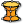 | Minimal Surface Mesh (MinSurf 2C Mesh) Construct a minimal surface based on 2 boundry curves as mesh |
| Mesh Relax Relax a mesh |
Construct
| Add Sources Add sources to generate a density field for different voxel channels | |
| Combine Sources (CombineSources) Combines geometric sources to generate a density field | |
| Construct 2D Paint Bitmap (2D Paint) Construct a two dimensional bitmap on the fly by using free-hand painting techniques. | |
| Construct Function Source (Function Source) Construct a function source for field generation. | |
| Construct Geometric Source (Geom Source) Define a geometric source for field generation | |
| Construct Bitmap Source (Bitmap Source) Construct a bitmap source for field generation. | |
| Construct Bitmap Stack Source (Bitmap Stack) Construct a voxel image from a stack of images. | |
| Construct Voxels From File (Read Voxels) Reads voxel data from a Monolith volume (.vol) file | |
| Function Presets (Presets) Select from a list of pre-defined implicit functions. | |
| Bitmap Blend Blend one or more bitmap sources together along orthographic axes. | |
| Bitmap Loft Loft two or more bitmap sources together along the Z-axis. | |
| Multiply Sources (Mult Sources) Multiply sources to generate a density field for different voxel channels |
Filters
| Blend Fields (Blend) Blends two voxel fields | |
| Gaussian Blur Filter (Gaussian Blur) Perform 3D Gaussian Blur on a voxel field. | |
| Inside Out Filter (Inside Out) Perform 3D Inside Out filter on a voxel field. | |
| Blur Filter (Kernel) (Blur) Perform a kernel based blur filter. | |
| Laplacian Filter (Laplacian) Perform a laplacian filter. | |
| Maximum Filter (Kernel) (Maximum) Perform a kernel based maximum (dilation) filter. | |
| Median Filter (Kernel) (Median) Perform a kernel based median filter. | |
| Minimum Filter (Kernel) (Minimum) Perform a kernel based minimum (erosion) filter. | |
| Symmetry Filter (Symmetry) Ensure voxel field is symmetric about all three major axes. | |
| Twist Filter (Twist) Perform 3D twist to a voxel field. |
Outputs
| Color Mesh By Ratio (Color Mesh) Colorize a mesh based on the density values of a single channel. | |
| Color Mesh By RGB (Color Mesh) Colorize a mesh based on the density values of the RGB channels. | |
| Get Channel Names (Get Channels) Extract the channel names stored in a voxel field | |
| Get Iso Mesh (Iso Mesh) Extracts a mesh contour of the density field channel | |
| Get Mesh Slices (Mesh Slices) Get a series of nested slices using two voxel channels. | |
| Get Slice Plane (Slice Plane) Extract a horizontal slice through a voxel field. | |
| Get Voxel Points Extract the location points of the voxels stored in a voxel field | |
| IsoMesh Extracts a mesh contour of the density field | |
| GetVoxelValues Extract the locations and values of the voxels stored in a voxel field |
Transform Channels
| Channel Fill (Fill) Assign a single number to all values in a voxel channel. | |
| Channel Invert (Invert) Invert the values of a voxel channel. | |
| Channel Noise (Noise) Generate a 3D noise filter for a voxel field. | |
| Get Voxel Values (Get Values) Extract the channel values of the voxels stored in a voxel field | |
| Channel Histogram (Histogram) Compute a histogram for the values in a voxel channel. | |
| Set Voxel Values (Set Values) Set the values of the voxels in a field | |
| Channel Swap Swap one voxel channel with another. |
Stream
| Get Monolith Data (GetMonolithData) Reads the active voxel data from a running instance of Monolith | |
| StreamToMonolith Stream a voxel field to a monolith layer [requires monolith to be running] |
Millipede
| Get Millipede Field Convert a topostruct3d system from Millipede into a voxel field | |
| Set Millipede Densities Set Millipede densities for a topostruct3d model transferring values from an input voxel field |
Views
| 3d Viewport Visualize the current voxel field. |
Geo
| GEO Project (Project) Projects coordinates from WGS84 to a state-plane) - by Carson Smuts 2015 | |
| Vector Maps Extracts Vector maps of cities from OSM. Roads, Buildings etc (Building Heights are not available for all locations) - by Carson Smuts 2015 | |
| MapPlaces (Places API Data) Extracts Google Places data (Requires GooglePlaces APIKey. Visit the Google APIs Console at https://code.google.com/apis/console) - by Carson Smuts 2015 | |
| MapProject (Project Points) Projects point data to and from lon/lat - by Carson Smuts 2015 | |
| Mosquito-Direct (GDirect) Returns routes, times, and directions - Carson Smuts 2015 | |
| MosquitoStep (GStep) Map Step (use with Mosquito Direct) - Carson Smuts 2015 | |
| MosquitoLocation (Location) Location and reverse geo-coding hack - Carson Smuts 2015 | |
| GoogleMap (GMaps) Google Map Hack -still in development, use with caution - Carson Smuts 2015 |
Vector
| Flow Calculates Flow Paths On Surface by Carson | |
| Refraction (Refract) A plugin that calculates refaction of rays through a material by Carson | |
| SonicRoot (Root) Fast-Square Root Calculation by Carson | |
| SurfaceRays Calculates Reflections Off Surfaces From Source Pnt by Carson | |
| TargetRays Calculates Reflections From Target Points by Carson |
Sound
| Audio Play (Play) Play the audio wave from an MP3 by Carson | |
| Audio Scrub (AudioScrub) Scrub through audio from an MP3 by Carson | |
| Audio Wave (AudioWave) Extract the audio wave from an MP3 by Carson | |
| Levels Metering levels for Audio Samples and Other cool stuff by Carson |
Media
| MosquitoFlicker (Flicker) Flicker API tap by Carson | |
| GoogleStock (Stock) Stock Market values from Google - concept by Mia Zinni + Carson Smuts | |
| SonicTweet (Twitter) Access Twitter API by Carson | |
| SonicTweet User (tUser) GH Twitter API User Info by Carson |
Image
| EXIF Extract EXIF data from Photos by Carson | |
| Download Images (ImageDL) Downloads images to a directory by Carson | |
| Material (Mat) Applies a material to a Surface by Carson |
Tools
| Branch Count (Bs) Returns the number of branches in a list by Carson | |
| Sub Graft (SubGraft) Graft A flat Tree into grouped Branches by Carson |
Strings
| String Recorder (Recorder) Record strings over time and cull duplicates by Carson | |
| SonicStringSearch (FindString) Search for words in a body of text by Carson |
Attractors
| Attractor Values (AttValues) Generates numerical values for any given pointlist, being affected by a certain number of point attractors. | |
| Bundle Attractor (Bundle) Generates an iteratively bundled pointlist for any given datatree population of points. | |
| Curve Attractor (CrvAttractor) Generates an iteratively defined new point/vector list for any given, curve attractor affected, population of points. | |
| Curve Ravel (CrvRavel) Generates distance raveled numerical values for any given pointlist, being affected by any number of curve attractors. | |
| Curve Values (CrvValues) Generates numerical values for any given pointlist, being affected by any number of curve attractors. | |
| Point Attractor (PtAttractor) Generates an iteratively defined new point/vector list for any given ,attractor affected, population of points. | |
| Point Ravel (PtRavel) Generates distance raveled numerical values for any given pointlist, being affected by any number of point attractors. |
Scramblers
| Climber Generates the gradient descent or ascent paths on a surface for any provided point list. | |
| Mesh Climber (MeshClimber) Generates the gradient descent or ascent paths on a Mesh object for any provided point list. | |
| Curve Hicking (HickingCrv) Generates the surface paths for any given ,curve attractor affected, population of points. | |
| Down Hill (DownHill) Generates the gradient descent paths on a surface for any provided point list. | |
| Point Hicking (HickingPt) Generates the surface paths for any given ,point attractor affected, population of points. | |
| Point Patrolling (PatrolPt) Generates the surface paths for any given ,twirl attractor affected, population of points. | |
| Up Hill (UpHill) Generates the gradient ascent paths on a surface for any provided point list. |
Animators
| Bouncers Generates and animates particles moving within a user defined box (Timer defined). | |
| Railway Generates and animates random points on any given curve (Timer defined). | |
| Satellite Generates and animates satellite-like points around any collection of objects (Timer defined). | |
| Walkers Generates and animates particles attached on a surface (Timer defined). |
Evolutionary Learning
| Breeder Settings - All (oEL) (SetAll (octEvoLearn)) Settings for the NEAT Algorithm to evolve an ANN | |
| Breeder Settings - Basics (oEL) (SetBase (octEvoLearn)) Basic Settings for the NEAT Algorithm to evolve an ANN. These will override any changes made to the properties in the All-Settings Component. | |
| Crossover (oEL) (MutW (octEvoLearn)) Mutate connection weights of a Network | |
| Deconstruct Network (oEL) (DeconN (octEvoLearn)) Deconstruct a network into its nodes, connections, weights, functions and metadata like performance data. | |
| Deconstruct Network Obj (oEL) (DeconNObj (octEvoLearn)) Gives the Network's Objective and Fitness Values | |
| Evaluate Network (oEL) (EvalN (octEvoLearn)) Forward-Pass through the Network: Takes values for the input nodes and calculates the outputs. | |
| Field Curve (oEL) (FC (octEvoLearn)) Draws a curve following the direction field defined by a Network. Integration with Runge-Kutta 4th order. | |
| Field Curve MT (oEL) (FCMT (octEvoLearn)) Draws a curve following the direction field defined by a Network. Integration with Runge-Kutta 4th order. Uses Parallel Computation for a list of starting points. | |
| Modify Weights (oEL) (Crossover (octEvoLearn)) Takes a pool of Networks and produces offspring by crossover mating | |
| Mutate Weights (oEL) (MutW (octEvoLearn)) Mutate connection weights of a Network | |
| Breeder (oEL) (NEAT (octEvoLearn)) Evolves artificial neural networks with the NEAT algorithm, using SharpNeatLib by Sebastian Risi | |
| Random Network (oEL) (RN (octEvoLearn)) Generate a random network | |
| Show Network (oEL) (SN (octEvoLearn)) Opens a window to show the Network |
Explicit Components
| Check Pareto Dominance Takes two individuals and returns the dominance relation, assuming a minimization problem. | |
| Compute Diversity Computes the paremetric diversity of each solution in the list and adds it as an objective | |
| Construct Solution Takes a lists of numbers for parameters and/or objectives to wrap them in a single object for better handling of pools of solutions [generations etc.] | |
| Cull Duplicate Solutions Removes duplicate solutions | |
| Deconstruct Solution Takes an OctopusSolution object and explodes it into parameters and objectives | |
| Cull Elite Selects an elite of best multi-objective solutions, assuming a minimization problem. | |
| Cull Pareto Fronts (Pareto Fronts) Divides a set of solutions into pareto-fronts, assuming a minimization problem. | |
| Hypervolume Contributions (HV+) Calculates the Hypervolume contributions of a multi-dimensional set of points in relation to a reference point | |
| Hypervolume Calculates the Hypervolume of the ParetoFront of a multi-dimensional set of points; exact algorithm; normalizes the pareto front to objectives between 0 and 1 | |
| Mutate (Mutate an Octopus Solution) Mutate a solution's parameter values | |
| Crossover (Simulated Binary Crossover) Takes two individuals and exchanges parameters between them - after 'SBX - Simulated Binary Crossover' | |
| Tournament Selection (TS) Tournament Selection for single or multi objective solutions, assuming a minimization problem. |
Supervised Learning
| Network Training Settings (oSL) (NTS (octSupervLearn)) Settings for RPROP Supervised Learning of an ANN | |
| Network Evaluate (oSL) (EvalN (octSupervLearn)) Evaluate a network for some input values | |
| Network Learning (oSL) (NetLearn (octSupervLearn)) Supervised example training of a Network by multi-core resilient propagation algorithm, using the Encog library by Jeff Heaton | |
| SVM Evaluate (oSL) (SVMEval (octSupervLearn)) Evaluate the learnt SVM function | |
| SVM Learning (oSL) (SVMLearn (octSupervLearn)) Train SVM and optionally estimate parameters using grid search and cross validation |
Loop
| Octopus Loop Octopus Loop | |
| Octopus Evaluator (Octopus Eval) Octopus Evaluator | |
| Octopus Generic Evaluator (Octopus Generic Eval) Octopus Generic Evaluator |
Test
| ControllerComponent (CntrlComponent) Controller test component | |
| If If component |
Utilities
| MD NearestNeighbors (MD NearN) Neighbourhood search of multi-dimensional points (euclidean kd-tree) |
View
| Select Solutions Takes octopus solutions or networks with saved phenotype meshes to show them for selection |
Octopus
| Octopus Multi-objective seach and optimzation |
TensorSet
| Average TSet (Average) Get TensorSet average. | |
| Classes Generate classification TensorSet. | |
| Bounds TSet (Bounds) Get TensorSet bounds. | |
| Interpolate TSet (Intrp) Interpolate a TensorSet. | |
| Merge TSet (MergeTS) Merge multiple TensorSets into one. | |
| Pick Tensor (Pick) Pick single Tensors out of the TensorSet. | |
| Subsample TSet (Subsample) Subsample TensorSet. | |
| Shuffle TSet (Shuffle) Shuffle TensorSet. | |
| Split TSet (SplitTS) Split TensorSet. | |
| TensorSet Stats (Stats) Get various information about the TensorSet. |
Primitive
| Construct Network (Network) Construct Owl.Accord Network | |
| Load Network (Network) Load Activation Network | |
| Save Network (Network) Save Activation Network | |
| Construct Tensor (Tensor) Construct Owl Tensor | |
| Construct TensorSet (TensorSet) Construct Owl TensorSet | |
| Deconstruct Tensor (DeTensor) Deconstruct Owl Tensor | |
| Deconstruct TensorSet (DeTSet) Deconstruct Owl TensorSet | |
| Deconstruct Trigger (DeTrigger) Deconstruct Trigger |
Tensor
| Reshape Reshape a Tensor. | |
| Highest Activation (High) Indicates which dimension of the Tensor has the greatest value. | |
| Tensor Addition (Add) Tensor Addition. | |
| Tensor Crop (Crop) Tensor Crop. | |
| Tensor Split (SplitT) Splits Tensor by it's leftmost dimension. | |
| Tensor Stats (Stats) Get various information about the Tensor. | |
| Tensor Subtraction (Subtract) Tensor Subtraction. | |
| Threshold (T) Apply threshold filter on the Tensor |
Unsupervised
| t-SNE Laurens van der Maaten's dimensionality reduction method. | |
| t-SNE Ex (t-SNE) Laurens van der Maaten's dimensionality reduction method. | |
| Cluster Lines (ClusterL) Cluster lines | |
| KMeans Clustering (KMeans) A KMeans clustering component | |
| KMeans Clustering Ex (KMeansEx) A KMeans clustering component | |
| Markov Chain (MChain) Markov Chain series generator |
Reinforcement
| Choose Action (Action) Choose agent next action | |
| Construct QAgent (QAgent) Construct QAgent | |
| Construct QMatrix (QMatrix) Construct QMatrix | |
| Deconstruct QAgent (DeQAgent) Deconstruct QAgent | |
| Matrix2QMatrix (M2Q) Convert a spare adjacency matrix to QMatrix. | |
| UpdateQ Update QAgent values |
Network
| Assign Values (SetNet) Assing network weights and biases directly. | |
| Compute Compute the output values for the given input TensorSet | |
| Layer Compute (ComputeL) Compute the output values for each layer, given the input Tensor | |
| Extract Values (GetNet) Get network weights and biases as Tensors | |
| Trim Network (Trim) Trim the network |
Convert
| DataTree to TensorSet (DT->TS) Convert a DataTree of Numbers into a TensorSet | |
| Feature TensorSet (FeatureTS) Convert multiple types of data into a TensorSet | |
| OneHot TensorSet (OneHot) Construct a OneHot TensorSet | |
| TensorSet to DataTree (TS->DT) Deconstruct Owl TensorSet into a DataTree | |
| Curve Tensor (CrvTensor) Convert curvature information from a curve into a Tensor |
I/O
| Load Bitmap (LoadBmp) Loads a bitmap as a Tensor. | |
| Load TensorSet (LoadTSet) Loads the TensorSet from a file. | |
| Save IDX TensorSet (ToIDX) Saves the TensorSet in an IDX file. | |
| Save TBIN TensorSet (ToTBIN) Saves the TensorSet to a binary TBIN file. | |
| Save TensorSet (ToTTXT) Saves the TensorSet to a text file. |
Display
| Display Compute (DComp) Computes the network output | |
| List Devices (Devices) Image capturing devices | |
| WebCamCapture (Capture) Capture a single frame from a webcam | |
| TensorSet Polylines (TSPoly) Plot a TensorSet as a set of polylines |
Image
| Evaluate 2D (Eval2D) Evaluate 2D Tensor | |
| Resize Resize a 2D Tensor | |
| Samples Create sampling frames | |
| Mesh T2 (MT2) Preview 2D Tensor as a mesh |
Backprop
| BackpropagationEx (BackEx) Backpropagation, threaded. | |
| Backpropagation (BackProp) Teach the Network with backpropagation |
Supervised
| Deconstruct Network (DeNetwork) Deconstruct Owl.Learning Network | |
| Construct Network Ex (NetworkEx) Construct Owl.Learning Network from the atomic data. Use this component when importing already trained models from other frameworks. |
Scripting
| File Watch (Watcher) Watch file for changes | |
| Run Process (RunProcess) Run any application. |
Workbench
| Brep closest point (BrepCP) Find the closest point on a brep | |
| Brep topology (Topology) Get the complete topology of a brep | |
| Cap custom Cover a closed curve | |
| Closest geometry Find the geometry closest to a point | |
| Curve array 2d Create an array 2d of geometry along a curve | |
| Curve Discontinuities Find all discontinuities along a curve above an angle of tolerance | |
| Extend surface (ExtendSrf) Extend a edge of a surface | |
| Extrude from point (ExtFromPt) Extrude a curve from a point | |
| Extrusion both sides Extrude a curve or surface in both sides along a vector | |
| Fillet polyline Round the corners of a polyline | |
| Fit curves Match multiple curves by adjusting their direction and seam | |
| Flip plane Flip a plane by reversing the Z axis | |
| Flow along curve (Flow) Re-aligns objects from a base curve to a target curve. | |
| Flow along surface (FlowSrf) Deforms an object from a source surface to a target surface. | |
| Frames Divide a curve into planes oriented from a geometry | |
| Grid On Surface (GridOnSrf) Place a grid on a surface | |
| Hollow thickness (HollowThk) Subtracts a hollow specifying the thickness | |
| Interpolate frames Interpolate a collection of frames over a curve | |
| Interpolate planes (IntPlns) Interpolate a collection of planes | |
| IsoCurve Extracts an isocurve from a surface specifying position and direction | |
| Isotrim Extract an isoparametric subset of a surface from the middle of the trim | |
| Like an emboss (Emboss) Make a embossment on a surface | |
| Mesh topology Get the complete topology of a mesh | |
| Move from geometry Move a collection of points from the nearest projection in a geometry | |
| Offset On Surface Variable (OffsetOnSrfVariable) Offset a curve on a surface with variable distances | |
| Offset Variable Offsets a curve with a range of values | |
| Rasterize (Raster) Rasterize an image transforming black pixels in curve regions | |
| Rebuild surface Rebuild a surface proportionally to its size | |
| Resize Resize a geometry | |
| Reverse Surface (ReverseSrf) Reverse parameter's domain of a surface | |
| Seam from point Adjust the seam of a closed curve from a point | |
| Shatter Variable Shatter a curve into segments of given size | |
| Shell curve (Shell) Creates a solid with the interior subtracted from a closed planar curve | |
| Size Measures the size of the bounding box of a geometry | |
| Split & mirror (Split&Mirror) Split and mirror a brep with a plane | |
| Surface Offset Solid (SrfOffsetSolid) Offsets a surface creating a closed brep | |
| Text by curve Draw text as surfaces over a rail curve | |
| Texture Creates a texture with an image on a surface | |
| Trim from middle Trim a curve from the middle position of the trim and its length | |
| Try get circle (Get circle) Try to convert a curve into a circle | |
| Tween multiple curves (TweenMulti) Tween between multiple curves | |
| Unroller Represents the operation of Rhino's unrolling. |
Gems
| Bezel Create a bezel for a gem | |
| Brilliant Create a brilliant gem from a circle | |
| Cabuchon studio (Cabuchon) Creator of cabuchons | |
| Channel On Surface (ChannelSrf) Create a channel on a surface | |
| Channel Creates a channel for gems from a curve on a surface | |
| Cutter soft Create a simple seamless cutter | |
| Cutter Create a cutter on a gem | |
| Cutters In Line 0 Create a cutter through a list of gems | |
| Cutters In Line 1 Create cross cutters to a line of gems | |
| Cutters In Line 2 Create cross cutters between gems | |
| Gallery rails Create gallery rails in a gem | |
| Gems by 2 curves (Gems2Curves) Create gems between two curves | |
| Gems by curve (GemsByCurve) Create gems in a rail curve | |
| Gems studio (Gems) Creator of gems | |
| Pave random (PaveRnd) Creates a brilliant cut pave on a surface (Kangaroo 0.99 required) | |
| Prong simple Create a simple prong from a plane | |
| Prongs along gems rail Create prongs between gems on rail | |
| Prongs Create vertical prongs around a gem |
Data
| Constrain Constrain a number within a domain | |
| Dispatch Indices Dispatch the items of a list into two target list using indices | |
| Insert in Tree Inserts elements in a tree branch | |
| MapToSum Remaps a list of values where their sum total is a given value | |
| NearestNumber Find the nearest number under or above a given value comparing it with a list of allowed values | |
| Next item Shift a list to operate with the next item | |
| Normalize Normalize a list of numbers | |
| Range Arc Creates a range of numbers in the arc function | |
| Range Gaussian Creates a range of numbers in the Gaussian function | |
| Range Random Creates a range of numbers in the Random midpoint displacement algorithm | |
| Range Sigmoid Creates a range of numbers in the Sigmoid function. | |
| Range Sine Creates a range of numbers in the composite sine function | |
| Shift paths Shift -1 in all data tree paths | |
| Split domain Split a domain using numbers | |
| Split domain² Split an UV domain using numbers | |
| Symmetry numbers Create a list of numbers that is symmetrical to another from a given value |
Rings
| Arm gauge (Arm) Create half gauge for ring creation | |
| Gauge Create a circle using a size of a regional system of gauge | |
| Resize ring Adjust the finger size of a ring | |
| Ring base Create a basic ring | |
| Ring by curves (Ring curves) Creates a ring with a frontal and side curves | |
| Ring half round (Half Ring) Creates a half round ring | |
| Ring Profile Create a ring using a profile curve | |
| Ring Signet Create a ring with a curve for the signet | |
| Size to radius (SizeToRadius) Converts the size of a regional system to his radius. | |
| Size to size (SizeToSize) Converts the size in a regional system to another regional system |
Profiles
| Profile 2Arcs Contains a cluster of Grasshopper components | |
| Profile Gem Extract a gem profile and add useful openings as a cutter | |
| Profile Grooves Contains a cluster of Grasshopper components | |
| Profile HalfRound Contains a cluster of Grasshopper components | |
| Profile HalfRoundTruncated Contains a cluster of Grasshopper components | |
| Profile n-Bezier Contains a cluster of Grasshopper components | |
| Profile Ovoid Contains a cluster of Grasshopper components | |
| Profile Track Create a profile of track and edges |
Display
| Arm Organic model of an arm | |
| Bust Organic model of a bust | |
| Display sizes Displays the size of gems | |
| Ear Organic model of an ear | |
| Finger Contains a collection of polygon meshes | |
| Gem preview Preview gems choosing the color. | |
| Metal preview Preview metals |
Production
| Costs Calculate the cost of your production You can open the cluster for editing | |
| genRandom Generates pseudo-random values in a domain and writes on a branch with a path value of the seed | |
| Market price (Market) Daily price of gold, silver, platinum and palladium in euro / gram in the London market (LBMA) | |
| Organize Organize the distribution of geometry in a base rectangle | |
| Timekeeper (Time) Time counter. Requires Timer component (1 second interval). | |
| Tree wax Create a tree and place geometry at the ends of branches | |
| Weight Calculates the weight in grams selecting a metal alloy |
Analysis
| Animation Create a simple animation from a guide curve. | |
| Curvature analysis (Curvature) Analyzes surface curvature | |
| Direction analysis (Direction) Analyzes the direction of geometry | |
| Slicer Slice a geometry to get a section | |
| Thickness analysis (Thickness) Analyzes the thickness of a mesh | |
| Thickness dynamic (Thk dynamic) Measures the thickness manually using points |
Jewelry
| Calotte Creates a calotte to pearl | |
| Chain Creates a chain from a link and guide curves | |
| Filigree Creates a filigree with guide and profile curves | |
| Milgrain Creates a milgrain with a geometry through a curve | |
| Pipe Custom Create a pipe with multiple sections |
PhylloMachine
| Bezier Curve (BezierCurve) Quickly creates a Bezier curve from a mesh face | |
| Branch Extrude a mesh face controlling their subdivisions | |
| Explode Mesh Decompose a mesh into its faces | |
| i Fibonacci (iFib) Returns a Fibonacci number from its index | |
| Join Mesh Join & combine several meshes | |
| Move Face (MoveFace) Moves and scale a face on normal vector | |
| Move Vertex (MoveVertex) Move a list of vertices of a mesh | |
| Offset Mesh (OffsetMesh) Offsets a mesh | |
| Petal Model a petal or a leaf from one face and a curve | |
| Phyllo Branch (PhylloBranch) Wrap a curve patterned on phyllotaxis and repositions the beginning on a mesh face | |
| Phyllo Cap (PhylloCap) Forms a PhylloMesh on a naked edge | |
| Phyllo Machine (PhylloMachine) Creates a mesh wrapping a curve forming the pattern of phyllotaxis | |
| Phyllo Mesh (PhylloMesh) Wrap a curve to create a mesh whose vertices form the pattern of phyllotaxis | |
| Phyllo Surface (PhylloSurf) Creates a PhylloMesh over a surface from a cylindrical mapping. | |
| Ratio Box (RatioBox) Search proportions visually using boxes | |
| Rnd Range (RndRange) Create a range of random values within a domain with interpolation option |
Geometries
| PX Box Generate PhysX Box from GH Box | |
| PX CompoConvexMesh (PX CCxMesh) Input ConvexMesh or PhysX will automatically convert it to convex and the result won't be as expected | |
| PX ConvexMesh (PX CxMesh) Input ConvexMesh or PhysX will automatically convert it to convex and the result won't be as expected | |
| PX Sphere Generate PhysX Shpere like mesh sphere |
Material
| PX Material (PX Mat) PhysX Material |
Curve
| Align Curve Seams (AliCrvSeams) Iteratively or non-iteratively align the seams for a set of closed curves starting from the first curve in the set (or optionally from a guide start point) with the option of snapping to corners, if curve is not closed it will output with no change | |
| Arc/Circle/Ellipse (ACE) Get the arc, circle, or ellipse representation of a curve. | |
| Average Curve (AvrCrv) Solve the arithmetic average for a set of curves. | |
| Close Curve (ClsCrv) Close an open curve in a variety of ways, if curve is already closed or linear it will output with no change. | |
| Compatibilize Polylines (ComPLines) Make a set of polylines compatible(equal) in control point count without changing their shapes. | |
| Curve Align Curve Seams (CrvAliCrvSeams) Align the seams for a set of closed curves along a guide curve with the option of snapping to corners, if curve is not closed it will output with no change. | |
| Curve Degree (CrvDeg) Get the degree value of a curve. | |
| Curve Length At (CrvLenAt) Get the length along a curve from its start to a point on the curve (or optionally to a parameter on the curve), if point is not on the curve it will be pulled to it. | |
| Curve Length Between (CrvLenBtwn) Get the lengths along a curve between points on the curve (or optionally parameters on the curve), if points are not on the curve they will be pulled to it. | |
| Curve Spans (CrvSpans) Gets the curve sub-domain for each span in a curve and gets information about the spans such as, amount of spans, length of each span, degree of each span, and curve parameters at the span ends. | |
| Discrete Polyline (DPLine) Create a polyline made of target vector oriented segments by finding the closest target vector by angle to each vector between the reference vertices. | |
| Is Arc/Circle/Ellipse (IsACE) Test if a curve is an arc, circle, or ellipse as defined by Rhino. Curves can be multiple types. | |
| Is Curve Kinky (CrvKinky) Test if a curve has kinks, and gets information about the kinks such as, amount of kinks and the length along curve where each kink exists. | |
| Is Curve Linear (CrvLinr) Test a curve for linearity. | |
| Is Curve Segmented (CrvSegs) Test if a curve has segments, and gets information about the segments such as, amount of segments, length of each segment, and degree of each segment. | |
| Mirror Cut Curve (MirCutCrv) Cut a curve with a plane, mirror the kept side of the cut across a mirror plane, and combine it with the kept side. | |
| Net On Surface (NetSrf) Create a net of interpolated curves on a surface. | |
| Parameter Curve Divide Surface (ParamCrvDivSrf) Generate a grid of curves on a surface from domain dividing {u} and {v} parameters, or generate a surface isocurve. | |
| Parameter Grid On Surface (ParamGridSrf) Generate a grid of rectangular cells on a surface from domain dividing {u} and {v} parameters. | |
| Parameter Surface Grid (ParamSrfGrid) Generate a grid of rectangular cells on a surface from domain dividing {u} and {v} parameters. | |
| Parameter Surface Isocurve (ParamSrfIso) Generate an isocurve on a surface from a domain dividing {u} or {v} parameter. | |
| Plane Trim Curve (PlnTrimCrv) Trim (remove) the parts of a curve on one side of a plane. | |
| Points Trim Curve (PtsTrimCrv) Trim a curve with a set of points (or optionally a set of parameters) like a dash pattern, if points are not on the curve they will be pulled to it. | |
| Rebuild Curve (RebCrv) Rebuild a curve to a given point count, degree, and domain. | |
| Rebuild Curve Segments (RebCrvSegs) Search a curve for segments at specified degrees and rebuild them to a specified degree and control point count. | |
| Rectangle Fit (RecFit) Fit a rectangle through a set of points. | |
| Remap Curve Domain (ReCrvDom) Remap a curves {t} domain range to an input domain range with the option of matching the {t} domain range of a guide curve. | |
| Reparameterize Curve (ReparamCrv) Reparameterize a curve to have a (t) domain range from 0 to 1. | |
| Seam To Curve Corner (Seam2CrvCorn) Adjust the seam of a closed curve with corners so that the seam is on the closest corner from the initial seam location (or optionally from a guide point), if curve is not closed or has no corners it will output with no change | |
| Slide Curve Along Curve (SlideCrvCrv) Slide a curve along a guide curve (or optionally along two guide curves). | |
| Superimpose Curve (SuperCrv) Superimpose the control point count, degree, and domain properties of a reference curve onto a target curve. | |
| Trim Curve With Plane (TrimCrvPln) Trim (remove) the parts of a curve on one side of a plane. | |
| Trim Curve With Points (TrimCrvPts) Trim (remove) the parts of a curve outside of every two points (or optionally every two parameters), if points are not on the curve they will be pulled to it. | |
| Tween Consecutive Curves (TwnConCrvs) Tween consecutively between a set of curves. | |
| Tween Consecutive Curves Along Curve (TwnConCrvsCrv) Tween consecutively between a set of curves along a guide curve (or optionally along two guide curves). | |
| Tween Consecutive Curves On Surface (TwnConCrvsSrf) Tween consecutively between a set of curves on a surface, if curves are not on the surface they will be pulled to it. | |
| Tween Through Curves (TwnThruCrvs) Tween through a set of curves. | |
| Tween Through Curves Along Curve (TwnThruCrvsCrv) Tween through a set of curves along a guide curve (or optionally along two guide curves). | |
| Tween Through Curves On Surface (TwnThruCrvsSrf) Tween through a set of curves on a surface, if curves are not on the surface they will be pulled to it. | |
| Tween Two Curves (Twn2Crvs) Tween between two curves. | |
| Tween Two Curves Along Curve (Twn2CrvsCrv) Tween between two curves along a guide curve (or optionally along two guide curves). | |
| Tween Two Curves On Surface (Twn2CrvsSrf) Tween between two curves on a surface, if curves are not on the surface they will be pulled to it. | |
| Weighted Average Curve (WavCrv) Solve the arithmetic weighted average for a set of curves. |
Surface
| Automatic Edge Surface (AutoEdgSrf) Create a surface between 2, 3, or 4 auto sorted edge curves. | |
| Automatic Network Surface (AutoNetSrf) Create a surface from an auto sorted curve network. | |
| Average Surface (AvrSrf) Solve the arithmetic average for a set of surfaces, trimmed surfaces will be treated as untrimmed. | |
| Edge Unsplit Surface (EdgeUnsplit) Create an untrimmed edge surface between 2, 3, or 4 edge curves which doesn't split into a polysurface(Brep) at kinks. | |
| Extrude Tapered Polysurface (ExtrTaper) Extrude a profile with a taper from draft angle. | |
| Extrude Unsplit Surface (ExtrUnsplit) Create an untrimmed extruded surface from a profile curve or surface along a vector, curve, or to a point, which doesn't split into a polysurface(Brep) at kinks. | |
| Flip Polysurface (FlipPsrf) Flip the normals of a polysurface (Brep), closed polysurfaces (Breps) cannot be flipped and will output with no change. | |
| Is Polysurface Closed (PsrfClsd) Test if a polysurface (Brep) is closed. | |
| Is Surface Closed (SrfClsd) Test if a surface is closed and if its edges are closed in the {u} or {v} directions. | |
| Is Surface Collapsed (SrfCollapsed) Test if a surface has edges collapsed to a point (singularities). | |
| Is Surface Singular (SrfSinglr) Test if a surface has singularities (sides collapsed to a point). | |
| Is Surface Trimmed (SrfTrimd) Test if a surface is trimmed, can also test a polysurface (Brep) for trimmed faces. | |
| Loft Unsplit Surface (LoftUnsplit) Create an untrimmed lofted surface through a set of section curves or surfaces which doesn't split into a polysurface(Brep) at kinks. | |
| Mesh To Polysurface (Msh2Psrf) Convert a mesh into a nurbs polysurface (Brep). | |
| Mirror Cut Polysurface (MirCutPsrf) Cut a polysurface(Brep) with a plane, mirror the kept side of the cut across a mirror plane, and combine it with the kept side. Can also mirror cut surfaces | |
| Mirror Cut Surface (MirCutSrf) Cut a surface with a plane, mirror the kept side of the cut across a mirror plane, and combine it with the kept side (for trimmed surfaces use Mirror Cut Polysurface). | |
| Offset Surface (OffSrf) Offset a surface with the option of offsetting both sides and creating a solid, also works with trimmed surfaces and polysurface (Brep) faces. | |
| Parameter Subdivide Surface (ParamSubDivSrf) Generate a grid of subdivision surfaces on a surface from domain dividing {u} and {v} parameters. | |
| Plane Trim Surface (PlnTrimSrf) Trim (remove) the parts of a surface on one side of a plane, also works with trimmed surfaces and polysurfaces (Breps). | |
| Rebuild Surface (RebSrf) Rebuild a surface to a given point count, degree, and domain in the {u} and {v} directions, also works with trimmed surfaces. | |
| Remap Surface Domain² (ReSrfDom²) Remap a surfaces {uv} domain² range to an input domain² range with the option of matching the {uv} domain² range of a guide surface, also works with trimmed surfaces. | |
| Reparameterize Surface (ReparamSrf) Reparameterize a surface to have a (uv) domain² range from 0 to 1, also works with trimmed surfaces. | |
| Shell Polysurface (ShellPsrf) Creates a hallowed out thickened shell from a closed polysurface (Brep). | |
| Shrink Trimmed Surface (ShrinkTrimSrf) Shrinks the underlying untrimmed surface of a trimmed surface to be as close as possible to the trimmed surface edges, can also shrink trimmed polysurface (Brep) faces. | |
| Split Kinky Surface (SplitKinkySrf) Split the output surface from an unsplit surface component into a polysurface(Brep) if it has kinks, if surface has no kinks it will output with no change. | |
| Superimpose Surface (SuperSrf) Superimpose the {uv} control point count, {uv} degree, {uv} domain, and trims of a reference surface onto a target surface, also works with trimmed surfaces. | |
| Surface Degree (SrfDeg) Get the degree value of a surface for its {u} and {v} directions. | |
| Surface Spans (Srfpans) Gets the surface sub-domain²s for each span in a surface and gets information about the spans such as, sub-domains of each span, amount of spans in each direction, lengths of each span, degrees of each span, isocurve span parameters, and surface parameter coordinates at the span ends | |
| Swap Surface Directions (SwapSrfDir) Swap or reverse the {u} and {v} directions of a surface, also works with trimmed surfaces but trims will swap as well. | |
| Sweep Unsplit Surface (SwpUnsplit) Create an untrimmed swept surface through a set of section curves or surfaces along a rail curve (or optionally along two rail curves) which doesn't split into a polysurface(Brep) at kinks. | |
| Trim Surface With Plane (TrimSrfPln) Trim (remove) the parts of a surface on one side of a plane, can also trim polysurfaces (Breps). | |
| Tween Consecutive Surfaces (TwnConSrfs) Tween consecutively between a set of surfaces, trimmed surfaces will be treated as untrimmed. | |
| Tween Through Surfaces (TwnThruSrfs) Tween through a set of surfaces, trimmed surfaces will be treated as untrimmed. | |
| Tween Two Surfaces (Twn2Srfs) Tween between two surfaces, trimmed surfaces will be treated as untrimmed. | |
| Tween Two Surfaces Along Curve (Twn2SrfsCrv) Tween between two surfaces along a guide curve (or optionally along two guide curves), trimmed surfaces will be treated as untrimmed. | |
| Unroll Polysurface (UnrollPsrf) Unroll a polysurface (Brep) so its faces lay flat on a plane, with the options to unroll points and curves along with the polysurface (Brep) faces. | |
| Unsplit Edge Surface (UnsplitEdge) Create an untrimmed edge surface between 2, 3, or 4 edge curves which doesn't split into a polysurface(Brep) at kinks. | |
| Unsplit Extrude Surface (UnsplitExtr) Create an untrimmed extruded surface from a profile curve or surface along a vector, curve, or to a point, which doesn't split into a polysurface(Brep) at kinks. | |
| Unsplit Loft Surface (UnsplitLoft) Create an untrimmed lofted surface through a set of section curves or surfaces which doesn't split into a polysurface(Brep) at kinks. | |
| Unsplit Rail Revolve Surface (UnsplitRailRev) Create an untrimmed revolved surface from a profile curve or surface guided by a rail curve around an axis line which doesn't split into a polysurface(Brep) at kinks. | |
| Unsplit Sum Surface (UnsplitSum) Create an untrimmed sum surface from two edge curves which doesn't split into a polysurface(Brep) at kinks. | |
| Unsplit Sweep Surface (UnsplitSwp) Create an untrimmed swept surface through a set of section curves or surfaces along a rail curve (or optionally along two rail curves) which doesn't split into a polysurface(Brep) at kinks. | |
| Weighted Average Surface (WavSrf) Solve the arithmetic weighted average for a set of surfaces, trimmed surfaces will be treated as untrimmed. |
Point
| Are Points Collinear (PtsCoLinr) Test a set of points for collinearity. | |
| Are Points Coplanar (PtsCoPlnr) Test a set of points for coplanarity. | |
| Curve Edit Points (CrvEditPts) Extract the edit points on a curve at knot averages, the points an interpolated curve interpolated through. | |
| Curve Middle Point (CrvMidPt) Get the point at the middle of a curves length or domain. | |
| Map Point To Surface (MapPt2Srf) Map point to a target surface space from its location relative to a source surface space. | |
| Mirror Cut Points (MirCutPts) Cut a set of points with a plane, mirror the kept side of the cut across a mirror plane, and combine it with the kept side. | |
| Move 2Pt (Move2Pt) Translate (Move) an object from one point to another. | |
| Parameter Point Divide Surface (ParamPtDivSrf) Generate a grid of points on a surface from domain dividing {u} and {v} parameters. | |
| Pinch'n'Spread (P'n'S) Pinch & spread a set of points by radius and strength values at each location point. Positive strengths pinch, negative strengths spread. | |
| Plane Trim Points (PlnTrimPts) Trim (remove) the parts of a point set on one side of a plane. | |
| Point Divide Curve Segments (PtDivCrvSegs) Divide each segment of a curve into equal lengths. | |
| Point Divide Curve Target Length (PtDivCrvTarg) Divide a curve into equal lengths that are as close as possible to a target length. | |
| Point Mesh Side (PtMshSide) Find on which side of a mesh a point exists, if mesh has mis-matched face directions its normals will be unified. | |
| Point Plane Side (PtPlnSide) Find on which side of a plane a point exists. | |
| Point Surface Edge (PtSrfEdge) Find the surface edge which is closest to a point. | |
| Point Surface Side (PtSrfSide) Find on which side of a surface a point exists. | |
| Reparameterize Points (ReparamPts) Reparameterize a set of points to have {x}, {y}, {z} coordinates which range from 0 to 1, or an inverted coordinate range from 1 to 0. | |
| Surface Edit Points (SrfEditPts) Extract the edit points on a surface at knot averages, the points an interpolated surface interpolated through. | |
| Trim Points With Plane (TrimPtsPln) Trim (remove) the parts of a point set on one side of a plane. | |
| Tween Consecutive Points (TwnConPts) Tween consecutively between a set of points. | |
| Tween Consecutive Points On Curve (TwnConPtsCrv) Tween consecutively between a set of points on a curve, if points are not on the curve they will be pulled to it. | |
| Tween Consecutive Points On Surface (TwnConPtsSrf) Tween consecutively between a set of points on a surface, if points are not on the surface they will be pulled to it. | |
| Tween Through Points (TwnThruPts) Tween through a set of points. | |
| Tween Through Points On Curve (TwnThruPtsCrv) Tween through a set of points on a curve, if points are not on the curve they will be pulled to it. | |
| Tween Through Points On Surface (TwnThruPtsSrf) Tween through a set of points on a surface, if points are not on the surface they will be pulled to it. | |
| Tween Two Points (Twn2Pts) Tween between two points. | |
| Tween Two Points On Curve (Twn2PtsCrv) Tween between two points on a curve, if points are not on the curve they will be pulled to it. | |
| Tween Two Points On Surface (Twn2PtsSrf) Tween between two points on a surface, if points are not on the surface they will be pulled to it. |
Number
| Curve Graph Mapper (CrvGraphMap) Remap values with a custom graph using input curves. | |
| Deconstruct Number (DeNum) Deconstruct a number into its whole integer and decimal remainder. | |
| Default Angle Tolerance (DefAt) Outputs the RhinoMath default angle tolerance value (1 deg | 0.017453 rad ). | |
| Document Angle Tolerance (DocAt) Outputs the Rhino documents angle tolerance value (Document Properties > Units > Model > Angle tolerance). | |
| Document Distance Tolerance (DocDt) Outputs the Rhino documents absolute distance tolerance value (Document Properties > Units > Model > Absolute tolerance). | |
| Highest & Lowest Numbers (HiLoNums) Get the highest and lowest values from a set of numbers. | |
| Item Index List (iDexList) Creates a list of indices from a list of items. | |
| Last Index Range (LastRange) Create a range of numbers between 0 and the last index of a list (list length -1). | |
| List Length Range (LengRange) Create a range of numbers between 0 and the length of a list. | |
| Mass Division (MDiv) Perform mass division on a set of numbers. | |
| Mass Subtraction (MSub) Perform mass subtraction on a set of numbers. | |
| Mirror Combine Numbers (MirComNums) Mirror a set of numbers across its end or start and combine it with the original set. | |
| Mirror Cut Numbers (MirCutNums) Cut a set of numbers at an index, mirror the kept side of the cut across the index, and combine it with the kept side. | |
| Partition Number (PartNum) Partition a number as equally as possible by a specified amount of divisions. | |
| Percentage (Pcent) Calculate the percentage of a number. | |
| Reparameterized Range (RepaRange) Create a range of numbers between 0 and 1. | |
| Reparameterize Numbers (ReparamNums) Reparameterize a set of numbers to have a domain range from 0 to 1, or an inverted domain range from 1 to 0. | |
| Round To Decimal Place (RoundD) Round a number to a decimal place or truncate a number at a decimal place. | |
| Round To Factor (RoundF) Round a number to a multiplication factor. | |
| Round To Nearest (RoundN) Round numbers in x to the nearest numbers in y with the option of remapping number set x to the domain bounds of number set y. | |
| Tween Consecutive Numbers (TwnConNums) Tween consecutively between a set of numbers. | |
| Tween Through Numbers (TwnThruNums) Tween through a set of numbers. | |
| Tween Two Numbers (Twn2Nums) Tween between two numbers. | |
| X Minus One (x-1) Subtract one from x. | |
| X Plus One (x+1) Add one to x. | |
| Zero Distance Tolerance (ZerDt) Outputs the RhinoMath zero distance tolerance value (1.0e-12). |
Domain
| Average Domain (AvrDom) Solve the arithmetic average for a set of domains. | |
| Average Domain² (AvrDom²) Solve the arithmetic average for a set of domain²s. | |
| Mirror Combine Domains (MirComDoms) Mirror a set of domains across its end or start and combine it with the original set. | |
| Mirror Combine Domains² (MirComDoms²) Mirror a set of domain²s across its end or start and combine it with the original set. | |
| Mirror Cut Domains (MirCutDoms) Cut a set of domains at an index, mirror the kept side of the cut across the index, and combine it with the kept side. | |
| Mirror Cut Domains² (MirCutDoms²) Cut a set of domain²s at an index, mirror the kept side of the cut across the index, and combine it with the kept side. | |
| Reparameterize Domains (ReparamDoms) Reparameterize a set of domains to have a start and end value range from 0 to 1, or an inverted start and end value range from 1 to 0. | |
| Reparameterize Domains² (ReparamDoms²) Reparameterize a set of domain²s to have a start and end value range from 0 to 1 for their {u} and {v} domains, or an inverted start and end value range from 1 to 0. | |
| Slide Within Domain (SlideInDom) Slide within the start and end of a domain to get a number in the domain. | |
| Slide Within Domain² (SlideInDom²) Slide within the start and end of a domain² to get a {u} and {v} domain number within the domain². | |
| Tween Consecutive Domains (TwnConDoms) Tween consecutively between a set of domains. | |
| Tween Consecutive Domains² (TwnConDoms²) Tween consecutively between a set of domain²s. | |
| Tween Through Domains (TwnThruDoms) Tween through a set of domains. | |
| Tween Through Domains² (TwnThruDoms²) Tween through a set of domain²s. | |
| Tween Two Domains (Twn2Doms) Tween between two domains. | |
| Tween Two Domains² (Twn2Doms²) Tween between two domain²s. | |
| Two Way Domain (2WayDom) Construct a domain from one number that becomes the negative and positive extents of the domain from zero. | |
| Two Way Domain² (2WayDom²) Construct a domain² from one {u} number and one {v} number that becomes the negative and positive extents for each direction of the domain² from zero. | |
| Weighted Average Domain (WavDom) Solve the weighted arithmetic average for a set of domains. | |
| Weighted Average Domain² (WavDom²) Solve the weighted arithmetic average for a set of domain²s. |
Plane
| Average Plane (AvrPln) Solve the arithmetic average for a set of planes. | |
| Closest Plane Orientation (CPlnOri) Find the closest target plane by axis or axes orientation to a reference plane. | |
| Flip Plane (FlipPln) Flip a plane by specified axes with the option of using a guide plane. | |
| Mirror Cut Planes (MirCutPlns) Cut a set of planes with a plane, mirror the kept side of the cut across a mirror plane, and combine it with the kept side. | |
| Offset Plane (OffPln) Offset a plane by specified axes with the option of offsetting both sides. | |
| Parameter Plane Divide Surface (ParamPlnDivSrf) Generate a grid of surface normal oriented planes on a surface from domain dividing {u} and {v} parameters. | |
| Plane Trim Planes (PlnTrimPlns) Trim (remove) the parts of a plane set on one side of a plane. | |
| Trim Planes With Plane (TrimPlnsPln) Trim (remove) the parts of a plane set on one side of a plane. | |
| Tween Consecutive Planes (TwnConPlns) Tween consecutively between a set of planes. | |
| Tween Consecutive Planes On Curve (TwnConPlnsCrv) Tween consecutively between a set of planes on a curve, if plane origins are not on the curve they will be pulled to it. | |
| Tween Consecutive Planes On Surface (TwnConPlnsSrf) Tween consecutively between a set of planes on a surface, if plane origins are not on the surface they will be pulled to it. | |
| Tween Through Planes (TwnThruPlns) Tween through a set of planes. | |
| Tween Through Planes On Curve (TwnThruPlnsCrv) Tween through a set of planes on a curve, if plane origins are not on the curve they will be pulled to it. | |
| Tween Through Planes On Surface (TwnThruPlnsSrf) Tween through a set of planes on a surface, if plane origins are not on the surface they will be pulled to it. | |
| Tween Two Planes (Twn2Plns) Tween between two planes. | |
| Tween Two Planes On Curve (Twn2PlnsCrv) Tween between two planes on a curve, if plane origins are not on the curve they will be pulled to it. | |
| Tween Two Planes On Surface (Twn2PlnsSrf) Tween between two planes on a surface, if plane origins are not on the surface they will be pulled to it. | |
| Weighted Average Plane (WavPln) Solve the arithmetic weighted average for a set of planes. |
Mesh
| Average Mesh (AvrMsh) Solve the arithmetic average for a set of meshes, meshes must have the same topology. | |
| Close Mesh (ClsMsh) Close an open mesh by filling its openings with new mesh faces, if mesh is already closed it will output with no change. | |
| Is Mesh Closed (MshClsd) Test if a mesh is closed. | |
| Mirror Cut Mesh (MirCutMsh) Cut a mesh with a plane, mirror the kept side of the cut across a mirror plane, and combine it with the kept side. | |
| Offset Mesh (OffMsh) Offset a mesh with the option of offsetting both sides and creating a solid. | |
| Parameter Surface Mesh (ParamSrfMsh) Generate a mesh on a surface from domain dividing {u} and {v} parameters. | |
| Plane Trim Mesh (PlnTrimMsh) Trim (remove) the parts of a mesh on one side of a plane. | |
| Polyline To Mesh (PLine2Msh) Create a mesh from a closed or open polyline boundary. | |
| Rebuild Mesh (RebMsh) Rebuild a mesh with options for recomputing normals, removing unused faces and vertices, combining duplicate vertices, unifying normals, flipping normals, and welding vertices within proximity of eachother | |
| Recursive Morph Mesh (ReMorphMsh) Recursively morph mesh geometries onto mesh faces starting from morphing onto a base mesh, the resulting mesh of each recursive morphing step becomes the new base mesh for the next steps mesh geometry to morph onto its faces | |
| Reduce Mesh (ReduMsh) Reduce the face count of a mesh to a target amount (look at Rhino command line to see progress % of operation). | |
| Reduce Mesh By Faces (ReduMshFaces) Reduce the face count of a mesh to a target amount (look at Rhino command line to see progress % of operation). | |
| Trim Mesh With Plane (TrimMshPln) Trim (remove) the parts of a mesh on one side of a plane. | |
| Tween Consecutive Meshes (TwnConMshs) Tween consecutively between a set of meshes, meshes must have the same topology. | |
| Tween Through Meshes (TwnThruMshs) Tween through a set of meshes, meshes must have the same topology. | |
| Tween Two Meshes (Twn2Mshs) Tween between two meshes, meshes must have the same topology. | |
| Weighted Average Mesh (WavMsh) Solve the arithmetic weighted average for a set of meshes, meshes must have the same topology. |
Color
| Color To Point (Col2Pt) Convert a color to a point by using the colors RGB values for the points XYZ values. | |
| Grayscale Color (GrayCol) Convert a color to grayscale by a variety of common luminosity weighting schemes. | |
| Invert Color (InvCol) Invert a color. | |
| Mirror Combine Colors (MirComCols) Mirror a set of colors across its end or start and combine it with the original set. | |
| Mirror Cut Colors (MirCutCols) Cut a set of colors at an index, mirror the kept side of the cut across the index, and combine it with the kept side. | |
| Point To Color (Pt2Col) Convert a point to a color by using the points XYZ values for the colors RGB values. | |
| Tween Consecutive Colors (TwnConCols) Tween consecutively between a set of colors. | |
| Tween Through Colors (TwnThruCols) Tween through a set of colors. | |
| Tween Two Colors (Twn2Cols) Tween between two colors. |
Vector
| Closest Vector (CVec) Find the closest target vector by angle to a reference vector. | |
| Mirror Combine Vectors (MirComVecs) Mirror a set of vectors across its end or start and combine it with the original set. | |
| Mirror Cut Vectors (MirCutVecs) Cut a set of vectors at an index, mirror the kept side of the cut across the index, and combine it with the kept side. | |
| Reparameterize Vectors (ReparamVecs) Reparameterize a set of vectors to have a length (amplitude) range from 0 to 1, or an inverted length range from 1 to 0. | |
| Tween Consecutive Vectors (TwnConVecs) Tween consecutively between a set of vectors. | |
| Tween Through Vectors (TwnThruVecs) Tween through a set of vectors. | |
| Tween Two Vectors (Twn2Vecs) Tween between two vectors. |
List
| Dispatch Indices (DispDexs) Dispatch a list of items into two lists based on a set of indices, those that are at the indices and those which are not | |
| Last Index (LastDex) Get the last index of a list (list length -1). | |
| List Indices (ListDexs) Get a list of the indices from a list of items. | |
| Mirror Combine Items (MirComItems) Mirror a set of list items across its end or start and combine it with the original set. | |
| Mirror Cut Items (MirCutItems) Cut a set of list items at an index, mirror the kept side of the cut across the index, and combine it with the kept side. | |
| Sift Indices (SiftDexs) Sift a list of items into two lists based on a set of indices, those that are at the indices and those which are not |
Transform
| Mass Transform (MTrans) Create a single mass transform by compounding a set of transforms, like Grasshopper's Compound component but with access to partial results (each step of the mass transformation). | |
| Mirror Combine Transforms (MirComTrans) Mirror a set of transforms across its end or start and combine it with the original set. | |
| Mirror Cut Transforms (MirCutTrans) Cut a set of transforms at an index, mirror the kept side of the cut across the index, and combine it with the kept side. | |
| Move To Point (Move2Pt) Move (translate) an object from one point to another. | |
| Recursive Transform (ReTrans) Recursively transform geometry to get a self-referential step sequence of transformed geometry. |
Optimization
| Disassemble Pareto Solution (DisassPareto) Description | |
| Genetic Algorithm Optimization (GA) Component that performs single-objective optimization using genetic algorithm | |
| Parallel Coordinates Viewer (ParaCoorView) ParallelCoordinatesViewer | |
| Particle Swarm Optimization (PSO) Component for multi-objective optimization with particle swarm optimization |
Topology
| Brep Topology Edge (Brep Topo Edge) Analyses the edge topology of a Brep | |
| Brep Topology Edge Filter (Brep Topo Edge Filter) Filter the edges of a brep based on their valency | |
| Brep Topology Vertex (Brep Topo Vertex) Analyses the vertex topology of a Brep | |
| Brep Topology Vertex Filter (Brep Topo Vertex Filter) Filter the vertices of a brep based on their connectivity | |
| Line Topology (Line Topo) Analyses the topology of a network consisting of lines | |
| Line Topology Filter (Line Filter) Filters a network of lines based on connectivity | |
| Mesh Topology Edge (Mesh Topo Edge) Analyses the edge topology of a Mesh | |
| Mesh Topology Edge Filter (Mesh Topo Edge Filter) Filter the edges of a mesh based on their valency | |
| Mesh Topology Vertex (Mesh Topo Vertex) Analyses the vertex topology of a Mesh | |
| Mesh Topology Vertex Filter (Mesh Topo Vertex Filter) Filter the vertices of a mesh based on their connectivity | |
| Polygon Topology Edge (Poly Topo Edge) Analyses the edge topology of a curve network consisting of closed polylines | |
| Polygon Topology Edge Filter (Poly Topo Edge Filter) Filter the edges in a polygon network based on their valency | |
| Polygon Topology Point (Poly Topo Point) Analyses the point topology of a network consisting of closed polylines | |
| Polygon Topology Point Filter (Poly Topo Point Filter) Filter the points in a polygon network based on their connectivity |
Display
| Custom Material (SDCustomMaterial) Defines a custom material supporting texture images for ShapeDiver's viewer | |
| Custom Material External Geometry (SDCustomMaterialExternal) Display externally defined geometry in ShapeDiver's viewer | |
| Shape Diver Display External Geometry (SDDisplayExternalGeometry) Display externally defined geometry in ShapeDiver's viewer | |
| Shape Diver Display Geometry (SDDisplayGeometry) Display geometry in ShapeDiver's viewer. Change the nickname of this component to create a named output, which can be used in ShapeDiver's viewer API. | |
| Shape Diver Material (SDMaterial) Define material properties for displaying geometry in the ShapeDiver viewer | |
| Material (SDMaterial) Defines a basic material for the ShapeDiver viewer | |
| Shape Diver Simple Material (SDSimpleMaterial) Choose from predefined material properties for displaying geometry in the ShapeDiver viewer. | |
| Texture Material (SDTextureMaterial) Defines an extended material supporting texture images for ShapeDiver's viewer | |
| Texture Material External Geometry (SDTextureMaterialExternal) Display externally defined geometry in ShapeDiver's viewer |
Shapeways
| Export Shape Ways (SDExportShapeWays) Use this component to define an export to your ShapeWays account | |
| Shape Ways Categories (SDShapeWaysCategories) Use this component to retrieve available categories from ShapeWays. | |
| Shape Ways Credentials (SDShapeWaysCredentials) Use this component to define OAuth2 access credentials for your ShapeWays account | |
| Shape Ways Credentials Ext (SDShapeWaysCredentialsExt) Use this component to define OAuth2 access credentials for your ShapeWays account, as well as a timeout for ShapeWays API requests | |
| Shape Ways Materials (SDShapeWaysMaterials) Use this component to retrieve available materials from ShapeWays. | |
| Shape Ways Price (SDShapeWaysPrice) Use this component to retrieve estimated prices from ShapeWays. | |
| Shape Ways Printers (SDShapeWaysPrinters) Use this component to retrieve available printers from ShapeWays. |
Outputs
| Data Output (SDDataOutput) Define a data output to be accessed from ShapeDiver's viewer API | |
| Dynamo Db Output (SDDynamoDbOutput) Output JSON data to an AWS DynamoDB table. | |
| Export Download (SDExportDownload) Use this component to define an export which can be downloaded from ShapeDiver's viewer | |
| Export Email (SDExportEmail) Use this component to define an export to be sent by email | |
| Properties Export (SDPropertiesExport) Use this component to define properties of objects to export (name, layer, object color, plot color, plot weight). | |
| Set Properties (SDSetProperties) Sets properties of an object, e.g. for defining layer and color of objects to export. |
Inputs
| Dynamo Db Input (SDDynamoDbInput) Input JSON data from an AWS DynamoDB table. | |
| Geometry Input (SDGeometryInput) Defines a geometry file input for ShapeDiver's viewer, double click to change settings. | |
| Textfile Input (SDTextfileInput) Define a text file input for ShapeDiver's viewer, double click to change settings. | |
| Text Input (SDTextInput) Defines a text input field for ShapeDiver's viewer, double click to change settings. |
JSON
| JSONAccess (SDJSONAccess) Allows access to individual properties of an object output by a ShapeDiverJSONParse component. | |
| JSONConstruct (SDJSONConstruct) Construct a JSON object which can be fed into a ShapeDiverDataOutputComponent. | |
| JSONConvert (SDJSONConvert) Convenience component for converting parsed JSON objects to common Grasshopper data types. As an example, arrays of 2 or 3 numbers are converted to points. | |
| JSONParse (SDJSONParse) Parses a JSON string into a custom object whose members can be accessed using ShapeDiverJSONAccess components. |
Textures
| Brep Or Mesh Split (SDBrepSplit) Splits breps or meshes into groups of faces for texturing. Faces will be grouped by their normal vector. In case of meshes, texture coordinates will be defined as well. | |
| Extract Mesh UVs (SDExtractMeshUVs) Extract the UV coordinates of the mesh vertices, if they exist. | |
| Texture Transform (SDTextureTransform) Transform texture coordinates of meshes. Can also be used to randomly shift texture coordinates. |
Data input
| Geometry Import (SDGeometryImport) Imports geometry from a URI, for the moment OBJ files and DXF files are supported. |
Dynamics
| Alignment (Aln) Creates a desire for integration vectors to align to neighbours | |
| Cohesion (Coh) Creates a desire for integration points to gather together | |
| Gravity Dynamic (Grav) Creates gravity sink/sources at specified points | |
| Scale Scales the vectors logarithmically as a post-process step | |
| Separation (Sep) Creates a desire for integration points to maintain a particular distance from each other | |
| Surface Attraction (SAtt) A post-processing dynamic which causes integration to be attracted (or repulsed) from surfaces | |
| Surface Bounce (SBnc) A post-processing dynamic which allows the integration to bounce off of surfaces during a collision | |
| Surface Flow (SFlow) A post-processing dynamic which allows integration to flow along a list of surfaces | |
| Vector Addition (VAdd) Adds a vector to each vector in a vector field | |
| Vortex Dynamic (Vortex) Creates vortices inside a vector field at specified points (at the origins of the planar inputs) |
Utilities
| Counter A persistent counter that increases its count each iteration | |
| Distance Binning (DB) Allows faster processing of dynamics that reference the entire field of particles (Cohesion, Alignment, Separation) by processing only points in a local area (Bin) at a time | |
| Point/Vector Interpolation (Pt Interp) Interpolate an N-dimensional point based on surrounding M-dimensional vectors | |
| Dynamic Keyframe (DKf) Keyframes a list of dynamics to only trigger at specified step ranges | |
| Number Interpolation (Num Interp) Interpolates N-dimensional points based on surrounding M-dimensional vectors | |
| Open/Closed Curve Sorter (CrvSt) Sorts a list of points representing curves into open and closed lists | |
| Tensor A Tensor component represents a 3d frame or basis, such as a plane | |
| Vector Field Creator (VFC) Modifies or creates a new vector field |
Integration
| SPM Boundary Settings (BndS) Settings to control boundaries during an integration | |
| SPM Vector Field Integration (SPM Integration) Statically or dynamically integrates points travelling through a vector field | |
| SPM Integration Settings (IntegrationS) Settings to configure a SPM vector field integration component | |
| SPM Orbit Settings (OrS) Settings to control the orbit parameters | |
| SPM Particle Life Time Settings (PrtS) Settings to control the lifetime behaviour of particles | |
| SPM Tensor Settings (TenS) Settings to work with tensor fields during integration |
2 | Util
| Close Curve (CC) Close open curves | |
| Get Directions (GetDir) This component will generate a list of faces' directions for polylines that weren't created with Starfish 'Tessellation' component. | |
| Map2d To Surface (2dToSrf) Maps 2D curves onto a surface. | |
| Set Graph Domain (GraphDomain) Sets X and Y domains of Graph Mapper | |
| Sketch This component allows adding custom sketch objects to the GH canvas |
0 | Generate
| Tessellation Use this component to generate a two-dimensional pattern using vertex configuration input. | |
| Sharp Block (SharpBlock) Use this component to generate structural units based on topological interlocking principle. | |
| TI Block (TI_Block) Use this component to generate structural units based on topological interlocking principle. | |
| Curved Block (CrvdBlock) Use this component to generate curved structural units based on topological interlocking principle. | |
| Custom TIBlock (CustomTI) Use this component to generate a TI structure based on a custom edge curve. |
1 | Patterns
| Maze Use this component to generate a maze-like pattern. | |
| Ornament Use this component to generate a maze pattern. | |
| Custom Pattern (CustomPtrn) Use this component to create a pattern based on a custom edge curve | |
| Tunnel Use this component to generate a polyline spiral from curves. |
Alchemists
| pm Adjacent Faces (pmAdjacent) Generates DataTree of faces adjacent to each face | |
| pm Create Polylines (pmCreate) Create polylines from pMesh data. Works same as List item + polyline when one pMesh data is provided | |
| pm Connected Faces (pmConnFace) Generates DataTree of faces connected to each vertice | |
| pm Decompose (pmComp) Create pMesh topology using polylines | |
| pm Dual (pmDual) Dual pMesh operation | |
| pm Laplacian Smooth (pmLaplace) Laplacian smoothing/Weighted laplacian smoothing (when number of input weights is equal to number of vertices) | |
| pm Naked Vertices (pmNaked) Outputs list of booleans and naked vertices themself (true = naked) | |
| pm Connected Vertices (pmConnVert) Generates DataTree of vertices connected to each vertice | |
| pm Offset (pmOffset) pMesh offset | |
| pm Truncate (pmTrun) pMesh truncation | |
| pm Unique Edges (pmEdges) Finds unique topology edges |
Darners
| sl Fast Mesh (slFastMesh) Makes Sl compatible mesh with multiple BReps | |
| sl Hull3D (slHull3D) Incremental 3d convex hull | |
| sl Source Mesh (slSourceMesh) Create mesh with polyline | |
| sl Star Mesh (slStarMesh) Create mesh with polyline | |
| sl Topo Disk (slTopoDisk) Make mesh a topological disk (by adding faces) | |
| sl Topo Sphere (slTopoSphere) Make mesh a topological sphere (by adding faces) |
Cartographers
| sl Chord (slChord) Preserve chord length disk embedding | |
| sl Sphere (slSphere) Topological sphere embedding | |
| sl Tutte (slTutte) Tutte barycentric disk embedding |
Guides
| sl Guide2D (slGuide2D) Remap points onto mesh | |
| sl Guide3D (slGuide3D) Remap points onto mesh |
Smoothen
| sl Relax (slRelax) Relax mesh |
TreeFrog
| Assign Paths Assigns an arbitrary path structure to a flat list of input data | |
| Graft By Data (GraftByData) Adds an additional level of path hierarchy according to the specified indices | |
| Match Paths Sets a flat list of data to correspond to the tree structure of an input tree | |
| Path Description (pd) Produces a single path description for each item in a tree, in the same structure as the original tree. |
TT Tools
| Brute Force (BT) This component will solve all the possible combinations of the sliders connected to S. Please, be aware that this component could run through many iterations if the sliders have a large range | |
| Get Hours and Days (GetDays) Get Hours and Days from Time Range | |
| Curve Type (CT) returns a string with the curve type of the input curve. For splines, polycurves and other types, it returns 'Curve' | |
| Dashboard DashBoards | |
| Data Brancher (dB) Build a data tree from a list of data and a list of branching indices | |
| CAD Exporter (CADExporter) Export to CAD | |
| Galapagos Listener (GalapList) Creates a data tree of all Galapagos iterations | |
| Get Groups From Brep (GetGroups) Get rhino groups from brep | |
| Get groups from document (GetGroups) Get group names from active rhino document | |
| Get objects from groupname (GetObjects) Get brep objects from rhino group | |
| Get Geometry Attributes (GeoAttrib) Gets the name, GUID, and layer of any Rhino object | |
| Get Geometry Names (GeoNames) Gets the name of any rhino object | |
| Match Tree Structure (Match) Applies Tree Structure of one Tree to a List of Data. Inspired by cluster by A. Heumann | |
| Remove Duplicate Lines (CullDupLines) Removes duplicate lines in a list | |
| Remove Duplicate Points (CullDupPoints) Replaces duplicate points in a list with null values, keeping the first instace of the duplicate in place. | |
| TT Safe Delete (TTSafeDelete) Delete or highlight selected objects in Rhino which are not referenced in Grasshopper | |
| SharedNodes (NodeConn) This component groups curves that share the same nodes | |
| Sort Curves Along Crv (SortC) Sorts Curves along a guide curve based on point t along curve. | |
| Tree Branch Index (TBI) TT Toolbox: Retrieves all items in specified data tree branch when specifying an index value for the desired branch | |
| Tree Branch (TB) retrieves all items in specified data tree branch | |
| Tree Item Index (Tii) TT Toolbox: Retrieves an item from a Tree by specifying an index for the branch and item | |
| Tree Item (Ti) retrieve an item from a Tree | |
| TT Sweep (TTSweep) Draw 3D members given centerlines | |
| TT Sweep Names (TTSweepNames) Section name selector for TT Sweep component |
Spectacles
| Spectacles Colibri_3DObjects (3DObjects) Compiles Spectacles objects into a JSON representation of a THREE.js scene, which can be opened using the Spectacles viewer. | |
| Launch Spectacles Viewer (Spectacles_Viewer) Launches the Spectacles Viewer in your web browser. | |
| Spectacles_Line Creates a Spectacles line | |
| Spectacles_LineBasicMaterial Creates a THREE.js Basic Line Material to use with line geometries | |
| Spectacles_Mesh Creates a Spectacles mesh from a grasshopper mesh. | |
| Spectacles_MeshBasicMaterial Creates mesh material that will always be the same color in a THREE.js scene - it will not be effected by lighting. | |
| Spectacles_MeshColoredFaces Creates a Spectacles mesh and a set of materials from a grasshopper mesh and a list of colors - one color per face | |
| Spectacles_MeshColoredVertices Creates a Spectacles mesh and a material from a grasshopper mesh with color data. | |
| Spectacles_MeshLambertMaterial Creates a non-shiny mesh material. | |
| Spectacles_MeshPhongMaterial Create a shiny material for meshes | |
| Spectacles_Scene Spectacles_Scene | |
| Spectacles_SceneCompiler Compiles Spectacles objects into a JSON representation of a THREE.js scene, which can be opened using the Spectacles viewer. | |
| Spectacles_Views Compiles the views selected to be exported |
Platypus
| Launch Browser Launch 3dplatyp.us in your default web browser. | |
| Platypus Connection (Platypus) Connect to 3dplatyp.us and get a session key to use downstream. | |
| Pull GH>GH Geometry (PullGH) Pull Grasshopper geometry in from other Grasshopper users in this session. Each user will have their own branch of each output data tree. | |
| Push GH>GH Geometry (PushGH) Push Grasshopper geometry to other Grasshopper users in the session. Points, Curves, Breps, and Meshes are supported. | |
| Stream Lines (StreamLines) Stream lines to 3dplatyp.us | |
| Stream Meshes (StreamMeshes) Stream meshes to 3dplatyp | |
| Stream Sliders (StreamSliders) Stream Sliders to 3dplatyp.us |
Dashboard
| D_Options_Style GStyle Options for Dashboard Components | |
| Text Options Text Options for Dashboard Components. Double click the component to specify font and font style settings for other Dashboard components. The 'Text Size_' inputs override the default sizes. | |
| Graph Draws a graph to visualize data - multiple graph types available | |
| Label/Value Display Dashboard Label/Value pairs display component | |
| Gradient Colour Legend Draws a legend using a gradient component's colors | |
| Stepped Colour Legend Draws a stepped legend using a list of colors |
Colibri 2.0
| Colibri Aggregator (Aggregator) Aggregates design data, images & Spectacles models into a data.csv file (and corresponding data set that data.csv links to) that Design Explorer can open. | |
| Colibri Parameters (Parameters) Collects design parameters (us engineer types would call these 'performance metrics') to chart in Design Explorer | |
| Image Setting (Img Setting) Defines how Colibri generates images during flights. You can specify which viewport[s] to capture, and the resolution of the image. | |
| Colibri Iterator (Iterator) Generates design iterations from a collection of sliders, panels, or valueLists. | |
| Iteration Selection (Selection) Generates an iteration selection for the Colibri Iterator |
Colibri
| Aggregator Aggregates design input and output data, image & Spectacles filemanes into a data.csv file that Design Explorer can open. | |
| Colibri Inputs Collects design input values to chart in Design Explorer | |
| Colibri Outputs Collects design outputs (us engineers would call these 'performance metrics') to chart in Design Explorer | |
| Image Parameters Defines how Colibri generates images. Right now this just sets the size, but we could expose more options like Ladybug's Capture View component. | |
| Iterator Generates design iterations from a collection of sliders. |
Excel
| Read Excel Sheet (ReadXL) Read data from an Excel worksheet | |
| Write Options (WO) Option settings for writing data to Excel. | |
| Write To Excel (WriteXL) Write Data to Excel |
materials
| Spectacles_Material Create a Spectacles mesh material to apply to Spectacles meshes. |
Wallacei Analytics
| Diamond Fitness Chart (Fitness Chart) Displays the diamond fitness chart along with the fitness ranking for each solution for data exported from Wallacei. | |
| Fitness Value Graphs (FV Graph) Plot the Fitness Values for each individual per generation for data exported from Octopus | |
| Mean Values Trend Line (Mean Trend Line) Plot the Mean values for each generation and create the trendline for the entire simulation for data exported from Octopus. | |
| Objective Space Displays the objective space of the fitness values of the solutions. | |
| Parallel Coordinate Analysis Analyses the data generated from the 'Wallacei_Parallel Coordinate Plot' component by comparing the fitness values across the different fitness criteria | |
| Parallel Coordinate Plot (Paralel Coordinate Plot) Evaluates the fitness values for each solution by comparing each fitness criteria to one another in the form of a parallel coordinate plot. | |
| Pareto Front This component evaluates the data generated by the 'Wallacei_Objective SPace' component and calculates the Pareto Front for a selected generation and plots the front line/mesh as well as outputs the Dominance rank for each solution in the selected generation | |
| Standard Deviation Graph (SD Graph) Calculates the SD value and draws the Normal distribution graph for each generation for data exported from Octopus. | |
| Standard Deviation Trend Line (SD Trend Line) Plot the SD factor for each generation and create the trendline for the entire simulation for data exported from Octopus. |
Wallacei Utilities
| Extract Octopus Text Files (Octopus FV) Extract only the fitness values from an Octopus Simulation fitness value export file. | |
| Order FVs From WallaceiX (WallaceiX FV) This component orders the Fitness Value list outputted by the WallaceiX component for use with any of the Wallacei_Analytics Components |
Wb Extract
| Join Meshes and Weld | |
| Dual graph | |
| Reroute Faces | |
| Reroute Faces by Pattern | |
| Unify face windings | |
| Vertices Component | |
| Face Polylines | |
| Mesh Edges | |
| Naked boundary |
Wb SubD
Wb Transform
| Offset Mesh | |
| Sierpinski Carpet | |
| Mesh Window | |
| Picture Frame | |
| Bevel Edges | |
| Stellate/Cumulation | |
| Mesh Thicken | |
| Bevel Vertices |
Wb Define
| Mesh Antiprism | |
| Mesh Pyramid | |
| Mesh Prism | |
| Mesh Dipyramid | |
| Mesh Mesh Icosahedron | |
| Polylines Dodecahedron |
Wb Smoothen
| Laplacian Smoothing | |
| Blur Mesh | |
| LaplacianHC Smoothing |
Wb Create
| Mesh From Lines (Weave Back) | |
| Tile |
Core
| Center Print on Print Bed (Cntr Prnt) Moves the input geometry to the center of the print bed as determined by the input printer dimesions | |
| Config Setting (Setting) If an individual specific setting is input in S, it will be returned | |
| Curve Infill (Infill) Take the given curve and creates an infill (based on the extrusion width and infill ratio) of the curve as a polyline | |
| Curve to G Code (Crv to GC) Converts a cureve into g code to 3D print with a standard filament based printer | |
| Curve with Infill (Crv+Infl) Outputs polyines for W walls and infill at I density | |
| Curves with Infill Compound (Crv+Infl Cmpnd) offsets curves by 1/2 the extrusion witdth | |
| Offset In (Offset In) Offsets curves inward | |
| Offset Out (Offset Out) Offset curves outward | |
| Offset Complex (Offset Cmplx) Offset curves, with automatic detection of internal vs | |
| Offset Compound (Offset Cmpnd) Contains a cluster of Grasshopper components | |
| Print Log saves info about the print into a Google Sheet | |
| Slice Walls with Infill Compound (Walls+Infl Cmpnd) Slices geometry and offsets perimeters by 1/2 the extrusion witdth | |
| Slice Walls with Infill (Walls+Infl) Slices input geometry and outputs polyines for W walls and infill at I density | |
| Slice Slice geometry based on layer height ( directly or from a Xylinus Config) |
DLP
| Black Out () creates a black out surface | |
| Config - DLP (Config DLP) This component holds the primary configurations needed for 3D printing with an a DLP projector to do SLA | |
| Config - DLP BUGSS (Config DLP BUGSS) Config DLP BUGSS | |
| DLP Slice Slice geometry based upon a Xylinus DLP Config | |
| G Code Start - DLP (Start GC DLP) G code to begin the 3D print | |
| G Code End - DLP (End GC DLP) G code to end a 3D print | |
| GC Send Sends G Code to the printer | |
| Print DLP (DLP Print) Generate the G Code and synch it with the projected slices | |
| Projector Window (Proj Window) Opens a floating viewport, maximizes it to the projector display, and zooms to the supplied calibration geometry | |
| Z Move G Code (Move Z GC) Generate the G Code to move the Z platform of the printer |
Filament
| Config - Filament (Config Filament) This component holds the primary configurations needed for 3D printing on a standard filimant-based printer | |
| Config - Filament jimmi PLA (jimmi_F PLA) Double-click to edit this blank starter config | |
| Extrusion Rate Calculator (Extr Rate) calculate basic extrusion rate as factored by the cross section area of the filament and that of the print extrusion | |
| G Code Start - Filament (Start GC _F) G code to begin the 3D print | |
| G Code End - Filament (End GC _F) G code to end a 3D print | |
| G Code Merge - Filament (Merge GC _F) Merge gcode with start and end gcode | |
| Print Curve - Filament (Print Crv _F) Converts a curve into g code to 3D print with a standard filament based printer | |
| Print Curve with Blob and Drool - Filament (Print B&D _F) extrudes a given amount of filament (Blob) at each point and a modified amount of filament (Drool) in between points | |
| Print Curve with Infill - Filament (Print Crv+Infl _F) Slices input geometry and renerates G Code to print [W] walls and infill at [I] density | |
| Print 3D - Filament (Print 3D _F) Slices input geometry and renerates G Code to print [W] walls and infill at [I] density |
Syringe
| Config - Syringe M Codes (M Codes Syringe) This configures the M Codes for pneumatically controlling a syringe | |
| Config - Syringe (Config Syringe) This component holds the primary configurations needed for 3D printing on a standard filimant-based printer | |
| Config BUGSS_S M Codes (BUGSS_S M) Contains a cluster of Grasshopper components | |
| Config BUGSS_S (BUGSS_S) This component holds the primary configurations needed for 3D printing on a standard filimant-based printer | |
| G Code Start - Syringe (Start GC _S) G code to begin the 3D print | |
| G Code nd - Syringe (End GC _S) G code to end a 3D print | |
| Print Curve - Syringe (Print Crv _S) Converts a curve into g code to 3D print with a syringe based printer | |
| Print Curve with Infill - Syringe (Print Crv+Infl _S) Slices input geometry and renerates G Code to print [W] walls and infill at [I] density | |
| Print 3D - Syringe (Print 3D _S) Slices input geometry and renerates G Code to print [W] walls and infill at [I] density |